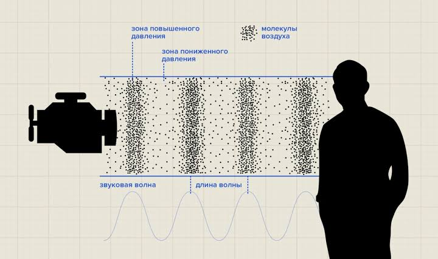
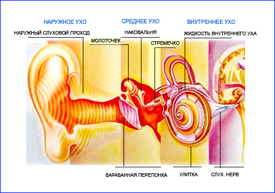
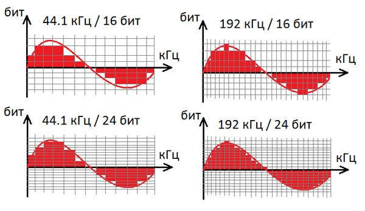
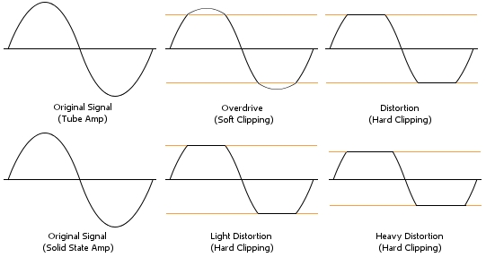
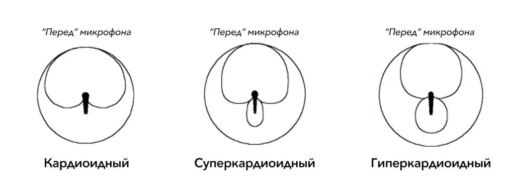
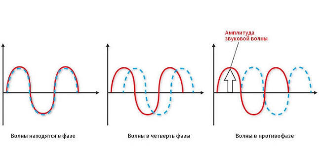
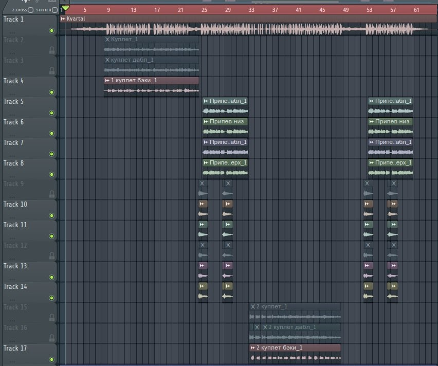

Кто я и зачем эта база знаний Who I am and why this knowledge base exists
Меня зовут Александр (Nick Rise), я звукорежиссёр сведения и мастеринга — Nick Rise Studio. Больше шести лет свожу и мастерю музыку: pop/house, rock/metal, rap/R&B.
Мой опыт — это не только сведение. Я писал аранжировки, поэтому слышу трек целиком и понимаю, что происходит на всех этапах его создания, а не только на последнем. Практически вся моя работа — превращать демо и сырые мультитрекиОтдельные дорожки одного трека: вокал, бит, бас, инструменты — каждая своим файлом. в готовый к релизу коммерческий звук.
- Сайт и услуги: nickrisestudio.github.io/website
База появилась из простого наблюдения: большая часть проблем, с которыми трек приносят на сведение, рождается намного раньше — в комнате, у микрофона и в настройках проекта. Исправить это на этапе микса уже нельзя, а знать заранее — можно. Поэтому здесь разобрана вся техническая цепочка, а не только та часть, за которую платят звукорежиссёру.
Что здесь есть и чего нет
Здесь — техническая сторона записи и сведения вокала. От «как вообще работает звук» и «что купить в первую очередь» до чистки дублей, эквалайзера, компрессора, громкости и финального экспорта. Всё, что можно решить техникой, настройками и организацией, разобрано по шагам: от расположения микрофона в комнате до того, какие файлы прислать звукорежиссёру, чтобы не платить за разбор архива.
Здесь нет уроков вокала, аранжировки, написания текстов и записи живых инструментов с барабанами. Это отдельные большие области со своими специалистами, и учиться им лучше у профильных преподавателей — поверхностная статья тут только вредит. Ещё один нюанс: даже если вы не собираетесь сводить сами, понимание техники нужно. Оно определяет, что вы получите в итоге и сколько раз за это заплатите.
У каждой статьи есть уровень сложности:
- база — то, что нужно знать до первой записи;
- средне — требует внимания, но не опыта;
- продвинутое — темы, к которым приходят после нескольких треков.
Четыре этапа пути трека
Трек проходит четыре этапа. На каждом можно потерять деньги, время и качество, и почти всегда по одной причине: человек не знал, что важно именно здесь.
| Этап | Что решается | Что чаще всего теряют |
|---|---|---|
| До записи | Комната, техника, настройки проекта | Гул и эхо комнаты, шум, неверный формат проекта — всё это потом не убрать |
| Запись | Исполнение, микрофон, уровни, дубли | Клиппинг, слишком мало дублей, запись поверх mp3-минуса |
| После записи | Чистка, компинг, монтаж, экспорт | Щелчки на склейках, грязь, не тот формат при отправке |
| Сведение и мастеринг | Баланс, тембр, пространство, громкость | Перегруз громкости в ущерб динамике и попытка исправить предыдущие этапы |
До записи. Комната, техника, настройки проекта. Здесь решается больше половины итогового качества — и здесь же дешевле всего ошибиться, потому что всё ещё можно переделать. Начните со статьи «Минимальный сетап и бюджет», затем — «Комната для записи» и «DAW: как устроен проект».
Запись. Голос и партии. Ошибки этого этапа исправить уже нельзя, но их можно не допустить: «Как записывать вокал дома», «Какие партии записывать и сколько дублей» и «Шумы и наводки дома» — их проще убрать до записи, чем чистить после. Здесь же живёт главный технический ориентир — пики с запасом около −18 dBFS, подробнее — в статье «Gain staging: уровни по цепочке».
После записи. Чистка дублей, монтаж, отправка проекта: «Что делать с дублями: чистка и компинг», «Монтаж без щелчков» и «Отправить трек на сведение». Это этап, на котором чаще всего «дожимают» то, что можно было просто переписать, — поэтому сначала слушайте себя, а потом беритесь за плагины.
Сведение и мастеринг. То, за что обычно нанимают звукорежиссёра, и то, что нельзя сделать за один вечер: «Сведение: что это такое», «Мастеринг: что это такое» и «Экспорт и финальный файл».
Главное правило: следующий этап не исправляет предыдущий. Мастеринг не спасёт сведение, сведение не спасёт запись, запись не спасёт комнату. Чем позже обнаружена ошибка, тем дороже она стоит — иногда это буквально повторная запись трека.
Сведение и мастеринг — это моя работа. Если микс уже собран, а звучит не так, как хочется, — присылайте: послушаю, скажу, что стоит поправить, и сделаю. Услуги и цены
Как работает звук How sound works
Звук — это не «что-то, что летит от колонки к уху», а изменение давления в воздухе. Несколько базовых вещей — частота, амплитуда, длина волны и неравномерность нашего слуха — объясняют почти все практические правила записи: почему низ ставят в центр, почему два микрофона звучат тоньше одного и почему комната влияет на микс сильнее, чем мониторы.
Что такое звук
Источник (голос, струна, мембрана динамика) толкает воздух — и в воздухе начинает распространяться продольная волнаЗоны сгущения и разрежения, которые бегут от источника.. Молекулы не летят к вам: они колеблются около своего места и передают давление соседям.

Отсюда простая цепочка, которую полезно держать в голове: источник → среда → приёмник. Источник создаёт колебания, среда (воздух) их передаёт, приёмник — ухо или микрофон — регистрирует.
Микрофон устроен по тому же принципу, что и ухо: мембрана ловит изменение давления и превращает его в электрический сигнал. Поэтому всё, что влияет на звук в комнате, влияет и на запись.
Ещё одно следствие: в комнате вы почти никогда не слышите только источник. Вы слышите прямой звук плюс отражения от стен, потолка и стола — они приходят позже и складываются с прямым (подробнее — в «Комната для записи»).
Частота и амплитуда
Почти любую звуковую волну описывают два параметра.
Частота — сколько колебаний в секунду. Измеряется в герцах: 1 Гц = одно колебание в секунду, 100 Гц = сто. Частота воспринимается как высота тона.
Человек слышит примерно от 20 Гц до 20 кГц. Это номинальный диапазон: верхняя граница с возрастом падает, и после 40 лет 15–16 кГц — уже обычная граница. Ниже 20 Гц мы скорее чувствуем, чем слышим.
Амплитуда — насколько сильно меняется давление. Она воспринимается как громкость, но измеряется в децибелах звукового давления (dB SPLЛогарифмическая шкала уровня звукового давления: каждые +10 дБ — примерно вдвое громче.). Точка отсчёта — 0 dB SPL, порог слышимости на 1 кГц.
Шкала логарифмическая, поэтому:
- +6 dB — примерно вдвое больше звукового давления;
- +10 dB — примерно вдвое громче на слух;
- +20 dB — в 10 раз больше давления.
Ориентиры: шёпот — около 30 dB SPL, обычный разговор — около 60, шумная улица — 80–90, болевой порог — около 120.
Важный нюанс: громкость зависит не только от амплитуды, но и от частоты. Один и тот же уровень на 60 Гц и на 1 кГц звучит по-разному — об этом ниже.
Как мы слышим
Путь звука в ухе: ушная раковина → слуховой канал → барабанная перепонка → три косточки среднего уха → улитка внутреннего уха → волосковые клетки → слуховой нерв → мозг.

Среднее ухо работает как согласующий механизм: снаружи звук идёт по воздуху, внутри улитки — по жидкости, и без усиления большая часть энергии отразилась бы. Косточки передают давление и усиливают его.
Улитка — орган, где частота превращается в «место»: разные участки её мембраны реагируют на разные частоты. Высокие частоты возбуждают участок у входа, низкие — в глубине.
И главное для практики: слух неравномерен. Слуховой канал резонирует в районе 2–4 кГц, поэтому полосу примерно 2–5 кГц мы слышим лучше всего. Это видно на кривых равной громкостиГрафики, показывающие, какой уровень на разных частотах нужен, чтобы звучало одинаково громко..
Что из этого следует:
- Всё, что живёт в 2–5 кГц, лезет вперёд: разборчивость вокала и атака — но также резкость и сибилянты.
- Низ и самый верх на тихой громкости «пропадают» первыми — поэтому громче почти всегда кажется лучше (подробнее — в «Слух и громкость при сведении»).
- Слух устаёт и начинает врать: после часа сведения решения меняются, поэтому перерывы — часть работы, а не роскошь.
И ещё: слух не восстанавливается. Долгое прослушивание громче ~80 dB SPL — уже риск (ориентир ВОЗ — не более 80 дБ в течение 40 часов в неделю), а громче 100 dB SPL ухо повреждается за минуты.
Скорость звука и длина волны
В воздухе при 20 °C звук идёт со скоростью около 343 м/с (при 0 °C — около 331 м/с). Это примерно 1 метр за 3 миллисекунды — полезно помнить, когда речь о задержках.
Из скорости и частоты получается длина волныРасстояние между двумя соседними сгущениями воздуха: на 1 кГц — около 34 см.: длина волны = скорость / частота.
| Частота | Длина волны |
|---|---|
| 20 Гц | ~17 м |
| 50 Гц | ~6,9 м |
| 100 Гц | ~3,4 м |
| 1 кГц | ~34 см |
| 5 кГц | ~7 см |
| 10 кГц | ~3,4 см |
| 20 кГц | ~1,7 см |
Смотрите на масштаб: на 50 Гц одна волна — почти 7 метров, то есть длиннее типичной домашней комнаты. На 1 кГц — всего 34 см.
Отсюда три практических вывода.
Низ в комнате ведёт себя иначе, чем верх. Волна на 60–100 Гц сравнима с размером комнаты, поэтому отражается, складывается сама с собой и образует стоячие волны — пики и провалы в разных точках (подробнее — в «Комната для сведения»). Верх такими проблемами почти не страдает.
Фаза зависит от расстояния. Если сигнал приходит задержанным на половину длины волны, он складывается с исходным в противофазе и частично вычитается. На 100 Гц половина волны — это 1,7 м, на 1 кГц — 17 см. Поэтому два микрофона на разном расстоянии дают «стеклянный», тонкий звук (подробнее — в «Фаза и несколько микрофонов»), а стена за микрофоном в 1,7 м даёт первый провал около 50 Гц.
Задержки — это расстояния. 1 мс ≈ 34 см. Зная это, легко прикинуть, почему мониторы на столе и уши в другом месте дают разный низ: это не «плохие мониторы», а геометрия.
Направленность частот
Излучение зависит от соотношения размера источника и длины волны. Голос и динамик малы по сравнению с волной на 50 Гц (7 м), поэтому низ расходится во все стороны, огибает препятствия и почти не затеняется. На 10 кГц волна 3,4 см — верх идёт узким лучом и легко «спотыкается» о голову, микрофон, край стола.
То же и со слухом. Направление мы определяем двумя способами: по разнице времени прихода в два уха и по разнице громкости. На низах разница времени слишком мала относительно периода волны, а голова не затеняет — поэтому низ мы слышим практически всенаправленно и плохо понимаем, откуда он идёт. На верхах, наоборот, голова работает как экран, и направление читается хорошо.
Отсюда правило, которое встречается в любом сведении: низ — в центр. Бас и бочку ставят в центр не по традиции, а потому что стереоинформация на низах всё равно почти не читается, зато разнесение даёт проблемы в моно и на разных системах (подробнее — в «Мониторинг в моно», про панораму — в «Баланс и панорама»).
Это же объясняет бытовые наблюдения: соседи слышат ваш бас, но не слышат верх; из-за стены доносится «бум-бум», а слова не разобрать. И ещё один факт оттуда же: направленность микрофона на низах слабее, чем на верхах — кардиоида на 50 Гц ведёт себя почти как всенаправленный микрофон (подробнее — в «Микрофоны: типы и выбор»).
Если разбираться в физике не хочется — это нормально. Как устроена работа со звукорежиссёром, разобрано в статье «Как работать со звукорежиссёром».
Сведение и мастеринг — это моя работа. Если микс уже собран, а звучит не так, как хочется, — присылайте: послушаю, скажу, что стоит поправить, и сделаю. Услуги и цены
Цифровой звук Digital audio
Каждый раз, когда вы нажимаете Record, микрофон превращает колебания воздуха в электрический сигнал, а аудиоинтерфейс превращает этот сигнал в числа. От того, как именно это происходит и какие настройки стоят в проекте, зависит, сколько информации о голосе доживёт до микса. Здесь — что реально делает АЦП, зачем нужны частота дискретизации и разрядность и почему 0 dBFS — это не «нормальная громкость», а жёсткий потолок.
Аналог и цифра
Аналоговый сигнал непрерывен: напряжение на выходе микрофона меняется плавно, в любой момент времени у него есть какое-то значение. Цифровая система так не умеет — она умеет только записывать отдельные значения через равные промежутки времени.
Этим занимается АЦП (аналого-цифровой преобразователь, ADC). Он стоит внутри аудиоинтерфейса (как устроен интерфейс — в «Аудиоинтерфейс») и делает две вещи:
- Измеряет сигнал много тысяч раз в секунду — сколько именно, задаёт частота дискретизации (sample rate).
- Записывает каждое измерение с определённой точностью — насколько точно, задаёт разрядность (bit depth).
Обратный процесс — ЦАП (цифро-аналоговый преобразователь, DAC) — превращает числа обратно в напряжение, чтобы вы услышали результат в наушниках или мониторах. Именно поэтому качество записи начинается не с плагинов, а с конвертера и преампа в интерфейсе.
Хорошая аналогия — фото и видео: изображение собирается из пикселей, движение — из кадров. Чем мельче сетка и чем больше кадров, тем ближе картинка к реальности. Но, как и с фото, после определённого предела добавление деталей уже ничего не даёт.
Частота дискретизации
Частота дискретизации — это сколько раз в секунду АЦП «смотрит» на сигнал. Измеряется в герцах (Гц) или килогерцах (кГц). 44 100 Гц означает 44 100 измерений в секунду.
Здесь работает теорема Найквиста (Nyquist–Shannon): чтобы сигнал можно было восстановить без ошибок, частота дискретизации должна быть больше удвоенной верхней частоты сигнала. Половина частоты дискретизации называется частотой Найквиста — выше неё записать ничего нельзя.
- 44,1 кГц → потолок 22,05 кГц
- 48 кГц → потолок 24 кГц
- 96 кГц → потолок 48 кГц
Человек слышит примерно до 20 кГц — подробнее в статье «Как работает звук», поэтому уже 44,1 кГц покрывает весь слышимый диапазон. Число 44,1 — историческое: оно выросло из формата CD и привязки цифровой записи к видеосистемам, а не из акустики.
Если в сигнале есть частоты выше потолка, а фильтр перед АЦП их не убрал, возникает алиасинг (aliasing): высокие частоты «складываются» вниз и превращаются в негармонические призвуки — металлический песок, которого в источнике не было. Поэтому в конвертере стоит anti-aliasing фильтр, и поэтому же бессмысленно «записывать выше потолка» — в файл это всё равно не попадёт.
Ниже — как выглядит один и тот же сигнал при разной частоте дискретизации: чем реже точки, тем грубее восстановленная форма волны.

Выше — не значит лучше запись. Микрофон, комната и положение у микрофона (статьи «Микрофоны: типы и выбор» и «Комната для записи») влияют на результат несоизмеримо сильнее. Плюсы 96 кГц реальны только в узких задачах: сильное замедление аудио (varispeed), тяжёлый тайм-стретчинг, некоторые процессы в плагинах. Минусы вполне бытовые: вдвое больше данных, вдвое выше нагрузка на процессор и на конвертер.
Разрядность
Разрядность — это точность каждого измерения. 16 бит дают 65 536 возможных значений уровня, 24 бита — около 16,7 миллиона. Каждый дополнительный бит примерно удваивает число ступеней, то есть добавляет около 6 дБ динамического диапазона — разницы между самым тихим и самым громким, что можно записать.
- 16 бит ≈ 96 дБ теоретического динамического диапазона.
- 24 бита ≈ 144 дБ теоретического динамического диапазона.
Слово «теоретического» важно. В реальном конвертере диапазон ограничен не математикой, а аналоговой частью — шумом преампа, микрофона и самой схемы. На практике хороший интерфейс даёт порядка 110–120 дБ, и это всё равно огромный запас по сравнению с 96 дБ у 16 бит.
Почему пишем в 24, а отдаём в 16. 16 бит — это стандарт CD, и он до сих пор нужен, если файл пойдёт именно на CD. Но при 16-битной записи шум квантования (ошибка округления при переводе в числа) оказывается слишком близко к тихим местам: на шёпоте и затуханиях он слышен как шипение. В 24 битах этот шум находится далеко ниже уровня шума микрофона, поэтому вы можете писать с большим запасом и не думать о нём. При переходе 24 → 16 бит нужен дизеринг — очень тихий шум, который маскирует ошибки округления; включается один раз, на последнем шаге (подробно — в «Экспорт и финальный файл»).
Отдельно про 32-bit float внутри DAW: это формат обработки, а не записи. Он практически не клипует при внутренних операциях, но если клип случился на АЦП — в файле он уже есть, и float его не вернёт.
Запас и клиппинг
0 dBFS (dBFS — децибелы относительно полной шкалы, full scale) — это самое большое число, которое цифровая система может записать. Всё, что громче, не помещается: вершины волны просто срезаются. Это и есть клиппинг.
Цифровой клиппинг неприятен тем, что он необратим. Аналоговая перегрузка хотя бы смягчается и звучит как насыщение, а цифровая — как резкий хруст и грязь на пиках. Убрать это из записанного файла нельзя: информации о срезанных вершинах больше не существует.

Поэтому правило простое: пики должны быть ниже нуля с запасом. Домашняя практика — держать самые громкие места примерно в районе −12…−6 dBFS, чтобы случайно взятая громкая нота не упёрлась в потолок. В 24 битах такой запас ничего не стоит по качеству.
Как выставить уровни по всей цепочке — от преампа до входа интерфейса — разобрано в статье «Gain staging: уровни по цепочке»; здесь достаточно помнить, что красный индикатор на интерфейсе означает, что вы уже потеряли часть сигнала.
Отдельная тонкость: даже если пики в файле ниже 0 dBFS, после конвертации в AAC или MP3 уровень может подрасти, и появятся межсэмпловые пики (true peak). Поэтому на мастеринге потолок обычно ставят около −1 dBTP (подробно — в статьях «Измерения: пик, RMS, LUFS» и «Инструменты мастеринга»).
Что выбрать на практике
Универсальный рабочий стандарт для домашней вокальной записи — 48 кГц / 24 бита. Этого хватает с большим запасом, это самый распространённый формат в мире видео и стриминга, и он не требует конвертации на выходе.
- 44,1 кГц — если проект уже в 44,1, если вы делаете релиз под CD или если площадка требует именно этот формат. Не смешивайте частоты внутри одного проекта.
- 96 кГц — только если вы точно знаете, зачем: например, планируете сильно замедлять материал.
- 24 бита — всегда, независимо от частоты. 16 бит имеет смысл только как финальный формат отдачи.
Частоту дискретизации проекта задают до записи, в настройках сессии (статья «DAW: как устроен проект»). Менять её задним числом — значит прогонять весь материал через конвертер повторно; почему цепочка «96 → 44,1 → 48» портит верх, разобрано в статье «Экспорт и финальный файл».
Мифы
- «96 кГц спасёт плохой микрофон». Нет. Частота дискретизации не добавляет информации о том, чего микрофон не уловил и что комната испортила. Сначала микрофон, положение и обработка комнаты (статьи «Микрофоны: типы и выбор», «Комната для записи»).
- «24 бита = громче». Нет. Разрядность определяет уровень шумовой полки, а не громкость. Громкость делается в сведении и мастеринге (статья «Громкость и стриминг»).
- «Цифра звучит ступеньками, поэтому грубо». При 24 битах и корректном дизеринге ошибка квантования лежит далеко ниже слышимого порога. «Ступеньки» — картинка из учебника, а не то, что слышно в записи.
- «Запишу в 32-bit float — клип не страшен». Внутри DAW — да. Но клип на входе интерфейса уже зафиксирован в сигнале и не восстановится.
- «Чем больше бит и герц, тем лучше трек». На результат в первую очередь влияют исполнение, микрофон, комната и баланс. Настройки формата лишь не должны мешать.
Микс собран, но звучит не так, как хочется? Это как раз то, чем я занимаюсь — сведение и мастеринг. Услуги и цены
Минимальный сетап и бюджет Minimum setup and budget
Эта статья — про то, что реально нужно купить, чтобы начать записывать вокал дома, и в каком порядке вкладывать деньги. Ниже будут конкретные модели и суммы в долларах — валюта стабильнее рубля, поэтому смета не устареет через месяц от смены курса. Главное здесь всё равно не цифры, а порядок решений: он почти не меняется годами.
Что действительно нужно
Список короткий. Всё, что не в нём, — опция, а не необходимость.
- Компьютер. Любой, который тянет DAWDigital Audio Workstation — программа, в которой записывают, редактируют, сводят и экспортируют звук. с десятком-другой дорожек и плагинами. Если вы читаете эту статью, он у вас, скорее всего, уже есть.
- DAW. Все современные программы делают одно и то же, разница в удобстве и цене. Почти все аудиоинтерфейсы идут с упрощённой DAW в комплекте (Ableton Live Lite, Cubase LE и подобные) — этого хватает на первый год. Как устроен проект — в статье «DAW: как устроен проект».
- Аудиоинтерфейс. Коробка, которая превращает сигнал микрофона в цифру и даёт выход на наушники. Нужен вход XLR с фантомным питанием 48 ВНапряжение 48 В для конденсаторных микрофонов и активных DI-боксов, включается кнопкой на канале. и более-менее чистый преампУсилитель микрофонного сигнала: поднимает очень слабое напряжение с микрофона до рабочего уровня.. Подробно — в статье «Аудиоинтерфейс».
- Микрофон. Один нормальный, не «универсальный набор из трёх». Типы и выбор — в статье «Микрофоны: типы и выбор».
- Наушники. Закрытые — те, что не пропускают звук наружу и внутрь. В них пишут: вы слышите минус, а микрофон не слышит ваш минус.
- Стойка и поп-фильтр. Поп-фильтрСетка перед микрофоном: гасит взрывные «п» и «б», которые иначе перегружают запись. гасит «пухи» на «п» и «б».
- Кабель XLR. Один рабочий, не самый дешёвый.
МониторовСтудийные колонки: показывают микс без украшений, в отличие от бытовой акустики. в этом списке нет. Это не ошибка — почему так, ниже.
Что можно не покупать
Почти всё, что продают наборами «домашняя студия», на старте не нужно.
- Внешний преамп. Преампа в интерфейсе достаточно для одного микрофона. Разница слышна в редких случаях и точно не на первом году.
- Компрессор, канальная полоса, «аналоговое тепло». Это делается плагинами в DAW и лучше уже после записи, а не по пути в компьютер.
- Дорогой «студийный» микрофон. Цена растёт быстрее, чем разница в результате.
- Пена «для вида». Тонкий поролон на треть стены не убирает низ и делает запись глухой. Что работает — в статье «Комната для записи».
- Мониторы сразу. Об этом в разделе про порядок вложений.
- Микрофонный экран-«щит». Полезно, но не обязательно: тот же эффект часто даёт плотный мягкий угол и правильная точка в комнате.
Записи получаются без всего этого. Не получаются они без комнаты, микрофона, нормального уровня и практики.
Порядок вложений
Порядок такой: комната и обработка → микрофон и интерфейс → наушники → мониторы.
Логика простая. Комната — самая дешёвая часть вложений (часть обработки вообще бесплатна: перестановка, шкаф с одеждой за спиной, тяжёлые шторы) и при этом самая слышимая: микрофон пишет не только голос, но и отражения от стен, потолка и стола. Микрофон и интерфейс определяют качество сигнала — следующий приоритет. Наушники нужны и на записи, и потом как вторая опора при сведении. Мониторы — в конце, потому что в необработанной комнате они показывают не ваш микс, а комнату (расстановка и почему так — в статье «Комната для сведения», выбор — в статье «Мониторы и наушники»).
Три бюджета
Минимум — около $250
| Позиция | Пример | Цена |
|---|---|---|
| Интерфейс | Behringer U-PHORIA UMC22 | ~$40 |
| Микрофон | Audio-Technica AT2020 (конденсаторный) | ~$100 |
| Наушники | Audio-Technica ATH-M20x (закрытые) | ~$60 |
| Стойка | настольная, простая | ~$5 |
| Поп-фильтр | FZONE PF-8 | ~$10 |
| Кабель XLR 3 м | любой приличный | $10–20 |
Рабочий — около $500
| Позиция | Пример | Цена |
|---|---|---|
| Интерфейс | Focusrite Scarlett Solo | ~$160 |
| Микрофон | sE Electronics X1 S | ~$150 |
| — альтернатива | Audio-Technica AT2035 | ~$160 |
| Наушники | Audio-Technica ATH-M40x (закрытые) | ~$110 |
| — альтернатива | Beyerdynamic DT 770 Pro | ~$180 |
| Стойка | Proel RSM180, «журавль» | ~$30 |
| Поп-фильтр | Force MS-05 | ~$20 |
С запасом — около $1000–1500
| Позиция | Пример | Цена |
|---|---|---|
| Интерфейс | Focusrite Scarlett 2i2 | ~$225 |
| Микрофон | Rode NT1 (XLR/USB) | ~$230 |
| Наушники закрытые | Beyerdynamic DT 770 Pro | ~$180 |
| Наушники открытые | Beyerdynamic DT 990 Pro | ~$180 |
| Мониторы | Presonus Eris E4.5, пара | ~$150 |
| — вариант | Kali Audio LP-6 V2 (цена за штуку) | ~$250 |
| — вариант | Adam Audio T5V (цена за штуку) | ~$240 |
| Акустические панели | за штуку | ~$80 |
Если совсем без интерфейса
Работающий нулевой вариант — USB-микрофон. Например, Rode NT1 USB: начать можно без интерфейса, а потом подключить его в нормальный преамп. Чисто USB-варианты, вроде Audio-Technica AT2020USB-X (~$170), дешевле, но это тупик по апгрейду — внутри уже стоит свой преамп и АЦП, и улучшать там нечего.
Ошибки
- Покупать по обзорам без задачи. «Лучший микрофон до N» — рейтинг для чужого голоса в чужой комнате. Сначала задача: что и как вы пишете.
- Вкладывать в микрофон вместо комнаты. Дорогой микрофон в гулкой комнате запишет гулкую комнату, только чище.
- Брать «как у известного артиста». У него другой голос, другая комната и другой звукорежиссёр.
- Покупать мониторы первыми. В необработанной комнате они не работают как инструмент контроля (статья «Комната для сведения»).
- Апгрейд без диагностики. Прежде чем менять микрофон, поймите, что ограничивает: шум комнаты, уровень (статья «Gain staging: уровни по цепочке»), техника у микрофона (статья «Как записывать вокал дома») или сам микрофон.
- Открытые наушники для записи. Минус протекает в микрофон, и трек потом не спасти.
- Экономия на стойке и поп-фильтре. Дешёвая настольная стойка «клюёт» и скрипит, без фильтра каждый «п» — на переписывание.
Когда сетап собран и первые дубли записаны, дальше чаще всего упираешься не в технику, а во время и наслушанность: сборка дублей, чистка и сведение отнимают больше часов, чем кажется. Если на каком-то этапе проще отдать материал — что именно стоит делегировать и как это устроено, разобрано в статье «Как работать со звукорежиссёром».
Сведение и мастеринг — это моя работа. Если микс уже собран, а звучит не так, как хочется, — присылайте: послушаю, скажу, что стоит поправить, и сделаю. Услуги и цены
Мониторы и наушники Monitors and headphones
Мониторы и наушники — единственный способ услышать то, что вы записали: без них нельзя ни играть под минус, ни сводить. В этой статье разбираем, чем студийные отличаются от бытовых, что реально важно при выборе и почему один и тот же микс нужно слушать на нескольких системах.
Честный звук vs приятный
Мониторы — это инструмент, а не колонки для удовольствия. Их задача — показать, что в миксе не так: гул в низах, резкость на «с», кашу в середине. Бытовые колонки и наушники делают наоборот — украшают.
Как это устроено технически. У бытовой акустики АЧХАмплитудно-частотная характеристика: громкость устройства на разных частотах, от низа до верха. часто имеет «улыбку»: подъём низа и верха при ослабленной середине. Такой звук приятный и «дорогой» на слух, но он маскирует проблемы — бубнящий низ кажется «мясом», а резкий вокал — «ярким». Студийный монитор старается передать сигнал ровно, без добавок.
Отсюда типичное разочарование новичка: первые дни на мониторах собственный микс звучит хуже и скучнее, чем в наушниках от телефона. Это нормально — вы просто впервые слышите его без украшений. И наоборот: если микс нравится только на одной системе и разваливается на всех остальных, значит, вы слышали не микс, а окрас конкретных колонок.
Важно и то, чего мониторы не умеют: они не «улучшат» запись. Шум, клиппинг, грязь комнаты честные мониторы покажут во всей красе — это повод вернуться к записи (статьи «Шумы и наводки дома» и «Чистка вокала: плозивы, клики, шум»), а не крутить эквалайзер.
Что важно в мониторах
Для домашней студии нужны мониторы ближнего поляРассчитаны на прослушивание с расстояния около метра, чтобы комната влияла слабее..
Размер вуфераДинамик для низких частот: у домашних мониторов обычно 5–8 дюймов.. Типичные варианты для дома: 5 дюймов и 7–8 дюймов. Пятидюймовые в паспорте обычно дают нижнюю границу порядка 50–60 Гц, восьмидюймовые опускаются к 40 Гц. Практический вывод: 5 дюймов хватает, чтобы слышать баланс низа, но самый низ колонка не покажет; 8 дюймов требуют больше места и заметно сильнее возбуждают комнату.
При сравнении характеристик смотрите, при каком спаде указана нижняя граница: «−3 дБ» и «−10 дБ» — совершенно разные цифры. Производители часто пишут более щедрую.
Порт фазоинвертораОтверстие для воздуха, который колеблет тыльная сторона динамика; передний порт проще ставить у стены.. Передний порт проще поставить близко к стене, задний требует отступа — иначе низ раздувается. Вплотную к стене не ставить ни те, ни другие; расстановка подробно — в статье «Комната для сведения».
Середина важнее протяжённости низа. Вокал и разборчивость живут примерно в 200 Гц–5 кГц; если монитор «красивый» на низах, но мутный в середине, работать на нём тяжело.
Активные или пассивные. АктивныеМониторы со встроенными усилителями: меньше проводов и согласования, громкость на передней панели. — стандарт для дома: меньше проводов и согласования, регулировка громкости на передней панели. Пассивным нужен отдельный усилитель — это отдельная история и лишние деньги на старте.
Подключение и уровни. Балансные входы XLR/TRSРазъёмы с тремя контактами: балансная линия слабее ловит наводки, чем обычный кабель. предпочтительнее небалансных RCA/jack: меньше шансов поймать гул. Про уровни −10 dBV и +4 dBu — в статье «Аудиоинтерфейс».
И последнее, что забывают: подставки и развязка от стола. Мониторы, стоящие прямо на столешнице, передают ей вибрацию и гудят сильнее, чем нужно.
Типичная домашняя пара: пятидюймовые мониторы на невысоких подставках, твитеры примерно на уровне ушей, равносторонний треугольник с головой.
Наушники
Наушники — не замена мониторам, а второй инструмент, и нужны два разных типа.
ЗакрытыеС глухими чашками: почти не пропускают звук в обе стороны, поэтому годятся для записи. — для записи. В них вы слышите минус, а микрофон не слышит ваш минус. Если писать вокал в открытых наушниках, фонограмма подсасывается в запись, и потом это не убрать.
ОткрытыеС решёткой вместо глухой чашки: слышно комнату, уши меньше устают при сведении. — для сведения. В них меньше устают уши, естественнее ощущается стерео, слышнее детали и дефекты: щелчки, вдохи, лишние шумы. Но они «текут» наружу, поэтому для записи вокала не годятся.
Если бюджет позволяет только одну пару — берите закрытые: без них не записать вокал. Открытые добавьте вторыми.
Что важно в наушниках, кроме ровности: удобство на два-три часа работы и сменные амбушюрыМягкие накладки на чашках, обычно сменные: от них зависит удобство на несколько часов.. И сопротивлениеСопротивление в омах: модели на 250 Ом от выхода интерфейса звучат тихо, им нужен усилитель.: модели на 250 Ом от выхода интерфейса могут звучать тихо, им нужен отдельный усилитель для наушников; модели на 32–80 Ом обычно работают от чего угодно.
Главная ловушка наушников: они не воспроизводят вашу комнату и не дают реального ощущения низа. В наушниках бас кажется ровнее и глубже, чем есть, а стереокартина — шире. Поэтому сводить только в наушниках — плохая идея; как их использовать правильно, разбираем ниже. И про громкость: в наушниках особенно легко уйти в уровень, от которого уши устают за час (статья «Слух и громкость при сведении»).
Беспроводные Bluetooth-наушники для сведения не подходят: задержка и собственная обработка звука делают их непригодными для точной работы, хотя для проверки «как это звучит у слушателя» они как раз годятся.
На что не смотреть
При выборе легко уехать в маркетинг. Вот что не говорит о качестве почти ничего:
- «Для битов», «для рэпа», «для вокала» — на мониторе пишут всё, что продаётся. Одна и та же модель не может быть «правильной» для одного жанра и «неправильной» для другого.
- Ватты. Цифра вида «2 × 50 Вт» описывает, сколько монитор потребляет, а не насколько точно он играет.
- «20 Гц–20 кГц» без указания неравномерности. Такие цифры пишут почти на любой акустике; сравнивать их бессмысленно.
- Количество динамиков, DSP-пресеты, «студийное качество» на бытовых наушниках — маркетинговые ярлыки.
- Графики АЧХ из обзоров без условий измерения: в другой комнате и на другом расстоянии картинка будет другой.
- Цена сама по себе. Дорогие мониторы в необработанной комнате звучат хуже дешёвых в нормальной. И наоборот.
Общее правило покупки — сначала задача, потом модель, а не наоборот; порядок вложений в сетап (и почему мониторы в нём не первые) — в статье «Минимальный сетап и бюджет».
Главное ограничение
Какой бы монитор вы ни купили, большую часть того, что вы слышите, добавляет комната: отражения от стен и стоячие волны дают на соседних частотах разницу в 10 дБ и больше. Это значит, что «ровные» мониторы в обычной жилой комнате звучат неровно — и это ограничение железа не лечится.
Практический вывод: не гнаться за точностью мониторинга, а понимать свою комнату и компенсировать её наушниками и проверкой на разных системах. Что делать с комнатой — в статье «Комната для сведения».
Как проверять микс
Это главный навык, который экономит нервы: у каждой системы своя АЧХ и свои условия, и хороший микс должен работать везде. Три опоры достаточно.
- Мониторы — основной инструмент: баланс, середина, низ в знакомой комнате. Здесь принимаются решения.
- Наушники — микроскоп: детали, щелчки, вдохи, работа деэссера (статья «Сибилянты и деэссер»). Баланс низа по ним не выставляйте.
- «Плохая» система — телефон, ноутбук, Bluetooth-колонка, машина. Там проверяется главное: слышен ли вокал, не превратился ли низ в кашу, не пропали ли бэки.
Порядок работы практический: свели на мониторах → послушали в наушниках на предмет мусора → вывели на телефон и в машину. Полезно проверять и на разной громкости: на тихом уровне баланс слышен лучше, чем на громком (статья «Слух и громкость при сведении»).
Отдельно — проверка в моно (статья «Мониторинг в моно») и сравнение с референс-треком на выровненной громкости (статья «Референс-треки»): они отвечают на вопросы, которые на одной системе не увидеть.
Что делать с найденным: если на телефоне вокал утонул, обычно дело не в телефоне, а в середине и балансе вокала — об этом в статье «Сведение вокала». Если в моно что-то пропало — вопрос к фазе и панораме, об этом в статье «Мониторинг в моно». И не заводите десять систем: три-четыре точки и знакомый трек для сравнения вполне закрывают задачу.
Мониторы и наушники — та часть сетапа, где легко потратить лишнее, а потом всё равно упереться в комнату.
Сведение и мастеринг — это моя работа. Если микс уже собран, а звучит не так, как хочется, — присылайте: послушаю, скажу, что стоит поправить, и сделаю. Услуги и цены
Аудиоинтерфейс Audio interface
Аудиоинтерфейс — это коробка между микрофоном и компьютером, через которую проходит весь звук при записи и почти весь при сведении. Если писать вокал через встроенную звуковую карту ноутбука, вы почти гарантированно получите шум, тихий сигнал и задержку. Ниже — что внутри интерфейса, за что отвечает каждый разъём и как выбрать модель, которой хватит на несколько лет.
Что делает интерфейс
Путь сигнала при записи выглядит так: микрофон → преампПредусилитель, который поднимает очень слабый сигнал микрофона до рабочего уровня. → АЦПАналого-цифровой преобразователь: превращает напряжение с микрофона в цифровой код для компьютера. → компьютер по USB. Обратно, при воспроизведении, сигнал идёт через ЦАПЦифро-аналоговый преобразователь: превращает цифру обратно в напряжение для наушников и мониторов. на выход для мониторов и на наушники.
То есть в одном корпусе живут три устройства: преамп, конвертеры и усилитель для наушников. Плюс ручки, разъёмы и драйвер, который связывает всё это с программой.
Зачем он вместо звуковой карты ПК. У ноутбука на входе обычно один разъём 3,5 мм с дешёвым преампом: нет фантомного питания, нет нормальной регулировки гейна, нет отдельного выхода на мониторы. Такой вход годится для созвона, но не для вокальной записи — он шипит, ловит наводки от USB и материнской платы, а громкий голос легко превращает в клиппинг. Интерфейс решает именно эти три проблемы: чище сигнал, управляемый уровень, нормальные выходы.
Входы
Смотреть надо не на количество разъёмов, а на то, что за ними стоит.
- XLR — балансный микрофонный вход. Основной разъём для вокала: балансная линия хуже ловит наводки, чем обычный кабель.
- TRS jack (джек 6,3 мм, три контакта) — балансный линейный вход, для синтезатора, внешнего преампа, процессора.
- TS jack (два контакта) — небалансный инструментальный вход.
На большинстве интерфейсов разъёмы совмещённые: в одно гнездо можно воткнуть и XLR, и джек. Рядом обычно есть переключатель или автоопределение mic / line / instrument. Режим instrument (его ещё называют Hi-Z) даёт высокое входное сопротивление, порядка 1 МОм — это нужно пассивным звукоснимателям гитары и баса, иначе звук становится тонким и теряет низ.
Фантомное питание 48 В нужно конденсаторным микрофонам и активным DI-боксам. Включается кнопкой на канале. Динамическим микрофонам оно не вредит, а вот ленточным его подают только если производитель прямо разрешает — с некоторыми старыми моделями это может закончиться ремонтом.
Ещё на входе бывает пэд (pad) — аттенюатор на −10 или −20 дБ. Он спасает, когда источник очень громкий: барабаны, громкий вокал в конденсаторный микрофон, гитарный кабинет.
Преампы
Преамп — самая обсуждаемая часть интерфейса и при этом самая переоценённая. Главный вопрос не «какой у него окрас», а «сколько шума он даёт на том гейне, который вам нужен». Этот параметр описывают цифрой EIN (эквивалентный входной шум): чем ниже, тем тише собственный шум преампа при сильном усилении. У современных интерфейсов, включая недорогие, EIN обычно лежит в диапазоне примерно от −120 до −129 dBu (A-weighted), и разница в 6–8 дБ слышна в основном с тихими микрофонами и на больших гейнах.
«Чистый» преамп не добавляет ничего от себя, «окрашивающий» подкрашивает: чуть плотнее низ, чуть мягче верх. Ни то, ни другое не «правильнее» — окрас можно добавить плагином позже, а вот шум убрать почти нельзя.
Нужен ли внешний преамп. В 99% домашних вокальных задач — нет. Внешний преамп покупают, когда встроенного реально не хватает по гейну или шуму, а не «для качества». В порядке вложений это одна из последних покупок — подробнее в статье «Минимальный сетап и бюджет».
Как проверить свой преамп за минуту: включите микрофон, выставьте гейн на рабочий уровень, наденьте наушники и послушайте тишину в комнате. Если слышно только комнату — всё в порядке. Если слышно шипение или писк, это либо преамп, либо наводка (подробно — в статье «Шумы и наводки дома»).
Выходы и мониторинг
- Main out — пара балансных выходов на мониторы, обычно джеки или XLR. Ручка рядом управляет их громкостью.
- Выход на наушники — со своей ручкой. Хорошо, когда он не зависит от громкости main out: можно убавить мониторы и работать в наушниках.
- Direct monitoring — сигнал с входа идёт напрямую на выход, минуя компьютер. Это даёт нулевую задержку при записи. Минус: плагинов и обработки в этом режиме вы не слышите. Если включить direct monitoring и одновременно слушать вход через DAW, получите двойной звук с эхом — что-то одно надо выключить.
Дополнительные выходы на второй комплект мониторов, loopback для стримов или отдельные линейные входы — приятные опции, но на старте они не нужны.
Номинальные уровни
Это место, где чаще всего теряется 10–12 дБ «непонятно куда».
Профильное оборудование работает на уровне +4 dBu (номинально около 1,23 В), бытовое — на −10 dBV (около 0,32 В). Разница между ними примерно 12 дБ.
На практике: если вы воткнёте линейный выход бытового синтезатора или плеера во вход, рассчитанный на +4 dBu, сигнал будет тихим — придётся выкручивать гейн почти до упора и вместе с сигналом поднимать шум. Обратная ситуация — выход +4 dBu в бытовой вход — даёт перегруз и клиппинг ещё до того, как ручка сдвинута с нуля.
Проверка простая: если для нормального уровня ручка гейна стоит в крайнем положении — где-то несоответствие уровней. И помните, что цифровой потолок — это 0 dBFS, а рабочий ориентир записи — пики около −18 dBFS: запас нужен, чтобы не поймать клип на громкой ноте (подробно — в статье «Gain staging: уровни по цепочке» и статье «Цифровой звук»).
Драйверы и латентность
Драйвер — программа, через которую DAW разговаривает с интерфейсом. На Windows нужен ASIO: либо родной драйвер производителя, либо ASIO4ALL как запасной вариант. На macOS всё работает через системный Core Audio, отдельный драйвер обычно не нужен. Стандартные Windows-драйверы (WASAPI, DirectSound) для записи не годятся — задержка будет слишком большой.
Латентность (задержка между тем, что вы поёте, и тем, что слышите в наушниках) регулируется размером буфера в настройках DAW. Ориентиры при 48 кГц:
| Буфер | Задержка на одно направление | Когда использовать |
|---|---|---|
| 64 сэмпла | ~1,3 мс | запись, если компьютер тянет |
| 128 сэмплов | ~2,7 мс | запись, компромиссный вариант |
| 256 сэмплов | ~5,3 мс | запись/сведение, если не хватает мощности |
| 512–1024 сэмпла | ~10,7–21,3 мс | сведение, когда задержка не важна |
Важно: это только буфер. Реальная сквозная задержка (запись → компьютер → воспроизведение) больше, потому что в неё входят оба буфера и время работы конвертеров. Ориентир по ощущениям: до примерно 10 мс вокалист поёт комфортно, дальше начинает «тянуть» и терять ритм.
Правило выбора: маленький буфер = маленькая задержка, но выше нагрузка на процессор и риск щелчков и выпадений. Большой буфер = стабильно, но с задержкой. На записи ставьте минимальный, при котором нет треска, на сведении — большой.
Мелочи, которые реально влияют: подключайте интерфейс напрямую в порт, а не через дешёвый USB-хаб, и отключите энергосбережение USB-портов в системе.
Сколько входов нужно
Правило простое: столько, сколько вы одновременно пишете, плюс один.
- вокал в один микрофон — 1 вход;
- два микрофона на один источник, дуэт, вокал + гитара — 2 входа;
- несколько инструментов живьём — 4 и больше.
Дома 99% задач закрывают два входа. Один запасной нужен, чтобы не перетыкать кабели посреди записи и чтобы добавить второй микрофон или инструмент без покупки нового интерфейса. Восемь и больше входов дома нужны только тем, кто пишет барабаны или ансамбль.
Полезные вещи, на которые стоит смотреть кроме числа входов: наличие фантома на каждом канале, отдельная ручка гейна на каждом входе, нормальный выход на наушники, поддержка 24 бит / 48 кГц (подробно о форматах — в статье «Цифровой звук») и драйверы, которые производитель до сих пор обновляет.
Сведение и мастеринг — это моя работа. Если микс уже собран, а звучит не так, как хочется, — присылайте: послушаю, скажу, что стоит поправить, и сделаю. Услуги и цены
DAW: как устроен проект The DAW: how a project is built
Проект в DAW — это не просто набор дорожек, а схема: что куда идёт, где обрабатывается и куда сохраняется. Если понимать эту схему, любая программа перестаёт быть страшной, а записи перестают теряться. Здесь — база: из чего состоит проект и как разложить его, чтобы через месяц самому не разбираться в собственных файлах.
Что такое DAW
DAW (Digital Audio Workstation, цифровая звуковая рабочая станция) — программа, в которой записывают, редактируют, сводят и экспортируют звук. Внутри у всех программ одни и те же блоки: дорожки для звука, микшер с фейдерами, плагины для обработки, окно экспорта. Разница — в удобстве, горячих клавишах, встроенных инструментах и цене, а не в «качестве звука»: при одинаковых плагинах и настройках результат получается практически идентичным.
Примеры: Pro Tools (исторический стандарт студий), Logic Pro (только macOS), Cubase, Studio One, Ableton Live (силён в электронике и живых выступлениях), FL Studio, REAPER. Выбирать на старте стоит по двум критериям: есть ли по ней понятные уроки на вашем языке и есть ли человек, к которому можно прийти с вопросом. Навык переносится: разобравшись, как устроен проект в одной программе, вы за пару вечеров поймёте другую.
Треки и каналы
Ключевое различие: дорожка (track) — место в окне проекта, где лежат записи или ноты; канал (channel) — полоса в микшере с фейдером, панорамой, вставками и посылами. У аудиодорожки обычно есть и то и другое; у MIDI-дорожки бывает иначе.
| Тип дорожки | Что хранит | Для чего |
|---|---|---|
| Аудио | записанный звук (файл на диске) | вокал, гитара, любой живой источник |
| MIDI | команды: нота, сила нажатия, длина | игра на виртуальном инструменте, правка нот |
| Инструментальная | MIDI + виртуальный инструмент в одном | быстрый набросок партии |
| Aux / return (вспомогательная) | ничего своего, принимает сигнал других треков | общий реверб, параллельная обработка |
В разных DAW названия гуляют: шина, bus, group, aux, return, folder — иногда это одно и то же, иногда нет. Проще запомнить суть: канал, который принимает чужой сигнал и что-то с ним делает.
Ещё две вещи, которые ломают новичкам жизнь. Первое: аудиодорожка в проекте и файл на диске — не одно и то же, внутри одного трека может лежать несколько дублей и «плейлистов» (take lanes / playlists). Второе: вокал с одного микрофона — это моно, а не стерео. Стерео из одного микрофона не появится, запись только съест место и запутает панораму.
Шины и маршрутизация
МаршрутизацияКуда именно направляется сигнал из каждого канала: на мастер, на подгруппу или на посыл. — самая невидимая часть проекта. Путь по умолчанию простой: вход интерфейса → дорожка → вставки на дорожке → выход → мастер-шина → выход интерфейса. Мастер — общая шина, через которую проходит всё: обработка на ней действует на весь микс сразу.
Дальше путь можно усложнять. Выход дорожки назначают не на мастер, а на подгруппу (например, все бэки в одну шину, чтобы управлять ими одним фейдером) или на вспомогательный канал через посыл (send). Посыл отличается от вставки тем, что не забирает сигнал целиком, а отправляет его копию; обработанная копия возвращается на шину и смешивается с сухим сигналом. Подгруппы и параллельные шины подробно разобраны в статье «Подгруппы и маршрутизация» — здесь важно понять главное: проект это схема, а не список файлов.
Если что-то «не звучит» или звучит дважды, почти всегда виноват выход канала: сигнал ушёл не туда, идёт в мастер в обход обработки или проходит один и тот же плагин два раза. Первое, что стоит проверить: куда назначен выход, не включён ли mute/solo где-то в глубине папки и не задвоён ли мониторинг (прямой вход интерфейса плюс канал в DAW — об этом в статье «Аудиоинтерфейс»).
Плагины
Плагин — отдельная программа-обработка, которую DAW загружает внутрь проекта. Форматы разные, и не каждый плагин работает в каждой DAW:
| Формат | Где работает | Комментарий |
|---|---|---|
| VST / VST3 | Windows и macOS, почти все DAW | самый распространённый; VST3 — актуальная версия |
| AU (Audio Units) | только macOS | родной формат Apple |
| AAX | только Pro Tools | студийный стандарт Avid |
Перед покупкой смотрите на странице производителя: формат, поддержку вашей ОС и разрядность. Старые 32-битные плагины в современных 64-битных DAW не запустятся; иногда спасает «мост» (обёртка), но это лотерея с падениями и глюками.
Дальше — два способа включения, и их важно не путать. Вставка (insert) стоит в самом канале: через неё проходит весь сигнал, поэтому на вставке логичны эквалайзер, компрессор, деэссер. Посыл (send) отправляет часть сигнала на отдельную шину с эффектом и возвращает обратно — так делают реверб и дилей, чтобы одним эффектом пользовалась целая группа треков (подробно — в статье «Эффекты: реверб, дилей, модуляция»). Порядок вставок тоже имеет значение: компрессор до эквалайзера и после — два разных звука, и это инструмент, а не ошибка.
Про ресурсы: каждый плагин ест процессор, и чем их больше на мастер-шине, тем тяжелее проект. Если компьютер захлёбывается, помогает «заморозка» (freeze / bounce in place) — DAW считает дорожку вместе с обработкой во временный файл и дальше просто проигрывает его.
Настройки проекта
Перед первой записью в новом проекте проверяют пять вещей:
- темп в BPM и размер (чаще 4/4) — от них зависят сетка, метроном и синхронизация дилеев;
- частота дискретизации (sample rate) — рабочий стандарт 48 кГц или 44.1 кГц;
- разрядность (bit depth) — 24 бита;
- частота аудиоинтерфейса должна совпадать с частотой проекта;
- формат записи — WAV.
Почему именно 48 кГц / 24 бита и что происходит при других значениях — в статье «Цифровой звук». Здесь достаточно правила: частоту проекта не меняют на середине работы, иначе DAW начнёт пересчитывать всё на лету. А вот темп менять можно, но если аудио уже записано, DAW начнёт растягивать или сжимать файлы (warp / time-stretch), и звук может поехать. Проще определиться с темпом до записи, а бит и инструментал подогнать заранее (статья «Работа с битом и инструменталом»).
Порядок в проекте
Порядок в проекте — это не эстетика, а сэкономленные часы. Через месяц вы откроете сессию и не вспомните, где «тот дубль». Что стоит сделать сразу:
- назвать дорожки по роли и содержанию: Lead, Double L, Harmonies, Adlibs, а не Audio 12;
- разложить дорожки по папкам (folders) и дать им цвет;
- держать постоянный порядок: лид-вокал, даблы, бэки, ад-либы, инструментал;
- поставить маркеры на секции: интро, куплет, припев, бридж;
- удалить пустые дорожки и черновики;
- сохранить шаблон (template) для повторяющихся задач — новый проект будет открываться уже размеченным.
Версии и бэкапы
Аудио хранится отдельными файлами, а проект лишь ссылается на них. Поэтому перенос на другой компьютер — это не «перетащить один файл», а «собрать проект с файлами»: в Logic и Ableton это Collect All and Save, в Cubase — Backup Project, в Pro Tools — Save Copy In. Если этого не сделать, на другом компьютере проект откроется с пустыми дорожками.
Дальше — версии. Рабочая схема: artist_song_mix_v01, _v02, _v03, и перед крупной правкой (переписали вокал, поменяли аранжировку) — Save As в новую версию, а не Ctrl+S поверх единственного файла. Автосейв есть почти везде, но он не спасает от «сохранил плохое поверх хорошего». Плюс одна копия на другой диск или в облако. Правило простое: не сохранил в двух местах — считай, потерял.
Автоматизация
АвтоматизацияЗапись движения ручки или фейдера во времени: проект меняется сам, без ваших рук. позволяет проекту меняться самому: фейдер поднимается на тихой фразе, реверб добавляется только в припев, фильтр уезжает в интро. Работает она в режимах read / touch / latch / write, и главная ошибка новичка — забыть выйти из write и случайно стереть записанное. Что и когда автоматизировать — в статье «Автоматизация».
Если проект уже собран, а звук всё равно не тот, — присылайте стемы на сведение: я разберу, что мешает, и объясню решение словами, а не только на слух.
Сведение и мастеринг — это моя работа. Если микс уже собран, а звучит не так, как хочется, — присылайте: послушаю, скажу, что стоит поправить, и сделаю. Услуги и цены
Комната для записи A room for recording
Микрофон записывает не только голос, но и комнату: каждое отражение от стены, потолка и стола приходит в файл вместе с вами. Поэтому «обработка комнаты» — это не про студийный вид, а про то, чтобы в записи не было эха, гула и стеклянного призвука. Ниже — практика: где встать с микрофоном, что можно сделать бесплатно, что стоит купить, почему крошечная комната и «вокальная будка» часто делают хуже и как за пять минут понять, стало лучше или нет.
Что слышит микрофон
Микрофон получает прямой звук (то, что летит от рта до капсюля по кратчайшему пути) и отражения — звук, который успел удариться о стену, потолок, пол, стол, шкаф, стекло и вернуться. Всё это суммируется в один сигнал, и разделить обратно уже нельзя.
Дальше работает физика. Скорость звука — около 343 м/с, то есть за 1 мс (одну тысячную секунды) звук проходит примерно 34 см. Если микрофон стоит в 17 см от стены, отражение проходит лишние 34 см и приходит с задержкой около 1 мс. Прямой и задержанный сигнал складываются, и на некоторых частотах они гасят друг друга: первый провал будет примерно на 500 Гц, дальше — на 1,5 кГц, 2,5 кГц и так далее. Это называется гребенчатой фильтрациейПрямое и задержанное отражение складываются, и на части частот они гасят друг друга.. На слух — тонко, «из бочки», будто голос потерял тело. Подробнее о фазе — в статье «Фаза и несколько микрофонов».
Отражения, которые приходят в первые ~20 мс, сливаются с прямым звуком и воспринимаются как часть самого голоса — именно они и портят тембр. Более поздние отражения мы слышим уже как эхо или «комнату»: это то самое «записал в ванной».
Важный нюанс: стена за спиной поющего важнее всех остальных. Микрофон с кардиоидой смотрит вам в лицо, а значит, смотрит и в стену за вами — она попадает в самую чувствительную зону капсюля. Поэтому начинать обработку нужно именно с неё, а не с углов.
Размер комнаты важнее обработки
Есть два механизма, и оба зависят от размера, а не от панелей.
Первый — геометрия. Чем меньше комната, тем ближе стены и тем короче задержка отражений. Провалы от гребенчатой фильтрации лезут выше по частоте, прямо в середину голоса, где слух особенно чувствителен. В большой комнате те же отражения приходят позже и тише — и в записи слышны как приятная «комната», а не как порча тембра.
Второй — низкие частоты. Между параллельными стенами образуются стоячие волныРезонансы на определённых частотах, или моды: волна нужной длины «застревает» между параллельными стенами.. Первая осевая мода считается как 343 / (2 × длина комнаты): для 3 м это около 57 Гц, для 2,5 м — около 69 Гц, для потолка 2,7 м — около 63 Гц. В маленьком помещении моды редкие и далеко разнесены друг от друга, поэтому одни ноты гудят заметно сильнее других: вокалист поёт выше — нормально, опустился на терцию — «бум». Обработкой это не лечится, только смягчается.
Практические ориентиры, которые дают в литературе по акустике: комнату меньше примерно 10 м² с потолком ниже 2,4 м «вылечить» нельзя — можно только уменьшить вред; куб (3×3×3 м) — худший вариант, потому что все моды совпадают; вытянутая комната лучше квадратной. Точные расчёты и что с этим делать при сведении — в статье «Комната для сведения».
Отсюда главный вывод для записи: чем меньше комната, тем ближе микрофон ко рту. На расстоянии 10–15 см прямой сигнал заметно громче отражений, и комната отступает на второй план (про расстояние — в статье «Микрофоны: типы и выбор», про эффект близости — в статье «Как записывать вокал дома»). В большой комнате можно позволить себе 20–30 см, в маленькой — нет.
Три принципа
1. Не в угол и не в центр. В углу сходятся две стены, и отражения приходят сразу с двух сторон, а низкие частоты там накапливаются — голос становится бубнящим. Точно по центру прямоугольной комнаты тоже неудачно: там свои акустические особенности. Практическое правило: отойдите от стен и углов и встаньте не в геометрическом центре помещения — например, примерно на треть комнаты по длинной стороне. Теория комнаты, симметрия и моды — в статье «Комната для сведения»; здесь достаточно не ставить микрофон в углы и не петь в центре.
2. За спиной — мягкое. Одеяло, плотный плед, матрас, ковёр на стене, шкаф с одеждой, акустическая панель на стойке — что угодно поглощающее позади вас. Это самый дешёвый и самый слышимый шаг. Заодно уберите за спину всё твёрдое и блестящее: стекло, зеркало, лакированный шкаф, голую стену.
3. Микрофон не вплотную к стене. Чем ближе микрофон к стене, тем короче задержка отражения и тем выше по частоте лезут провалы — прямо в середину голоса. Держите хотя бы метр до ближайшей стены, а лучше больше; то же касается потолка и пола — не пойте, уткнувшись в стену плечом, и не ставьте стойку в нишу. В совсем маленькой комнате метр может быть недостижим: тогда работает обратный ход — микрофон ближе ко рту плюс поглощение за спиной.
Плюс мелочи, которые почти ничего не стоят: ковёр или плотное покрытие на пол, тяжёлые шторы на окно, петь в комнате с мягкой мебелью, а не в помещении с плиткой. Если микрофон стоит на столе — уберите со стола пустые коробки и поставьте под стойку что-то мягкое: пустая столешница тоже отражает. И проверьте параллельные голые стены: если между ними слышен быстрый «дррр» (флаттер), обработайте одну из двух — несимметрично, иначе легко получить «мёртвую» зону.
Три уровня бюджета
Бесплатно — переставить и использовать то, что есть. Переезд в другую комнату, поворот точки записи, тяжёлые шторы, ковёр, матрас, прислонённый к стене, шкаф с одеждой за спиной, книги на полке. Работает хуже панелей, но разница с «голой комнатой» слышна сразу и в наушниках, и в миксе. Отдельно: маленькая кладовка с одеждой даёт много поглощения, но звук там получается коробочный и «мёртвый» — это крайность, а не цель.
Дёшево — панели в первых отражениях. 3–5 панелей из минеральной ваты толщиной 5–10 см в каркасе (или готовые) — за спину поющего, по бокам, над головой. Это самое разумное вложение на старте: обработка точки записи даёт больше, чем микрофон на ступень дороже. Отдельная полезная вещь — переносной щит на стойке: его можно ставить за спиной и убирать, когда он не нужен.
Дорого — строить. Каркас, минеральная вата, обшивка, отдельная комната, при желании — плавающий пол и нормальная вентиляция. Здесь важно не путать две задачи: акустическая обработка делает комнату приятной на слух и в записи, а звукоизоляция не даёт звуку уходить к соседям и приходить от них. Одеяло на стене — обработка; оно не изолирует. Минвата в стене с щелями — тоже в основном обработка. И помните про размер: строить правильнее не «потайную каморку», а помещение, где вокалисту есть куда отойти от стены.
Что не работает
- Портативная «вокальная будка» — палатка из поролона, куда влезает голова и микрофон. Она действительно убирает комнату, но заменяет её комнатой ещё хуже: объёмом меньше кубометра, с собственными резонансами и с поглощением только верхов. На выходе — звук «из-под одеяла»: глухой сверху, гулкий в середине, без воздуха. Плюс в ней нечем дышать и нельзя двигаться, а значит, страдает исполнение. Для демо на телефон она ещё годится, для трека в релиз — почти всегда нет.
- Яичные лотки. Тонкий картон почти не поглощает, чуть рассеивает самые верхи — и всё. Зато отлично горит.
- Тонкий поролон (2–3 см «пирамидки»). Поглощает только верхнюю часть спектра: «бубнёж» в середине остаётся, а воздух и разборчивость умирают. Голос звучит глухо и при этом всё равно гулко.
- Мягкое на всех стенах и ковёр на всё. Комната становится «мёртвой»: голос неестественно сухой, в нём нечем дышать, и в микс он потом не встаёт. Убирать нужно не всё, а отражения вокруг микрофона.
- Экран (reflection filter) за микрофоном как «решение проблемы комнаты». Он закрывает часть верхних отражений позади капсюля, но не трогает самую громкую стену — ту, что за спиной поющего. Дешёвые модели вдобавок подкрашивают звук своим пластиком и близкой поверхностью. Как небольшое дополнение к панели за спиной — можно; как замена обработке — нет. Проверяется одним тестом: запись с экраном и без, выровнять громкость и сравнить подряд.
- Запись в шкафу или кладовке «чтобы не было эха». Одежда поглощает середину и верх, а маленький объём усиливает низ — получается «бочка», из которой голос потом трудно вытащить.
Проверка за пять минут
Самый быстрый тест — хлопок в ладоши на точке записи и вокруг неё. Короткий сухой «клац» — хорошо. Быстрое дребезжание, «дррр» или слышимый хвост — есть эхо, которое придёт в запись. Хлопните ещё раз, повернувшись к стене за спиной: часто именно там худший ответ.
Второй шаг — тестовая запись: 15–20 секунд вокала, лучше с паузами между фразами, и послушать в закрытых наушниках. В процессе пения вы слышите свой голос через кости и мышцы и не замечаете комнату; в записи она слышна сразу, особенно в паузах.
Третий шаг — тишина: запишите 10–15 секунд молчания на том же уровне, что и голос, и послушайте громче. Так слышно и комнату, и шум — техника, холодильник, компьютер (что с этим делать — в статье «Шумы и наводки дома»).
И главное: сравнивайте «до» и «после», а не «кажется/не кажется». Повесили одеяло за спиной — записали тот же куплет, послушали оба файла подряд, выровняв громкость. Метод с хлопком, свип-тест и бесплатный REW подробно разобраны в статье «Комната для сведения».
Если комната упирается в предел и обработка уже не помогает — это нормальный момент, чтобы записывать вокал в подготовленном помещении: разница слышна именно на голосе, а не в теории. Что именно стоит делегировать, а что спокойно делается дома, — в статье «Как работать со звукорежиссёром».
Сведение и мастеринг — это моя работа. Если микс уже собран, а звучит не так, как хочется, — присылайте: послушаю, скажу, что стоит поправить, и сделаю. Услуги и цены
Комната для сведения A room for mixing
Мониторы — это только половина системы: вторая половина — комната, в которой они стоят. Здесь разберём, как расставить мониторы, почему отражения и низкие частоты портят картину и что можно сделать без ремонта и больших денег. Статья про прослушивание при сведении; как готовить комнату под запись — в статье «Комната для записи».
Почему комната важнее мониторов
Вы слышите не колонки. Вы слышите сумму прямого звука от колонок и отражений от стен, потолка, стола и пола. Если комната даёт на 80 Гц подъём в +10 дБ, а на 120 Гц провал, то разница между мониторами за 30 тысяч и за 300 тысяч в этой точке почти не слышна — оба будут звучать «как комната».
Это ловушка: комната окрашивает звук всегда одинаково, и вы невольно начинаете «компенсировать» её в своём миксе. Кажется, что низа много — вы убираете низ. Кажется, что середины мало — вы добавляете. Потом трек слушают на других системах и удивляются: низа нет, а середина, наоборот, звенит. Поэтому вложения в акустику почти всегда дают больше, чем апгрейд мониторов (что покупать и в каком порядке — в статье «Минимальный сетап и бюджет»).
Отражения в первые ~20 мс
Звук от монитора доходит до вас двумя путями: напрямую и через отражение. Отражение всегда приходит чуть позже. Если задержка небольшая — примерно до 20 мс — слух не воспринимает отражение как отдельное эхо и «склеивает» его с прямым звуком.
Казалось бы, хорошо. Но физика: два одинаковых сигнала со сдвигом во времени складываются не ровно, а волнами — где-то в фазе (громче), где-то в противофазе (тише). Возникает гребенчатая фильтрацияСложение прямого и задержанного сигнала: часть частот складывается в фазе, часть — в противофазе. (подробное объяснение — в статье «Фаза и несколько микрофонов»). На слух это «стеклянный», пустой, «бочковатый» звук, и никакой EQ этого не исправляет: вы меняете не сигнал, а результат сложения в конкретной точке комнаты.
Практический вывод: близкие отражения — главный враг. Чем ближе к вам отражающая поверхность, тем раньше приходит отражение и тем выше по частоте и шире полоса, которую оно портит. Первые отражения при сведении обычно приходят с задержкой всего в единицы миллисекунд — от стола перед вами, от боковых стен, от стены за мониторами, от потолка.
Расстановка мониторов
Правила простые, но их стоит соблюсти до покупки любых панелей.
- Равносторонний треугольник. Голова и два монитора — вершины треугольника с равными сторонами; обычно это 1–1,5 м до каждого монитора в домашней комнате. Мониторы развёрнуты на слушателя, а не параллельно стене.
- Твитеры на уровне ушей. ВысокочастотникМаленький динамик монитора, который отдаёт верхние частоты и сильнее всего влияет на направленность. должен смотреть вам в уши по высоте, иначе верх «уезжает». Мониторы на подставках или хотя бы на жёстких подложках, а не на стопке книг.
- Симметрия. Вы сидите ровно на оси между мониторами, расстояния до левой и правой стены одинаковые. Любая асимметрия (шкаф с одной стороны, проход с другой) ломает центр и стереокартину — а центр в вокальной музыке и есть самое важное.
- Отступ от стены за мониторами. Не вплотную. Стена за монитором даёт отражение, которое складывается с прямым звуком и выедает полосу на частоте, зависящей от расстояния. Это называют SBIRSpeaker Boundary Interference Response — интерференция от близкой границы: отражение от стены складывается с прямым звуком.. Первый провал считается примерно как 343 / (4 × d), где d — расстояние от центра вуфера до стены, 343 м/с — скорость звука:
| Расстояние до стены | Первый провал (≈) |
|---|---|
| 0,3 м | 285 Гц |
| 0,5 м | 170 Гц |
| 1 м | 86 Гц |
| 1,5 м | 57 Гц |
| 2 м | 43 Гц |
Дальше провалы повторяются на 3-й, 5-й и следующих гармониках. Читается это так: «прижатые» к стене мониторы дают провал в середине (там, где голос), а отодвинутые — в самом низу. Идеального расстояния нет: либо вы выбираете, где будет дырка, либо убираете отражение поглощением на стене за мониторами.
- Не в угол и не на равном расстоянии от двух границ. Угол удваивает подъём низа от границ, а одинаковое расстояние до боковой стены и до пола складывает два провала в один, делая его глубже. Сдвиньте монитор и по высоте, и по ширине.
- Стол. Самая ранняя и самая вредная поверхность — столешница перед вами. Отражение от неё приходит почти мгновенно и мылит середину. Помогает: стол поменьше, мониторы ближе к его заднему краю, наклон столешницы (если конструкция позволяет), поглощение на задней части стола или на полу под ним.
Низкие частоты
С низами сложнее всего, потому что это не «отражения», а стоячие волныРезонансы на определённых частотах: волна нужной длины «застревает» между двумя параллельными стенами.. Для каждой пары стен есть свой набор частот, на которых низ усиливается или проваливается. Первая мода считается как 343 / (2 × L), где L — размер комнаты в метрах: для стены 4 м это ≈43 Гц, для 5,7 м — ≈30 Гц.
Что важно понимать:
- Моды зависят от размеров комнаты: чем меньше комната, тем выше и реже стоят первые моды — именно поэтому в маленьких комнатах «гудит» на 40–80 Гц.
- Проблема локальная: сдвинулись на 30 см — картина низа другая. Поэтому «правильного» микса в комнате с сильными модами не существует, есть микс, подогнанный под конкретное кресло.
- EQ не лечит комнату. Провал — это вычитание волн в точке прослушивания: сколько ни поднимай эту частоту, в точке пропадания её всё равно нет, зато во всей комнате низа станет больше. Узкий подъём или вырез действует только в одной точке и легко превращает комнату в «качели».
- Басовые ловушки. Практика — пористый поглотитель (минвата в каркасе, акустические ловушки) в углах, в том числе в верхних, где сходятся три границы. Работают они на низах только при достаточной толщине: 5 см поролона гасит верх и почти не трогает низ. Ориентир, который стоит держать в голове: чтобы поглощение заработало примерно от 100–150 Гц, слой нужен сантиметров 15–20 и больше, плюс отступ от стены. Дома это чаще «уменьшить проблему», чем «решить её».
С чего начать без денег
Порядок такой — сначала бесплатно, потом покупки.
- Освободите углы. Не ставьте стол в угол, уберите из углов шкафы с посудой и всё, что резонирует.
- Разберитесь с расстановкой: треугольник, симметрия, высота твитеров, отступ от стены за мониторами и от боковых стен.
- Обработайте стену за мониторами — самое слышимое отражение. Достаточно 5–10 см пористого материала (минвата, акустическая панель, плотное одеяло в крайнем случае) на площади за каждым монитором.
- Обработайте боковые стены в точках первых отражений: сядьте на месте прослушивания, попросите кого-нибудь провести рукой с зеркалом по стене — точка, где вы видите монитор в зеркале, и есть точка отражения.
- Займитесь полом/потолком, если после этого ещё «звенит»: ковёр не на всю комнату, а в зоне между вами и мониторами; на потолке — панель над головой или чуть впереди.
- Только потом добавляйте басовые ловушки в углы.
Как проверить
- Хлопок в ладоши на месте прослушивания. Хороший признак — короткий сухой хлопок без «хвоста» и без металлического призвука. Если слышно дребезг — где-то что-то резонирует (стекло, полка, светильник), найдите и уберите.
- Свип-тест. Прогоните по комнате синусоидальный свипПлавный тон, который проезжает по частотам от 20 Гц до 20 кГц. и послушайте: на каких нотах звук явно громче или, наоборот, проваливается. Это карта ваших проблемных частот на слух.
- REW. Бесплатная программа Room EQ Wizard: свип + измерительный микрофон (желательно с калибровочным файлом) дают график АЧХ и «водопад»График, где видно, как долго затухает каждая частота: длинные «хвосты» на низах — признак мод.. Не гонитесь за красивой линией — вам нужно понять, где провалы, а где гул, и не двигать ли мониторы.
- Знакомый трек. Включите песню, которую знаете наизусть, и послушайте, что с ней «не так» в этой комнате: где раздутый низ, где пропал вокал. Это ваша калибровка ушей под помещение.
Во всех случаях уровень стоит держать умеренным, а не «погромче»: подробнее о громкости и усталости слуха — в статье «Слух и громкость при сведении».
Если комната плохая
Жилая комната почти всегда останется жилой. Это не приговор, но нужно менять стратегию:
- Наушники как вторая опора. ОткрытыеНе изолируют от комнаты: в них удобно сводить и слышно, что происходит вокруг. плюс проверка на мониторах: решения принимаете там, где уверены, сомнительное — проверяете на второй системе. Подробнее — в статье «Мониторы и наушники».
- Ближнее поле и негромко. Чем ближе мониторы и тише уровень, тем больше в ушах прямого звука и меньше комнаты.
- Проверка на нескольких системах. Телефон, машина, дешёвые наушники — это не «костыль», а обязательный этап, подробнее — в статье «Мониторы и наушники».
- Референсы. Сравнение с профессионально сведёнными треками выравнивает ваши представления о норме, подробнее — в статье «Референс-треки».
- Моно. Проверка в моно ловит то, что в комнате с модами могло остаться незамеченным, подробнее — в статье «Мониторинг в моно».
И самое честное: если после расстановки и обработки первых отражений низ всё равно неуправляем, не пытайтесь «дожать» его EQ — либо принять ограничение и опираться на наушники и проверки, либо отдать сведение туда, где мониторинг предсказуемый.
Если не хочется разбираться с расстановкой и замерами самому — можно прислать пару фото комнаты и запись «хлопка» или свипа: подскажу, что поправить в первую очередь.
Сведение и мастеринг — это моя работа. Если микс уже собран, а звучит не так, как хочется, — присылайте: послушаю, скажу, что стоит поправить, и сделаю. Услуги и цены
Шумы и наводки дома Noise and hum at home
Вокал записан вроде чисто, а в наушниках под ним ровный гул или шипение — и непонятно, откуда. Эта статья о том, как за десять минут найти виновника, что можно исправить своими руками и какие шумы не лечатся дома вообще. Логика простая: сначала найти источник, потом решать, чинить или переписывать.
Откуда шум
Домашняя студия шумит по трём разным причинам, и лечатся они по-разному.
Тональный гул (hum). Это низкая нота, чаще всего 50 Гц и её кратные — 100, 150, 200 Гц. В России и Европе частота сети 50 Гц, в США и части Японии — 60 Гц, поэтому «нота гула» зависит от страны. Источник — сеть 220/230 В, блоки питания, земляные петли, проводка в стене. Гул узнаётся сразу: он ровный, не зависит от того, что вы играете, и часто меняется, когда трогаешь микрофон или стойку.
Широкополосное шипение (hiss). Ровный шум «как из рации», без выраженной ноты. Это либо собственный шум преампа и микрофона, либо высокочастотная дрянь от импульсных блоков питания и USB-шины. Отличить просто: шипение не меняется, когда вы ходите по комнате, а гул — часто меняется.
Щелчки, треск, жужжание. Тут почти всегда виновата конкретная железка: плохой контакт в кабеле или разъёме, LED-лампа с диммером, телефон рядом с кабелем (тот самый «тик-тик-тик» перед звонком), блок питания ноутбука, холодильник за стеной, лифт.
Отдельно стоит помнить: часть «шума» в записи вообще не электрическая. Вентилятор ноутбука, кондиционер, улица, гудящий холодильник попадают в микрофон как обычный звук, и убираются они не фильтрами, а положением микрофона, выключением техники и обработкой комнаты (подробнее — в статье «Комната для записи»).
Как найти источник за 10 минут
Метод один: поднимаем громкость так, чтобы шум было хорошо слышно, и по очереди отключаем подозреваемых. Важно не «оценивать, громко ли шипит» (какой-то шум будет всегда), а ловить изменение: стало тише, пропало, появилось.
Порядок действий:
- Наденьте наушники, выкрутите гейн преампа на максимум. Петь при этом не нужно — нам нужна шумовая полка, а не голос.
- Отключите микрофон от интерфейса, оставив гейн. Если шум остался — шумит сам интерфейс или его преамп. Если шум пропал — виноват микрофон, кабель или наводка на них.
- Воткните кабель обратно, но без микрофона. Шум вернулся — кабель работает как антенна, ловит поле.
- Отключайте по одному: зарядку ноутбука (и послушайте от батареи), USB-устройства и хаб, внешний диск, монитор, роутер, лампу и диммер, телефон уберите из кармана. После каждого шага слушайте, ушёл ли шум.
- Подвигайте микрофон и кабель по комнате, поверните их. Гул, который меняется от положения, — это магнитное поле: блок питания, трансформатор, проводка в стене, соседская техника за стеной.
Дальше уже по характеру звука: чистые 50/100 Гц — сеть и земля; высокочастотный писк или «жужжание с искрой» — импульсный блок питания или USB; нерегулярный треск — контакт; ритмичные щелчки — лампа, диммер, телефон.
Балансная и небалансная коммутация
Половина наводок лечится не экраном и не фильтром, а типом кабеля.
Небалансное соединение — два проводника: сигнал и земля (он же экран). Земля работает и как обратный провод, поэтому всё, что навелось на кабель, складывается с сигналом и уходит дальше. Это гитарные кабели jack, RCA («тюльпаны»), миниджек 3,5 мм, большинство бытовых соединений.
Балансное соединение — два сигнальных провода, по которым сигнал идёт в противофазе, плюс экран. Вход вычитает один провод из другого, и помеха, наведённая на оба провода одинаково, взаимно гасится. Это XLR и TRS jack (тот, что с тремя контактами). Насколько хорошо гасится — зависит от прибора; в характеристиках это называется CMRR (common mode rejection ratio — подавление синфазной помехи), и у дешёвых устройств оно заметно скромнее, чем у хороших.
Практический вывод: микрофон — только XLR, линейные соединения — TRS или XLR, гитара и синтезатор с высокоомным выходом — небалансный jack, и такой кабель держим коротким. Небалансный шнур длиной 5–10 метров, проложенный вдоль сетевых проводов и блоков питания, ловит наводку почти гарантированно; балансный в тех же условиях обычно остаётся чистым. Отдельная классика — переходники «миниджек → XLR»: многие из них выглядят балансными, а внутри небалансные.
Земляная петля
Самая частая причина гула, и самая непонятная на вид.
Как она получается: два прибора, каждый заземлён через свою розетку, дополнительно соединены аудиокабелем. Получается два пути на землю — петля. По экрану кабеля начинает течь ток, и вы слышите его как гул 50 Гц с гармониками.
Как звучит: ровный низкий гул, есть даже когда никто не поёт, не зависит от положения микрофона, часто усиливается, когда касаешься микрофона, стойки или корпуса ноутбука.
Что делать по порядку:
- Всё питание — в одну розетку или один удлинитель. Одна линия питания убирает большинство петель.
- Перейти на балансные соединения, где это возможно.
- Проверить зарядку ноутбука: отключите её и послушайте от батареи. Если гул ушёл — виноват блок питания (точнее, ток утечки через него).
- DI-бокс с ground lift — переключателем, который разрывает землю на аудиостороне. Это законный и безопасный способ, потому что заземление прибора при этом остаётся на месте.
- Убрать лишние USB-устройства с собственным питанием, если они не нужны в записи.
Чего делать нельзя: выламывать или заклеивать заземляющий контакт в вилке, использовать переходники «без земли», резать экран кабеля наугад, отключать заземление у приборов с металлическим корпусом. Заземление — это защита человека, а не «антенна для наводок». Также не стоит лечить петлю гейтом или вырезанием 50 Гц на эквалайзере: гул никуда не денется, просто спрячется, а вместе с ним уедет низ голоса.
Что не лечится дома
Есть шумы, с которыми вы в своей комнате ничего не сделаете, и лучше это принять сразу, чем покупать третий кабель.
- Проводка. Старый дом без заземления, алюминиевые провода, скрутки, соседская нагрузка на той же линии, диммеры и LED-лампы в подъезде. Тут нужен электрик, а не звукорежиссёр.
- Внешние источники. Трансформаторная будка под окном, лифт, трамвай, сварка у соседей. Иногда помогает перенести запись на другое время суток.
- Шумная карта или преамп. Если на высоком гейне слышно шипение даже с отключённым микрофоном — это собственный шум устройства, он в характеристиках называется EIN (equivalent input noise — эквивалентный входной шум). Софтом это не лечится. Варианты: другой интерфейс, внешний преамп, микрофон с более высоким выходом, микрофон ближе к рту. Чем громче полезный сигнал относительно шума, тем лучше итог.
- «Поющий» компьютер. Писк дросселей на материнской плате (coil whine) и гул вентиляторов не убираются настройками. Помогает вынести корпус подальше, поставить SSD вместо жёсткого диска, заменить вентилятор, а иногда просто записывать в другой комнате.
Если совсем никак — есть обходные пути: динамический микрофон (менее чувствителен к тихим шумам и не требует большого гейна), запись в другом помещении или один оплаченный час в студии именно на вокал.
Что можно убрать потом
Часть шумов действительно чистится на этапе обработки, но с потерями. Примерно так:
| Тип шума | Убирается после записи? | Чем |
|---|---|---|
| Ровное широкополосное шипение | Да, до определённого предела | спектральный шумодав (noise reduction) |
| Гул 50 Гц и гармоники | Частично | хайпасс, notch, de-hum |
| Отдельные щелчки, стуки, вдохи | Да, почти без потерь | ручная правка |
| Шум, который включается и выключается | Практически нет | — |
| Клиппинг, искажения | Нет | — |
Ориентир из практики: до примерно 6 дБ подавления шумодав работает незаметно, дальше начинается «подводный» призвук и пропадает воздух. Гул фильтром высоких частот снимается только по основному тону — гармоники на 100 и 150 Гц остаются, и голос вместе с ними теряет низ.
Правило простое: поиск источника занимает десять минут, чистка — час, и после неё всё равно слышно, что что-то не так. Поэтому переписывать стоит, если помеха слышна на уровне вдохов между фразами, если шум «плавает» по ходу дубля или если щелчок попал точно на атаку слова. Ровный, стабильный шум переписать приятнее, чем чистить. Подробнее о чистке — в статье «Чистка вокала: плозивы, клики, шум».
Если разбираться с наводками и чисткой не хочется, это как раз та работа, которую можно отдать: запись вокала в обработанной комнате с нормальным питанием и последующая чистка занимают у звукорежиссёра меньше времени, чем поиск гула на ощупь. Что именно прислать и как поставить задачу — в статье «Как работать со звукорежиссёром».
Сведение и мастеринг — это моя работа. Если микс уже собран, а звучит не так, как хочется, — присылайте: послушаю, скажу, что стоит поправить, и сделаю. Услуги и цены
Микрофоны: типы и выбор Microphones: types and choice
Микрофон — первое звено, которое решает, что вообще попадёт в запись, и никакой плагин потом это не исправит. Здесь разберём, как микрофон превращает воздух в сигнал, какие типы бывают, что означают цифры в спецификации и как выбрать один микрофон под вокал, не скупая полмагазина.
Как работает микрофон
Внутри микрофона есть мембрана — тонкая плёнка или металлическая лента, которая колеблется от колебаний воздуха. Дальше эти колебания превращаются в электрический сигнал, и способ превращения зависит от типа микрофона: катушка в магнитном поле, изменение ёмкости между пластинами или лента в магнитном поле.
Сигнал на выходе очень слабый — единицы милливольт. Поэтому микрофону всегда нужен преампУсилитель очень слабого сигнала микрофона до рабочего уровня; обычно встроен в аудиоинтерфейс., обычно он встроен в аудиоинтерфейс — подробнее в статье «Аудиоинтерфейс».
Важно понимать: микрофон ничего не «улучшает», он только преобразует то, что до него дошло. А доходит и прямой звук от рта, и отражения от стен, потолка и стола — то есть ваша комната (статья «Комната для записи»). Один и тот же микрофон в разных комнатах звучит по-разному, и это слышно сильнее, чем разница между двумя микрофонами одной цены.
Три типа
Динамический. Мембрана соединена с катушкой, катушка двигается в магнитном поле. Устройство простое и прочное: не требует питания, терпит высокие уровни, случайные удары и жару. Мембрана тяжелее, поэтому микрофон менее чувствителен — ему нужно больше усиления, а значит, выше требования к тихому преампу и чистой проводке (статья «Шумы и наводки дома»). Характер обычно плотный, часто с акцентом в середине, без яркого верха.
Конденсаторный. Мембрана — одна из двух пластин конденсатора: она колеблется, ёмкость меняется, сигнал снимается с пластин. Нужно напряжение поляризации, поэтому почти всем конденсаторным микрофонам требуется фантомное питание 48 В (стандарт, закреплённый в IEC 61938). Мембрана лёгкая → быстрее реакция на транзиентыКороткие фронты атаки: щелчок, удар, согласная — то, что начинается резко и быстро затухает., больше деталей и верха. Отсюда и репутация «студийного» микрофона для вокала.
Ленточный. В магнитном поле подвешена тонкая гофрированная лента. Верх мягкий, звук ровный и естественный, но лента хрупкая: сильный поток воздуха или удар могут её порвать. Пассивная лента даёт очень низкий выход, ей нужен преамп с большим чистым усилением. С фантомным питанием надо быть осторожным: современные ленты часто защищены, но старые и неизвестные модели лучше не подключать при включённых 48 В.
| Тип | Питание | Сильные стороны | Где применяют |
|---|---|---|---|
| Динамический | не нужно | прочный, держит громкое, мало берёт комнату | вокал вблизи, речь, громкие источники |
| Конденсаторный | 48 В (кроме электретных) | детальность, верх, чувствительность | вокал в студии, акустика |
| Ленточный | обычно не нужно (активным — да) | мягкий верх, естественный тембр | вокал, «винтажный» характер |
Направленность
Направленность (полярный паттерн) — то, как микрофон слышит звук с разных сторон. Основных четыре:
- Кардиоида — слышит спереди, почти не слышит сзади. Рабочий стандарт для вокала.
- Суперкардиоида и гиперкардиоида — уже спереди, но появляется небольшой «хвост» сзади. Точки максимального подавления — примерно 126° и 110° от оси.
- Омни (круг) — слышит со всех сторон одинаково.
- Восьмёрка — спереди и сзади, с провалом по бокам (примерно 90°).
Для дома главное следствие такое: чем уже зона спереди, тем меньше отражений комнаты попадёт в запись. Кардиоида отсекает стену за вашей спиной, а омни тянет в запись всю комнату, включая соседнюю стену и гул. Поэтому в необработанной комнате кардиоида или суперкардиоида — практичный выбор, а омни лучше отложить до тех времён, когда помещение будет готово.
Ниже — как выглядят эти диаграммы, полезно один раз посмотреть глазами.

Характеристики
В спецификации микрофона смотрят на пять вещей.
- АЧХ (амплитудно-частотная характеристика) — график, показывающий, какие частоты микрофон подчёркивает, а какие убирает. Ровная линия — нейтральность, подъём на верхах — «яркость». График полезен, но характер он не описывает: два микрофона с похожими кривыми могут звучать по-разному.
- Максимальный SPL — уровень, при котором начинаются слышимые искажения. У конденсаторов это обычно 130–140 дБ SPL, часто с аттенюаторомПереключатель pad, который ослабляет сигнал перед схемой микрофона, чтобы громкий источник не перегружал вход. ещё выше. Для вокала вблизи этого хватает с большим запасом.
- Собственный шум (эквивалентный уровень шума, указывают в dB-A) — шипение самого микрофона. У конденсаторов его обычно приводят, у динамических часто нет. Чем меньше число, тем тише микрофон при большом усилении; это важно, если вы пишете тихий голос и вынуждены сильно поднимать гейн.
- Чувствительность — сколько сигнала микрофон даёт при данном звуковом давлении, в mV/Pa или dBV/Pa (1 mV/Pa = −60 dBV/Pa). Отвечает на вопрос «сколько гейна понадобится на преампе», а не «насколько микрофон хорош».
- Нужно ли 48 В — конденсаторным и активным ленточным нужно, пассивным динамическим и ленточным нет.
Отдельно стоит размер мембраны: крупная даёт больше ощущения «объёма» и низа, мелкая точнее передаёт атаку. Для вокала обычно берут крупную — но это вкус, а не правило.
Что брать под задачу
Для вокальной записи дома есть два рабочих пути, и оба дают результат.
Конденсатор с кардиоидой — детальнее, больше верха и «воздуха», но он же честно запишет всё, что отражается от стен. В комнате с эхом он подчёркивает эхо.
Динамический (например, из часто используемых вокалистами моделей вроде SM7B или SM58) — плотнее, меньше зависит от комнаты, часто больше низа, но требует больше гейна на преампе. Для рэпа, крика и близкого вокала в необработанной комнате это нередко более удачный выбор, чем конденсатор.
Дальше по задачам: речь и подкаст — динамический; громкие источники — динамический или конденсатор с включённым аттенюатором; тихий вокал — конденсатор с низким собственным шумом.
На старте нужен один хороший микрофон под ваш голос, а не три средних. Что можно не покупать: второй и третий микрофон «на разные случаи», ламповый конденсатор, винтажную ленту, а также USB-микрофон, если у вас уже есть интерфейс с XLR-входом. Порядок вложений и бюджеты — в статье «Минимальный сетап и бюджет».
Эффект близости
У направленных микрофонов есть физическая особенность: чем ближе источник, тем сильнее подъём низких частот. Это и есть эффект близости (proximity effect). У омни его нет — ещё одна причина, почему направленность важна.
На практике это значит: у самого рта голос становится «толще» и тяжелее, а в 30–40 см — тоньше, но и комнаты в записи больше. Рабочая дистанция для вокала — 10–20 см, с поп-фильтром между ртом и микрофоном.
Держите расстояние постоянным: если в одном дубле вы близко, а в другом отъехали, тембр изменится и склейка будет слышна. Эффект близости — не то, что нужно компенсировать эквалайзером потом: лучше сразу контролировать дистанцией.
Мифы
«Дороже = лучше». После определённого уровня разница между микрофонами становится меньше, чем вклад комнаты, преампа и навыка пения. Дорогой микрофон в звонкой комнате запишет звонкую комнату — просто детальнее.
«Конденсатор всегда лучше динамического». Тип микрофона подбирается под голос, комнату и задачу. В неподготовленном помещении динамический часто звучит лучше конденсатора именно потому, что меньше слышит стены.
Если не хочется покупать микрофон наугад или запись всё равно выходит хуже, чем ожидалось, — можно записать вокал в подготовленной комнате с проверенной цепочкой. Что для этого нужно и как всё устроено — в статье «Как работать со звукорежиссёром».
Сведение и мастеринг — это моя работа. Если микс уже собран, а звучит не так, как хочется, — присылайте: послушаю, скажу, что стоит поправить, и сделаю. Услуги и цены
Gain staging: уровни по цепочке Gain staging: levels along the chain
Gain staging — это про то, как провести сигнал от микрофона до файла в DAW, не потеряв его в шуме и не срезав верхушки пиков. На первый взгляд скучная техническая рутина, но именно здесь решается, будет ли запись чистой или «шипящей», и можно ли её потом спасти сведением. Хорошая новость: всё сводится к нескольким правилам и одному ориентиру — уровню с запасом.
Что это такое
Gain staging (дословно — «выставление усиления по этапам») — это настройка уровня сигнала на каждом звене цепочки: на преампе, на внешнем приборе, на входе аудиоинтерфейса. Цель одна: чтобы на каждом участке сигнал попадал в свою рабочую зону — достаточно громко, чтобы шум прибора и комнаты остался позади, и достаточно тихо, чтобы ничего не клиповало.
Важно сразу разделить две вещи:
- Gain (усиление) — уровень сигнала в проводе или внутри плагина. Это то, что мы настраиваем.
- Фейдер (fader) — регулятор громкости канала при сведении. Это то, чем мы балансируем треки между собой.
Gain staging не про то, как громко звучит трек в колонках. Он про то, какой сигнал физически записывается в файл.
Цепочка
В домашней записи вокала аналоговая часть цепочки почти всегда выглядит одинаково:
микрофон → преамп → (компрессор / EQ) → линейный вход интерфейса → АЦП → DAW
Разберём по звеньям, потому что у каждого свой уровень сигнала:
- Микрофон выдаёт mic level — очень слабый сигнал, единицы милливольт (порядка −60…−40 dBu).
- Преамп усиливает его до line level — рабочего уровня, на котором работает студийное оборудование.
- Внешний компрессор или EQ (если он есть) работает на line level: вход и выход у него рассчитаны на этот уровень.
- Линейный вход интерфейса принимает line level и отдаёт сигнал в АЦП (аналого-цифровой преобразователь — микросхема, которая превращает напряжение в числа).
- DAW считает уже в цифровой шкале dBFS, где 0 dBFS — потолок.
Отдельно стоит запомнить: у интерфейса вход может быть переключён в режим mic (тогда работает встроенный преамп), line (преамп отключён) или instrument/Hi-Z (для гитары). Если вы подаёте в интерфейс сигнал с внешнего преампа, а вход стоит в режиме mic, вы усиливаете дважды — и получаете и шум, и клип. Подробнее про входы и уровни интерфейса — в статье «Аудиоинтерфейс».
Оптимальный уровень
У каждого прибора есть рабочая зона, в которой он звучит лучше всего и даёт лучший сигнал/шум (отношение полезного сигнала к собственному шуму прибора).
Логика простая. Преамп шумит всегда — его собственный шум не зависит от того, что вы в него подаёте. Если вы ставите мало усиления, полезный сигнал остаётся близко к этому шуму, и соотношение получается плохим. Если ставите слишком много — сигнал упирается в потолок и клипует. Значит, нужно усиление, при котором громкие места ещё не клипуют, а тихие уверенно стоят выше шума.
На практике это выглядит так: исполнитель поёт самый громкий фрагмент, а вы смотрите на индикатор и ставите пики в районе −12…−6 dBFS. Тогда средний уровень материала окажется где-то около −18 dBFS, а шум преампа и комнаты останется глубоко внизу.
Для вокала это отдельно важно: динамика голоса огромная, а разница между тихой фразой в куплете и криком в припеве может быть 20–30 дБ. Запас по уровню нужен именно под этот разброс.
Аналог и цифра
Проблема в том, что аналоговые приборы и цифровая шкала измеряют разное.
В аналоге есть понятие «номинал»: 0 VU на стрелочном индикаторе — это рабочая точка прибора, для профессионального оборудования она соответствует уровню +4 dBu. Прибор может уходить выше нуля, это нормально — у него есть запас сверху.
В цифре потолок жёсткий: 0 dBFS, выше — клиппинг, и всё, что выше, срезается безвозвратно.
Чтобы два мира состыковать, приняли калибровку: 0 VU соответствует определённому отрицательному значению в dBFS. В европейской практике (стандарт EBU) это −18 dBFS, в американской (SMPTE) — −20 dBFS. Отсюда и берётся известный ориентир «−18 dBFS ≈ 0 VU»: это не законы физики, а договорённость, которая держится в рабочем диапазоне большинства оборудования.
Что это значит для вас:
- Ориентир по среднему уровню — около −18 dBFS, пики — заметно выше, обычно −10…−6 dBFS. Это и есть «запас».
- Запас нужен не «на всякий случай», а по трём причинам: транзиенты (короткие пики атаки) непредсказуемы и вылезают выше среднего; дальше в цепочке будут плагины, которые могут добавить уровень; при конвертации и перекодировании возможны межсэмпловые пики, которых вы в DAW не видите.
- Принцип «чем ближе к нулю, тем лучше» — миф родом из 16-битной эпохи. В 24 битах шумовая полка квантования настолько низко, что выжимать уровень к нулю нет никакого смысла: вы только рискуете клипом. Почему 0 dBFS — жёсткий потолок — разобрано в статье «Цифровой звук».
Отдельная деталь: плагины, которые эмулируют аналоговые приборы, часто рассчитаны на вход около −18 dBFS. Если подать в них сигнал на −6 dBFS, они начнут «перегружаться» и искажать — иногда это приятно, но чаще не то, что вы хотели.
Практика
Порядок действий при записи вокала:
- Выставьте gain на преампе под самый громкий фрагмент. Не под «ля-ля» на проверке, а под реальный припев в полную силу. Пики — около −12…−6 dBFS.
- Проверьте, не клипует ли сам преамп, а не только индикатор в DAW. Клип в аналоговой части не виден по цифровому индикатору так же явно.
- Если в цепочке есть компрессор — его выход (output / makeup gain) выставьте так, чтобы уровень на входе следующего прибора был примерно таким же, каким он был на входе компрессора. Не «погромче, чтобы слышно было».
- На интерфейсе выберите правильный вход. Внешний преамп → line in, преамп интерфейса в минимум или обход. Микрофон напрямую → mic in.
- Фейдер в DAW трогайте в последнюю очередь — и только для баланса, когда запись уже есть.
Проверка занимает минуту: запишите 10–15 секунд с самым громким местом, послушайте в наушниках, добавив громкости, и оцените, слышно ли шипение и гул в паузах. Если слышно — уровень слишком низкий или в комнате есть наводки (про поиск шума — статья «Шумы и наводки дома»).
И помните про запас в 24 битах: если сомневаетесь между «погромче» и «потише» — выбирайте потише. Тихий чистый файл поднимается одним движением, клип не лечится ничем.
Частые ошибки
- Клип на преампе. Красный индикатор в DAW — это уже следствие. Если пик срезан в аналоге, восстановить его нельзя: только переписывать. Не пытайтесь «спасти» клип обработкой (что реально делается с записью — в статье «Чистка вокала: плозивы, клики, шум»).
- Слишком тихий уровень. Сам по себе он не смертелен в 24 битах, но после компрессии и подъёма на сведении наружу вылезает шум преампа, гул комнаты и наводки. Исправлять это на этапе сведения дорого.
- Попытка исправить уровень фейдером. Фейдер стоит после АЦП. Он меняет громкость уже записанного сигнала, но не возвращает срезанные пики и не убирает шум. Уровень на входе — это gain, а не фейдер; фейдер — инструмент баланса (статья «Баланс и панорама»).
- Двойное усиление. Внешний преамп плюс включённый преамп интерфейса — классическая причина «почему так шумит».
- Крутить gain по ходу дубля. Уровень скачет, и выравнивать его потом придётся вручную. Выставляйте усиление до записи и не трогайте.
- Компрессор вместо настройки уровня. Перегруженный вход компрессора звучит как искажение, а не как «плотность». Компрессор — это про динамику (статья «Компрессор»), не про то, чтобы спасти перегруз.
Если разбираться с уровнями не хочется или запись уже сделана и «что-то не так звучит» — пришлите файл, я посмотрю уровни по всей цепочке и скажу, где именно потерялся сигнал. Обычно проблема решается за один разговор, а не за новую сессию записи.
Сведение и мастеринг — это моя работа. Если микс уже собран, а звучит не так, как хочется, — присылайте: послушаю, скажу, что стоит поправить, и сделаю. Услуги и цены
Фаза и несколько микрофонов Phase and multiple microphones
Два микрофона на один источник почти всегда звучат тоньше и «стекляннее», чем один, — и виновата в этом не техника, а физика. В этой статье разбираем, чем фаза отличается от полярности, как возникает гребенчатая фильтрация, и что делать, если запись уже сделана и звук «поплыл».
Что такое фаза и полярность
Фаза — это положение сигнала во времени относительно другого сигнала. Говорят о сдвиге фазы в градусах: полный период сигнала — это 360°. Если один и тот же звук приходит к вам на 1 мс позже другого, то на частоте 1 кГц (период как раз 1 мс) это сдвиг на целые 360°, то есть сигналы совпадут, а на частоте 500 Гц (период 2 мс) — на 180°, то есть в противоположные стороны. Один и тот же временной сдвиг означает разную фазу на разных частотах — это ключевой момент всей статьи.
Полярность — это просто переворот сигнала: все положительные значения становятся отрицательными и наоборот. Кнопка «Ø» (инверсия полярности) на преампе или в DAW делает именно это — переворачивает волну. Она не сдвигает сигнал во времени и не «двигает микрофон».
Разница принципиальная. Если два микрофона стоят на разном расстоянии от источника, между ними есть сдвиг по времени, и он частотно-зависимый: переворотом полярности такой сдвиг полностью не лечится — он совпадёт только в узкой полосе частот. Полярность — грубая, но мгновенная ручка; время — то, что реально определяет результат.
Справка по расстояниям: скорость звука в воздухе при 20 °C — около 343 м/с, то есть примерно 34 см за 1 мс. Микрофон в 1 м от источника получает звук примерно на 2,9 мс позже, чем микрофон вплотную.
Гребенчатая фильтрация (comb filtering)
Когда вы складываете прямой сигнал с его задержанной копией примерно того же уровня, часть частот усиливается, часть взаимно гасится. На графике АЧХ это выглядит как ряд повторяющихся пиков и провалов — «гребёнка» (comb).
Цифры, которые полезно запомнить: если задержка между двумя копиями сигнала — T, то первый глубокий провал появляется на частоте 1/(2T), а дальше провалы повторяются каждые 1/T.
| Задержка | Что это по расстоянию | Первый провал | Шаг провалов |
|---|---|---|---|
| 0,5 мс | ~17 см разницы пути | 1 кГц | 2 кГц |
| 1 мс | ~34 см | 500 Гц | 1 кГц |
| 2 мс | ~69 см | 250 Гц | 500 Гц |
| 5 мс | ~1,7 м | 100 Гц | 200 Гц |
Расчёт для скорости звука 343 м/с; на практике значения немного плывут из-за температуры и геометрии.
Как это слышно: источник звучит тонко, «стеклянно», «из бочки», с металлическим призвуком, а низ как будто пропал. Чем ближе уровни двух сигналов, тем глубже провалы и тем очевиднее проблема. Если вторая копия тише на 10 дБ и больше, гребёнка остаётся, но становится мягче.
Отдельно важно: гребенчатая фильтрация — это не «неправильный тембр», который можно поправить эквалайзером. Это результат суммирования, и вырезанную частоту обратно эквалайзером не вернуть.
Стоит один раз увидеть, как это выглядит на анализаторе — дальше вы начнёте узнавать звук на слух.

Откуда берётся
- Второй микрофон на тот же источник. Классика: два микрофона на вокал, близкий + дальний, верх и низ малого барабана.
- Отражение от стены, стола или потолка. Отражение приходит к микрофону на доли миллисекунды — миллисекунды позже прямого звука, и вы получаете гребёнку прямо в одной дорожке. Подробнее о том, как с этим бороться местом записи, — в статьях «Комната для записи» и «Комната для сведения».
- DI + микрофон. Прямой сигнал с DI приходит мгновенно, микрофон — с задержкой на прохождение воздуха: 30 см до динамика дают около 0,9 мс.
- Два дубля внахлёст. Лид и дабл, бэки, слой синтов — небольшие расхождения по времени между слоями дают тот самый «стеклянный» призвук.
- Параллельные шины и плагины с задержкой. Если одна копия сигнала проходит через плагин с внутренней задержкой (look-ahead лимитер, линейно-фазовый EQ), при смешении с сухим сигналом появляется сдвиг. В нормальной DAW задержки компенсируются автоматически, но не всегда и не везде — а в некоторых настройках компенсация отключена.
Как выровнять
Двигать микрофон, а не ручку. Основной инструмент — геометрия. Прежде чем что-то нажимать в DAW, попробуйте:
- поставить микрофоны так, чтобы до источника было одинаковое расстояние (совмещённая пара, X/Y) — тогда сдвига по времени почти нет и гребёнки нет;
- правило 3:1: расстояние между микрофонами хотя бы втрое больше расстояния от каждого до источника. Разница в уровнях получается около 10 дБ, и гребёнка ослабляется;
- убрать микрофон от отражающей поверхности — вдвое дальше от стены, чем от источника, как отправная точка.
Правило 3:1 — ориентир, а не закон: оно помогает, когда микрофоны пишут разные части одного большого источника. Для двух микрофонов на один вокал оно почти не работает — там лучше один микрофон или совмещённая пара.
Выравнивание по времени в DAW. Если запись уже сделана, сдвиньте одну дорожку на разницу расстояний (например, 34 см ≈ 1 мс). Точное значение удобно искать по волне: зумируйте до сэмплов, найдите первый выраженный пик на обеих дорожках и совместите. Дальше — обязательно на слух: иногда идеальное совпадение по волне звучит хуже, чем небольшой сдвиг.
Переворот полярности. Кнопка «Ø» на одном канале — быстрый тест и рабочее решение там, где сдвиг времени маленький или где спорят два близких сигнала (низ барабана и верх, DI и микрофон на низах). Это не универсальная кнопка «сделать хорошо».
Компромисс вместо идеала. В стереозаписи (пара микрофонов на расстояние) полной фазовой совместимости не бывает — это плата за ширину. Задача не «убрать всё», а не потерять низ и центр.
Как проверить
- Кнопка инверсии полярности на одном канале. Слушайте оба варианта на коротком фрагменте. Стало полнее и «ближе» — оставляйте; стало тоньше — верните. Сравнивайте на одинаковой громкости, иначе громче = «лучше».
- Сравнение в моно. Суммируйте каналы в моно (подробнее — в статье «Мониторинг в моно»). Всё, что «исчезло» или стало тонким, — фазовый конфликт. Делайте это на этапе баланса, а не в самом конце сведения.
- Визуально по волне. Зум до сэмплов показывает, где начинается атака. Полезно, чтобы понять масштаб расхождения, но решает всё равно слух.
- На низах. Проверяйте на басовых инструментах и бочке: там разница слышна отчётливее всего.
- В контексте. Решение принимайте в миксе, а не в соло: в соло может звучать «правильнее», а в миксе хуже.
Где это важно дома
- Вокал с двух микрофонов. Например, конденсаторный «для деталей» плюс динамический «для плотности». Затея рабочая, но требует проверки: чаще выигрывает один хороший микрофон.
- Инструментал + вокал, записанные в разное время. Расхождений по времени тут нет, но даблы и бэки стоит проверять в моно: слишком широкие слои в моно схлопываются.
- DI + микрофон. Самая частая домашняя ситуация после вокала. Правило: сначала выровнять по времени, потом решать про полярность.
- Параллельные шины. Параллельная компрессия или сатурация (подробнее — в статье «Подгруппы и маршрутизация»): проверьте, что возврат не «съедает» низ.
- Запись в комнате с отражениями. Гребёнка может жить в одной дорожке — тут помогает только геометрия и обработка комнаты (статья «Комната для записи»).
Ошибки
- Крутить полярность наугад на всём подряд, без сравнения и без выравнивания громкости.
- Лечить фазовые провалы эквалайзером. Поднять провал на 300 Гц, вырезанный суммированием, нельзя — вы только добавите грязи вокруг.
- Сваливать всё в моно «чтобы не думать». Моно — это проверка, а не замена решения о панораме.
- Сравнивать не выровняв уровни. Разница в 2–3 дБ сама по себе делает вариант «лучше».
- Доверять автоматическому выравниванию фазы без прослушивания: алгоритм оптимизирует корреляцию, а не музыкальность.
- Игнорировать фазу при записи и надеяться решить всё на сведении.
Если запись уже сделана и что-то звучит тоньше, чем хотелось, — это одна из первых вещей, которую я проверяю при сведении: полярность, временные сдвиги между слоями и поведение в моно. Присылайте треки — посмотрим, что здесь физика, а что просто баланс.
Сведение и мастеринг — это моя работа. Если микс уже собран, а звучит не так, как хочется, — присылайте: послушаю, скажу, что стоит поправить, и сделаю. Услуги и цены
Работа с битом и инструменталом Working with a beat and instrumental
Почти любой трек, который делают дома, начинается с чужого бита: купленного, подаренного или взятого у знакомого битмейкера. От того, что именно вы получили на входе и как с этим обращались, зависит, будет ли вокал потом легко свести — или придётся «спасать» запись уже в миксе. В этой статье — что просить у битмейкера, что делать, если есть только один стерео-файл, как правильно писать поверх минуса и что уточнить про права до релиза.
Что просить
Чем больше вы получите от битмейкера до записи, тем дешевле и быстрее пройдёт всё остальное.
- СтемыОтдельные дорожки бита: барабаны, бас, мелодия, эффекты — из них собирают микс заново. — отдельные дорожки бита: барабаны, бас/808, мелодия, эффекты и т. д. Со стемами можно убрать мешающий элемент, развести что-то по панораме или переписать партию. Со стерео-миксом — нет.
- Формат — WAV, 24 бита. Частота дискретизации — та же, что у вашей сессии (обычно 48 или 44.1 кГц). Если частоты не совпадают, конвертировать файл лучше один раз и в самом начале (подробно — в статье «Экспорт и финальный файл»).
- Точный темп в BPM. Не «где-то 90», а конкретное число. Если есть сомнения, спросите: бит может быть в 85 или в 170 BPM — это одно и то же, только сетка в два раза мельче.
- Тональность. Даже приблизительная («ля минор») экономит время на подбор мелодии.
Если есть только стерео-микс
Стерео-микс — это готовый сведённый бит одним файлом: барабаны, бас и мелодия уже вместе, и разделить их обратно нельзя. Это рабочий вариант, просто он ограничивает вас в решениях.
Что реально можно сделать:
- написать и записать вокал поверх;
- выставить баланс «вокал ↔ бит» фейдерами;
- аккуратно подрезать бит эквалайзером в 1–4 кГц, чтобы освободить место под голос (про маскировку — в статье «Маскировка и частотные конфликты»);
- местами приглушить или убрать бит на полтакта, чтобы вокал «вылез» в паузе;
- управлять плотностью: в куплете бит можно сделать чуть тише, в припеве — вернуть.
Что уже нельзя:
- переставить местами или переписать отдельный элемент (бочку, бас, партию синта);
- убрать мешающий семпл или бэки — они вклеены в общий микс;
- исправить клиппинг или искажения в самом бите — это уже не лечится (статья «Подготовка микса к мастерингу»);
- нормально развести бэки и лид по панораме, если бит занимает всю ширину.
Отделение инструментов нейросетями существует, но работает грязно: после него остаются артефакты и «водянистый» звук. Как инструмент спасения — иногда годится, как способ сведения — почти нет.
Как писать поверх
Темп. Первое, что вы делаете в новом проекте, — ставите темп сессии равным темпу бита. Не растягивайте бит под удобный вам темп: time-stretchРастяжение или сжатие по времени без смены высоты тона; артефакты слышны на верхах и атаках. почти всегда оставляет следы, особенно на верхах и на атаках. Если бит «почти в темпе», оставьте как есть — пол-удара на песню никто не заметит.
Проверить темп просто: включите метроном на предполагаемом значении и послушайте, совпадает ли щелчок с бочкой на протяжении 8–16 тактов. Если через несколько тактов расходится — темп неверный или в бите есть намеренный «свинг».
Стартовая точка. Найдите в файле первый сильный удар (первую долю первого такта) и поставьте его ровно на начало такта 1. Перед ним оставьте 1–2 пустых такта под счёт — так удобнее начинать запись. Если файл пришёл в MP3, начало почти наверняка смещено на несколько миллисекунд: кодек добавляет в начало пустые сэмплы, а в конец — «хвост». Поэтому MP3 для записи не годится вообще (см. «Ошибки»).
Работа с хуком и пустыми местами. Сначала разметьте структуру маркерами: интро, куплет, хук, бридж. Это займёт пять минут и избавит от путаницы при записи дублей. Дальше смотрите, где в бите есть «дыры» — там вокал садится сам, без борьбы за место. Если в хуке бит плотный и вокальной нарезки много, есть два пути: писать лид тише и ниже по диапазону, либо попросить версию без хука. Тянуть громкий вокал в плотное место — самая частая причина, по которой припев потом «не читается».
Тональность и диапазон
Бит задаёт тональность, а тональность задаёт мелодию. Если ваша мелодия упирается в верхнюю ноту, которую вы не можете спеть комфортно и стабильно, вариантов всего три.
- Поднять или опустить бит на 1–2 полутона. Часто это самое быстрое решение. Важно делать это питч-шифтом с сохранением темпа (pitch shift), а не простым изменением скорости: иначе бит «поедет» по времени. В пределах ±1–2 полутонов артефактов обычно не слышно; на ±3 и больше начинает страдать низ и «зерно» семплов.
- Изменить мелодию. Сдвинуть фразу на другую ступень, спеть в другой октаве, заменить высокую ноту на паузу или на более низкую.
- Переписать подход. Петь тише и ближе к микрофону, с другой динамикой — иногда «неудобная» нота поётся легко, если не давить.
Что важно понимать: смена тональности бита — это не бесплатная операция. Бит меняет характер, бас может стать вялым, а семплы — «пластиковыми». Поэтому сначала попробуйте подстроить мелодию, и только потом двигайте бит. И никогда не тяните вокал в неудобную тональность «потом поправим»: натужное пение не исправляется ни тюном, ни компрессором.
Практическая проверка перед записью: спойте самый высокий и самый низкий фрагмент песни три раза подряд. Если на третьем повторе голос садится или вы начинаете кричать — тональность не ваша.
Права на бит
Самая скучная и самая дорогая часть. Трек, снятый со стримингов из-за прав, — это потерянные деньги и время, и восстановить его сложнее, чем оформить всё заранее.
Что нужно уточнить у битмейкера до записи и релиза:
- Тип лицензии. «Бесплатный» бит обычно означает некоммерческое использование. Аренда (lease) — использование с ограничениями: лимит тиража или прослушиваний, иногда запрет на монетизацию и радио. Эксклюзив — права передаются вам (полностью или частично).
- Площадки и монетизация. Разрешены ли стриминги, можно ли включать монетизацию на YouTube, можно ли ставить трек в Content ID.
- Указание автора. Нужно ли писать «prod. …» в названии и описании — это условие лицензии, а не вежливость.
- Срок и территория. Бессрочная лицензия или на год; весь мир или одна страна.
- Можно ли менять бит — сокращать, переставлять части, дописывать инструменты.
- Письменное подтверждение. PDF лицензии или хотя бы письмо на почте. Скриншот переписки в мессенджере — плохая замена, но лучше, чем ничего.
Отдельная история — Content ID: если битмейкер зарегистрировал свой бит в системе, ваш трек может получить автоматическую заявку на монетизацию. Это решается одним письмом, но только если у вас есть лицензия и контакт.
Ошибки
- Писать в MP3-минус. MP3 320 kbps звучит «почти как WAV», но это не WAV: верх срезан, а начало файла смещено. Всегда просите WAV.
- Не выставить темп проекта. Потом невозможно ни нормально править тайминг (статья «Ритмическая правка вокала»), ни редактировать по тактам — сетка не совпадает с музыкой.
- Растягивать бит под себя. Лучше подстроить мелодию или изменить тональность, чем получить «резиновый» инструментал.
- Петь в неудобной тональности «на характере». Один дубль может получиться, десять — нет.
- Писать поверх версии с бэками и хуком, а потом удивляться, что лид не пролезает.
- Не спросить про права до релиза. Самый дорогой пункт в списке.
- Терять исходники. Сохраните отдельной папкой: стемы, стерео-микс, версию с кликом, BPM, тональность и текст лицензии.
Если не хочется разбираться с темпами, стемами и правами в одиночку — напишите мне: помогу собрать проект так, чтобы бит и вокал сразу встали на свои места, а запись не пришлось переписывать.
Сведение и мастеринг — это моя работа. Если микс уже собран, а звучит не так, как хочется, — присылайте: послушаю, скажу, что стоит поправить, и сделаю. Услуги и цены
Как записывать вокал дома How to record vocals at home
Запись вокала — это не только «нажать Record». На результат влияет, в каком состоянии голос, куда смотрит микрофон, что слышит исполнитель в наушниках и как организован сам процесс. В этой статье — практика домашней вокальной записи: от разогрева до чек-листа, который стоит пробежать глазами перед каждой сессией.
Голос перед записью
Голос — инструмент, который «разогревается» не мгновенно. Если начать писать сразу после пробуждения или после трёх часов в дороге, первые дубли почти всегда уходят в брак: голос звучит вяло, интонация не слушается, а к пятому проходу вы уже устали бороться.
Что реально помогает:
- Разогрев 5–10 минут. Не урок вокала, а простое «проснуться»: мычать на удобной ноте, спеть пару фраз из песни тише обычного, постепенно подходя к рабочей громкости. Подробно о вокальной технике — не здесь, это вне охвата базы.
- Вода комнатной температуры под рукой. Сухость во рту и в горле слышна как шершавые согласные и лишние щелчки.
- Не писать «на холодную» после кофе, алкоголя и сигарет. Крепкий кофе и алкоголь сушат слизистую, а от сигарет голос садится. Как минимум не прямо перед дублем.
- Время суток. Многие замечают, что голос «садится на место» через 1–2 часа после пробуждения. Если есть выбор — не пишите лид сразу, как проснулись.
- Тестовый дубль. Запишите 20–30 секунд, послушайте в наушниках. Это дешевле, чем обнаружить, что микрофон стоял не той стороной, уже после всей сессии.
Микрофон: сторона и расстояние
Самая частая ошибка новичка — петь «не в ту сторону» микрофона.
- Правильная сторона. У большинства крупномембранных конденсаторных микрофонов капсюль направлен в боковую сторону корпуса, и рабочий бок обычно отмечен логотипом или шильдиком модели. У динамических «ручек» и части конденсаторов звук идёт в торец. Если сомневаетесь — загляните в мануал: пение в «спинку» даёт глухой, тусклый звук с задранным низом.
- Расстояние 10–20 см от рта до капсюля — рабочий диапазон для вокала (подробнее про эффект близости — в статье «Микрофоны: типы и выбор»). Ближе — больше низа и больше плозивов, дальше — больше комнаты.
- Поп-фильтр ставят между ртом и микрофоном, обычно в 5–10 см от капсюля. Он гасит поток воздуха на «п» и «б», но не спасает от всего (подробно — в статьях «Чистка вокала: плозивы, клики, шум» и «Сибилянты и деэссер»).
- Микрофон чуть выше уровня рта и направлен в рот под небольшим углом вниз. Это уменьшает плозивы и убирает часть носовых частот. Точный угол — дело вкуса, главное не менять положение между дублями.
- Не вплотную к стене и не в углу. Стена за спиной и углы добавляют отражений, которые потом слышны как «бочка» (подробнее — в статье «Комната для записи»).
Один раз выставьте стойку и поп-фильтр, отметьте положение на полу (кусок малярного скотча) и не двигайте между дублями.
Как вести себя у микрофона
Техника важнее, чем кажется. Один и тот же дубль, спетый в 10 см и в 30 см, звучит как два разных голоса.
- Держите дистанцию постоянной. Отходить на громких нотах — рабочий приём, но тембр при этом меняется. Если отходите, то на 5–10 см, а не на полшага.
- Не отворачивайтесь. Поворот головы в сторону на громкой ноте — это и потеря верха, и скачок уровня.
- Контролируйте плозивы, а не надейтесь на фильтр: не «выплёвывайте» «п», слегка отводите голову или микрофон по оси на проблемных словах.
- Не держите перед лицом телефон и текст на шуршащей бумаге. Шорох листа на тихой фразе потом правится руками и стоит времени.
- Оставляйте 1–2 секунды тишины до и после дубля. Это место для кроссфейдов при монтаже (статья «Монтаж без щелчков») — без него склейки щёлкают.
Наушники и обработка в них
- Закрытые наушники — чтобы не слышать комнату и не тянуться к громкости. Открытые для записи не подходят.
- Реверб в наушниках — для комфорта. Петь «в сухую» неприятно, поэтому на посыл ставят реверб, но в файл пишется чистый сигнал с микрофона. Проследите, чтобы эффект не попал в запись.
- Громкость наушников умеренная. Минус и клик протекают в микрофон: на громких местах это маскируется, а на тихих — слышно.
- ЛатентностьЗадержка между вашим голосом и тем, что вы слышите в наушниках; комфортно обычно до 10 мс.: комфортно обычно до ~10 мс. Если задержка мешает, уменьшите размер буфера (64–128 сэмплов при 48 кГц) или включите direct monitoring — подробнее в статье «Аудиоинтерфейс».
- Мониторы выключите. Колонки во время записи дают feedback и подмешивают комнату в микрофон.
Как записывать себя
Записывать себя — отдельный навык: вы одновременно исполнитель и звукорежиссёр, и это всегда компромисс.
- Настройте управление заранее. Хоткей на Record, Punch и Undo у клавиатуры или MIDI-контроллера под рукой, чтобы не бегать к столу между дублями.
- Пишите блоками, а не песню целиком. Куплет, припев, бридж отдельно: так проще сконцентрироваться и меньше устаёте.
- Петля (loop) по 4–8 тактам плюс панч (punch-in) — запись поверх конкретного места. Это быстрее, чем 15 полных проходов.
- 3–5 полных проходов на каждую партию — рабочий ориентир (подробнее — в статье «Какие партии записывать и сколько дублей»). Идеальный дубль с первого раза — редкость, но и 20 попыток подряд обычно означают, что пора отдохнуть.
- Не оценивайте каждый дубль сразу. Прослушивание после каждой попытки убивает эмоцию и время. Слушайте пачками, потом выбирайте (статья «Что делать с дублями: чистка и компинг»).
- Держите уровень. Ориентир — средний уровень голоса около −18 dBFS, пики не выше −6 dBFS. Про запас по уровню — в статье «Gain staging: уровни по цепочке», там же вся логика.
- Сразу подписывайте треки и сохраняйте версию. «Не сохранил — потерял» — самая обидная потеря в этой цепочке.
Чек-лист перед Record
Пробегитесь глазами перед каждой сессией — эти пункты реально портят дубль, если их пропустить.
- Проверить разрядность 24 бита и частоту 48 кГц (статья «Цифровой звук»)
- Выставить средний уровень голоса около −18 dBFS, пики не выше −6 dBFS (статья «Gain staging: уровни по цепочке»)
- Убедиться, что микрофон не клипует на самом громком месте — проверено реальным проходом припева
- Проверить правильную сторону микрофона, поп-фильтр на месте, дистанцию 10–20 см
- Отодвинуть микрофон и стойку от угла и стены (статья «Комната для записи»)
- Выключить холодильник, кондиционер и вентилятор, перевести телефон в авиарежим и отключить уведомления (статья «Шумы и наводки дома»)
Если голос уже записан, а дальше хочется двигаться быстрее — можно отдать запись на монтаж, чистку и сведение и не тратить вечера на кроссфейды и деэссеры. Посмотрите примеры работ и формат сотрудничества на странице услуг: там же — что прислать и как ставятся задачи.
Сведение и мастеринг — это моя работа. Если микс уже собран, а звучит не так, как хочется, — присылайте: послушаю, скажу, что стоит поправить, и сделаю. Услуги и цены
Какие партии записывать и сколько дублей Which parts to record and how many takes
Прежде чем нажимать Record, полезно решить две вещи: что именно вы записываете и сколько раз. Эта статья — про «что» и «сколько»: какие вокальные партии реально нужны треку, сколько дублей писать и как разложить всё в проекте, чтобы потом не путаться. Сама техника записи — микрофон, расстояние, наушники, латентность — в статье «Как записывать вокал дома».
Четыре роли
В вокальной музыке почти всё, что вы слышите в миксе, сводится к четырём ролям. Не каждая песня использует все четыре, но знать их стоит: так вы заранее понимаете, что писать, а не придумываете на ходу.
| Роль | Что это | Что даёт в миксе |
|---|---|---|
| Лид (lead) | Основная партия: мелодия и текст, которые несёт песня | Смысл и фокус; на него равняются остальные партии |
| Дабл (double) | Та же партия, спетая ещё раз поверх или в другой гармонии | Плотность и «тело» лида, особенно в припеве |
| Бэки (backing vocals) | Другие ноты под лид, отдельные мелодические линии или строки в грув треку | Гармоническая поддержка, ширина, «большой» припев |
| Эдлибы (ad-libs) | Короткие вставки между фразами: «у», «эй», реакции, выдохи | Живость и характер, заполнение пустот |
Дабл — это не копия лида, а второй живой проход той же партии. Копия звучит как копия; два разных исполнения дают ту самую плотность. Если лид и дабл развести по панораме, получится шире — как именно, разобрано в статье «Баланс и панорама», а про обработку бэков и даблов — в статье «Сведение вокала».
Бэки — это другие ноты, а не громче спетый лид. Какие именно интервалы и линии петь — вопрос аранжировки, он вне охвата этой базы; здесь важно только то, что каждая гармоническая линия пишется отдельным проходом.
Что реально нужно для демо. Для демо не нужен полный «продакшен-стек». Рабочий минимум: лид целиком, дабл в припеве и ад-либы там, где без них фраза провисает. Беки добавляются, если они несут мелодию, а не украшают. Всё остальное можно дорисовать позже — но лучше сразу писать так, чтобы потом не переписывать.
Сколько дублей
Ориентир — 3–5 полных проходов одной партии. Именно полных: куплет целиком или припев целиком, а не 20 обрывков по одной фразе.
Почему так. Полный проход держит дыхание, фразировку и эмоцию — то, что при склейке из кусочков рассыпается. И выбирать потом проще: вы сравниваете целые исполнения, а не 40 фрагментов. Из 3–5 проходов обычно уже видно, какой лучше, а из какого стоит взять пару фраз (как собирать — в статье «Что делать с дублями: чистка и компинг»).
Разбивать работу по крупным секциям (куплет, припев, бридж) — нормально: это всё ещё «целые» проходы. Дробить на слова и строки — нет.
Если фраза не получается после 5–6 попыток подряд, дело почти никогда не в количестве дублей. Скорее всего мешает дыхание, неудобная тональность или слишком высокий темп — и правильнее сделать паузу или вернуться к вопросу тональности (статья «Работа с битом и инструменталом»), чем писать двадцатый дубль на уставшем голосе. Уровень при этом выставляется один раз, с запасом, и больше не трогается — подробнее в статье «Gain staging: уровни по цепочке».
Ещё один момент: дубли пишутся не «на всякий случай», а под конкретную роль. Пять проходов лида и один дабл полезнее, чем шесть проходов «чего-нибудь».
Как разложить в проекте
Беспорядок в треках съедает больше времени, чем сама запись. Простая схема работает почти всегда:
- Отдельный трек на каждую роль и каждый проход. Лид, дабл, каждая гармоническая линия, эдлибы — всё на своих дорожках. Не пишите дабл «поверх» лида на том же треке.
- Понятные имена. Lead, Lead_dbl, Back_hi, Back_low, Adlib_1 — читается с первого взгляда, в отличие от Audio 17.
- Исходники не удалять. Дубли, из которых вы собрали дорожку (компингСборка одной дорожки из лучших фрагментов разных дублей; исходники при этом сохраняют.), лучше отключить и убрать в папку takes, а не стирать. Через неделю вы почти наверняка захотите вернуться к другому проходу.
Здесь удобно один раз посмотреть на готовую раскладку глазами: дорожки сгруппированы по ролям, всё подписано, ничего не висит в случайном порядке.

Чего не делать
- Не клеить песню из 30 кусочков. Технически можно собрать «идеальный» вокал из мелких фрагментов, но дыхание и фразировка при этом рвутся, и слушатель слышит монтаж, а не исполнение. Если одна фраза склеена из трёх и более кусков — проще переписать её целиком.
- Не писать всё в один день. Голос устаёт: к вечеру верх мутнеет, а «нормально» начинает означать «ну ладно». Лид и бэки с гармониями лучше разнести на разные дни, хотя бы на утро и вечер.
- Не записывать обработку «на всякий случай». В файл идёт чистый сигнал: без компрессора, EQ и реверба на записанной дорожке. Реверб в наушниках для комфорта — можно и нужно, но он не пишется (статья «Как записывать вокал дома»), а обработка делается на сведении (статья «Сведение вокала»). Записанный «на всякий случай» эффект потом не отменить.
- Не путать количество с качеством. Три осмысленных прохода с ясной задачей («этот — спокойнее, этот — злее») дают больше, чем десять одинаковых.
Если разбираться с дублями и раскладкой не хочется, можно записать проходы «как получилось» и отдать их на монтаж и сведение — это как раз та часть работы, которую часто разумнее делегировать. Подробнее о том, что прислать и как поставить задачу, — в статье «Как работать со звукорежиссёром».
Сведение и мастеринг — это моя работа. Если микс уже собран, а звучит не так, как хочется, — присылайте: послушаю, скажу, что стоит поправить, и сделаю. Услуги и цены
Что делать с дублями: чистка и компинг What to do with takes: cleaning and comping
Вы записали несколько проходов вокала, и теперь в проекте лежат стопки одинаковых на первый взгляд дорожек. Дальше начинается самая недооценённая часть работы: из этого набора нужно получить один цельный, живой дубль и не испортить его раньше сведения. В этой статье — порядок действий от «стоп» до передачи микса дальше.
Сначала послушайте себя
Не принимайте решения в момент записи. Пока вы поёте, вы слышите себя иначе, чем микрофон, плюс вы помните, как тяжело далось конкретное место, — и оценка получается смещённой. Пауза хотя бы на 15–20 минут, а лучше до следующего дня, экономит часы переделок.
Второй момент: слушайте не только в том, в чём записывали. Телефон, машина, обычные колонки — любая вторая система показывает то, что в наушниках не слышно (подробнее — в статье «Мониторы и наушники»). Часто «провал» оказывается особенностью наушников, а не записи.
И главное — отделите «плохо» от «непривычно». Свой голос изнутри вы слышите ещё и через кости черепа: низ и тело в нём громче, поэтому в записи голос почти всегда кажется тоньше, звонче и «чужим». Это нормально и не значит, что дубль плохой. Настоящая проблема звучит конкретно: фальшь, сорванная нота, съеденная согласная, щелчок, посторонний шум. Вот это и надо выписывать.
Практика, которая экономит время: слушать не весь трек подряд, а по фразам, и сразу записывать заметки — «куплет 2, 3-я строка — лучший дубль №4». Память на такие вещи не работает.
Чистка
Чистка — это удаление всего, что не является пением: тишина до и после дубля, кашель, разговор, стук по стойке, случайные щелчки, скрип стула. Отдельно — «мусор» в начале и конце файла, где вы нажимали Record и отпускали его.
Зачем это нужно, если шум почти не слышно: он копится. Пять дублей бэков, каждый со своим шумом комнаты, складываются в отчётливый шумный «пол», который потом приходится вычищать в сведении. Убрать проще в источнике.
Как чистить аккуратно:
- Оставляйте по краям фраз немного воздуха — десятые доли секунды, чтобы не срезать дыхание и атаку согласной.
- На границах обрезки ставьте короткий фейд, иначе на стыке появится щелчок (как именно — в статье «Монтаж без щелчков»).
- Не вычищайте вдохи «под ноль»: дыхание — часть исполнения, полностью без него вокал звучит мёртво и неестественно.
- Правьте громкость отдельных фраз (clip gain или фейдер), чтобы дубли были примерно на одном уровне. Иначе при компинге вы будете выбирать не лучший дубль, а самый громкий.
Плозивы, сибилянты и клики — не задача этого этапа: им посвящены статьи «Чистка вокала: плозивы, клики, шум» и «Сибилянты и деэссер». Сейчас важно не смешивать всё в одну кучу.
Компинг
Компинг (comping, от «compilation») — сборка одного итогового дубля из лучших фрагментов нескольких проходов.
Собирайте по фразам, а не по словам. Фраза — это законченная музыкальная мысль, обычно строка текста или её половина. Склейка на каждом слове ломает дыхание и интонацию, добавляет десятки стыков и в итоге звучит рвано. Пословный компинг — крайняя мера для одного неудачного слова, а не рабочий метод.
Приоритет при выборе — эмоция, потом интонация. Слегка «мимо» взятая нота с живой подачей почти всегда лучше идеальной по высоте, но мёртвой: высоту и тайминг можно поправить позже (в статье «Ритмическая правка вокала»), а вялую подачу — нет.
Технически это делается в любом DAW: плейлисты, take-дорожки или comping lanes — вы переключаетесь между дублями на ходу, слушая один и тот же фрагмент.
Два правила, которые слышно сразу:
- Не смешивайте разные дубли внутри одного слова — на слух это читается как провал.
- Проверьте всю сборку целиком, без остановок и в контексте бита. Если вы замечаете стыки — переделайте фрагмент, а не «дожимайте» его обработкой.
Минимум обработки
Соблазн большой: раз дубль собран, почему бы сразу не поставить компрессор, деэссер и реверб. Не стоит. Все решения о динамике и тембре зависят от бита и остальных партий, которые будут рядом. Обработка, сделанная вслепую сейчас, потом будет мешать: её придётся либо отменять, либо подстраивать сведение под неё (как строится цепочка — в статье «Сведение вокала»).
Что допустимо до сведения:
- Грубый хайпасс против гула, если он мешает слушать.
- Выравнивание громкости фраз, чтобы компинг сравнивался честно.
- Удаление явного мусора, о котором шла речь выше.
Всё остальное — компрессия, эквализация «для характера», деэссер, сатурация, реверб — на этапе сведения. И правило на весь этап: не делайте необратимого. Держите исходные дубли нетронутыми, экспериментируйте на копии проекта, сохраняйте версии (artist_song_v01, _v02) — об этом в статье «DAW: как устроен проект».
Чего не делать
- Не удаляйте дубли. Место на диске дешевле, чем перезапись. Через неделю может понадобиться другая подача или целая строка, которую вы «точно никогда не возьмёте».
- Не рендерите в mp3. Сжатие с потерями необратимо: верх и атаки «плывут», вернуть исходник уже нельзя. Передача на сведение — WAV 24 бита (в статье «Отправить трек на сведение»).
- Не «улучшайте» всё сразу. Классическая ловушка: за один вечер почистить, собрать, обработать и получить результат, который потом невозможно разобрать. Один этап за раз, с прослушиванием между ними.
- Не собирайте песню из тридцати кусочков. Если на компинг уходит больше времени, чем заняла бы перезапись, — перепишите фразу (сколько дублей и каких партий нужно — в статье «Какие партии записывать и сколько дублей»).
- Не сравнивайте свою сборку с готовым мастерингом по громкости. Готовый трек громче и поэтому кажется лучше; сравнение имеет смысл только на выровненной громкости (в статье «Референс-треки»).
Когда звать звукорежиссёра
Чистка и компинг — самая механическая часть работы: она требует не творческих решений, а усидчивости и наслушанности. Если дублей много, а сроки короткие, разумнее отдать это вместе со сведением: человек, который собирает компинг, дальше сводит уже знакомый ему материал и не тратит время на разбор чужих решений. Что именно делегировать и как это устроено — в статье «Как работать со звукорежиссёром».
Если возиться с дублями не хочется — присылайте исходники, я соберу компинг и чистку перед сведением и объясню, какие фразы лучше переписать. Что подготовить к отправке и как всё устроено — в статье «Как работать со звукорежиссёром» и на странице услуг.
Сведение и мастеринг — это моя работа. Если микс уже собран, а звучит не так, как хочется, — присылайте: послушаю, скажу, что стоит поправить, и сделаю. Услуги и цены
Монтаж без щелчков Editing without clicks
Монтаж — это любая склейка: вы заменяете фразу из одного дубля на фразу из другого, подрезаете вдох, собираете луп для аранжировки. И почти всегда первая проблема, с которой сталкивается новичок, — щелчки на стыках. Они слышны даже на телефонном динамике и сразу выдают домашнюю сборку. В этой статье — почему склейка щёлкает и как резать так, чтобы стык был неслышим.
Что такое zero crossing
Zero crossingТочка, где волна пересекает нулевую линию: в этот момент значение сигнала равно нулю. — это момент, когда амплитуда проходит через ноль, прежде чем пойти вверх или вниз. Таких точек в любом звуке очень много: синусоида 1 кГц пересекает ноль 2000 раз в секунду, а при частоте дискретизации 48 кГц между двумя такими точками проходит примерно 24 сэмплаОтдельные числовые отсчёты, из которых состоит цифровой звук: при 48 кГц их 48 тысяч в секунду..
Резать в zero crossing — базовое правило монтажа: если оба фрагмента начинаются и заканчиваются в нуле, скачок амплитуды на границе минимален. Но zero crossing — необходимое условие, а не достаточное. Представьте, что в точке нуля один фрагмент идёт вверх, а другой вниз: значения совпадают, а направление движения волны — нет. Такой излом даёт скачок крутизны (производной) и характерный тихий «тик». Поэтому после разреза в нуле всё равно нужен кроссфейд — о нём ниже.
Почему щёлкает
Щелчок — это резкий скачок амплитуды за очень короткое время. Уху он слышен как короткий широкополосный импульс: энергии примерно поровну во всём диапазоне, поэтому звучит как «клац», «тик» или сухой щелчок, а не как нота.
Если вы разрезали волну не в нуле и поставили фрагменты встык, сигнал переходит, например, от −0,4 к +0,3 за один сэмпл. Один сэмпл при 48 кГц — это около 0,02 мс, то есть практически вертикальный фронт. Чем больше этот перепад, тем громче щелчок; на тихих местах (тихая фраза, пауза, затухание) слышен даже небольшой скачок, потому что маскировать его нечем.
Отсюда два практических вывода:
- Резать в тишине или в нуле — да, но проверять надо не только амплитуду, но и то, как стыкуются формы волны.
- Щелчок почти никогда не лечится эквалайзером или компрессором. Это дефект монтажа, а не тембра.
Отдельно стоит помнить: щелчок может появиться не только от склейки, но и от обрезанной атаки — если вы срезали самое начало согласной или удара. Это тоже монтаж, но «лечится» он не кроссфейдом, а тем, что фрагмент берётся с небольшим запасом до и после нужного места.
Кроссфейды
КроссфейдПлавное перекрытие: один фрагмент затухает, пока другой появляется, — так стык перестаёт щёлкать. — основной инструмент против щелчков. Вместо стыка «в упор» вы даёте сигналу 2–10 мс на переход, и скачок превращается в плавное изменение.
Ориентиры по длине:
- Склейка внутри фразы, замена слова или дубля — примерно 2–10 мс. Достаточно, чтобы убрать щелчок, но не слышно тембрового шва.
- Стык на паузе, в тишине — 5–20 мс. Слышно не будет, можно не экономить.
- Луп, повторяющийся десятки раз — 10–50 мс или точная стыковка по сэмплам. Слишком длинный кроссфейд «съедает» атаку и даёт эффект двойного звука.
Что важно на практике:
- Слишком короткий кроссфейд (меньше примерно 1–2 мс) щелчок может не убрать, особенно если у фрагментов разная форма волны.
- Слишком длинный на вокале слышен как размазанная атака, «двойное произношение» согласной или изменение тембра — как будто два человека поют одно слово.
- Оставляйте запас материала. Не подрезайте фрагмент ровно по нужной ноте: оставьте 10–20 мс с обеих сторон, иначе кроссфейду нечем будет работать и вы упрётесь в край файла.
- Тип кривой. Если фрагменты похожи по фазе (один и тот же дубль, соседние такты), обычно работает линейный кроссфейд (equal gain). Если материал разный и не связан по фазе, линейный в точке стыка даёт провал уровня — там лучше equal power, который сохраняет суммарную громкость.
Лупы и склейки
С лупомФрагмент, который повторяется много раз: его копируют встык, чтобы получить ритмичный рисунок. есть отдельная тонкость: щелчка на одном стыке может не быть, но при повторении он накапливается в раздражающий ритмичный тик. Причина — в точке входа и точке выхода фрагмента.
Правила простые:
- Зум до сэмплов. На общем масштабе дорожки вы не видите, где именно прошёл рез. Приблизьте до уровня отдельных точек — только там видно, совпадают ли края.
- Одинаковые точки на обоих концах. Луп должен начинаться и заканчиваться в одинаковой фазе волны. Если это тональный материал (нота, бас, синт), длина лупа должна быть кратна периоду: иначе на каждом повторе фаза будет сдвигаться и стык «поплывёт».
- Копируйте точные границы, а не перетаскивайте края руками. В большинстве DAW есть режим привязки к нулевому переходу (snap to zero crossing) и копирование выделения встык — это надёжнее, чем подгонять края мышью.
- Проверяйте не один стык, а несколько повторов подряд. Проблема часто проявляется на 3–4-м прохождении.
- Не режьте внутри атаки. Если есть выбор, ставьте границу лупа в самом тихом месте или на паузе — там любой огрех маскируется сигналом.
Для барабанных и шумовых лупов правило кратности периода не работает, но принцип тот же: граница ставится в самом тихом месте, а не посреди удара.
Как проверять
Проверка стыков — отдельный навык, и он не совпадает с «послушал один стык в соло»:
- В наушниках. Щелчки и тики слышны вблизи гораздо лучше, чем через мониторы в комнате с отражениями.
- На нескольких уровнях громкости. На тихом уровне слышны мелкие «тики» на фоне, на громком — более явные щелчки и возможные перегрузы. Проверьте оба варианта, а не только привычный рабочий.
- В контексте, а не в соло. Стык, который в соло кажется идеальным, в миксе может вылезти на фоне, потому что маскирующего его инструмента рядом нет. И наоборот: то, что в соло слышно, в контексте может быть совершенно незаметно. Слушайте фрагмент с соседними дорожками.
- Целиком, без остановок. Один проход всего трека от начала до конца показывает то, что не видно при перемотке по стыкам.
- До и после. Держите копию версии до монтажа и сравните: не появилось ли вместе с исправленным щелчком новых артефактов.
- Один раз в моно — если стык связан с двумя дорожками или стерео-материалом, проверьте, не вылезает ли он при сложении каналов (подробнее — в статье «Мониторинг в моно»).
Это можно делегировать
Монтаж и чистка — самая механическая часть работы: на четырёхминутный трек с даблами и бэками это легко несколько часов, и почти всё время уходит на зум, кроссфейды и прослушивание стыков. Это нормально отдавать отдельной услугой, вместе с чисткой плозивов и кликов (в статье «Чистка вокала: плозивы, клики, шум») — что именно присылать и как ставить задачу, разобрано в статье «Как работать со звукорежиссёром».
Если монтаж не хочется делать самому — пришлите дорожки с одной стартовой точкой, и я соберу их в чистый файл без щелчков и слышимых стыков. Формат и требования к архиву — в статье «Отправить трек на сведение», примеры работ и условия — на странице услуг.
Сведение и мастеринг — это моя работа. Если микс уже собран, а звучит не так, как хочется, — присылайте: послушаю, скажу, что стоит поправить, и сделаю. Услуги и цены
Чистка вокала: плозивы, клики, шум Vocal cleanup: plosives, clicks, noise
Записанный дубль почти никогда не бывает «чистым»: в нём есть пухи на «п» и «б», случайные щелчки, скрип кресла, шум компьютера и вдохи, которые в соло звучат громче самой песни. Эта статья о том, как убрать всё это аккуратно — так, чтобы вокал не стал глухим, шепелявым или «подводным». Работаем мы на уровне файла, до сведения: здесь важно не украсить голос, а убрать лишнее и ничего не сломать.
Природа плозивов
Плозив — это звуки «п», «б» (а также «т», «д», «к», «г»), при которых во рту накапливается воздух и потом резко выходит наружу. На «п» и «б» губы смыкаются и размыкаются, и в микрофон летит короткий поток воздуха — не звук голоса, а физическое движение воздуха.
Мембрана микрофона от этого уходит вперёд и выдаёт мощный низкочастотный импульс: на спектре это широкая «горка» с основной энергией ниже ~150 Гц, а на осциллограмме — резкий всплеск, который может быть на 6–12 дБ громче остального вокала. Часто вместе с этим слышен короткий широкополосный щелчок от самого удара воздуха.
Важно понимать: плозив — это не брак исполнения и не «плохой вокалист». Это физика, и она случается у всех, кто поёт близко к микрофону без поп-фильтра. Единственное, что действительно плохо, — если этот всплеск перегрузил преамп или вход интерфейса: тогда в файле остаётся искажение, а не просто громкий пух. Профилактика — в статье «Как записывать вокал дома», запас по уровню при записи — в статье «Gain staging: уровни по цепочке».
Хайпасс
Хайпасс (high-pass, обрезной фильтр низких частот) — первое, что ставят на вокал, и первое, что ставят неправильно.
Типичное место среза для лид-вокала — 70–100 Гц при крутизне 12–24 дБ/октаву. Логика простая: ниже этой зоны у голоса почти нет полезного сигнала, зато есть гул от проводки и техники (в России и Европе — 50 Гц и его гармоники), низкочастотный шум комнаты, стуки по стойке и остатки плозивов. У мужского низкого голоса срез можно опустить до 60–70 Гц, у женского и высокого — поднять до 100–120 Гц, но это ориентиры, а не правило.
Главный риск — «убить грудь голоса». Слишком высокий срез (например, 150–200 Гц) делает вокал тонким и безопорным: в соло это может понравиться («стало чище!»), а в миксе голос пропадает. Проверяйте на фразе с самой низкой нотой в песне и обязательно в контексте, а не в соло — и сравнивайте с обходом фильтра на одинаковой громкости, иначе громкое всегда будет казаться лучше.
Есть и вторая причина ставить хайпасс рано: если фильтр стоит до компрессора, компрессор не реагирует на низкочастотный мусор и не «дёргается» от каждого пуха.
Что правится руками
Руками — то есть правкой громкости, фейдами и перерисовкой волны — решается большая часть проблем, и решается прозрачнее любого плагина.
- Плозив. Найдите всплеск на волне, уменьшите его громкость (clip gain или автоматизация фейдера) на 3–8 дБ, в тяжёлых случаях — до 10–12 дБ. Гасить нужно только сам пух, а не слово: после правки «п» должно остаться «п», иначе слово станет неразборчивым. Перед всплеском и после него полезно нарисовать короткие фейды 1–5 мс, чтобы не появился щелчок на границе.
- Клики. Часто это одиночные выбросы амплитуды длиной в один-два сэмпла. Зумьте до уровня сэмпла и либо перерисуйте волну (в редакторах, где есть карандаш), либо поставьте микрофейд 1–3 мс. Такой щелчок фильтром не убирается.
- Стуки по стойке, скрип кресла, удар по поп-фильтру. Это низкочастотные «туки». Самое чистое решение — вырезать кусок и заклеить его таким же местом из соседнего дубля с кроссфейдом 5–10 мс (техника склеек — в статье «Монтаж без щелчков»).
- Вдохи. Их не нужно убирать все: вдох перед фразой — часть фразы. Обычно достаточно опустить вдох на 6–10 дБ, а не удалять. В плотном рэпе вдохи иногда срезают полностью, но это уже художественное решение.
- Мелкие шумы рта — причмокивания, «слюнявые» щелчки, шмыганье носом. Они короткие и высокочастотные, поэтому правятся точечно: фейд, понижение громкости или спектральная правка.
Порядок важен: сначала компинг (в статье «Что делать с дублями: чистка и компинг») и ручная чистка, только потом фильтры и обработка. И держите где-то копию необработанного файла — иногда после десяти правок хочется вернуться к исходнику.
Что правится фильтром, а что нет
Не всякая проблема снимается обработкой — часть лечится только перезаписью. Короткая карта соответствий:
| Проблема | Чем лечится |
|---|---|
| Низкочастотный пух от «п»/«б» | Хайпасс частично + ручная правка громкости |
| Гул 50 Гц и гармоники | Хайпасс и/или узкий notch на 50/100/150 Гц |
| Бубнёж, «близость» микрофона | Вырез EQ в районе 150–300 Гц |
| Щелчки, стуки, шумы рта | Ручная правка, спектральная правка |
| Шипение, вентилятор, шум улицы | Шумоподавление (не фильтр) |
| Сибилянты | Деэссер — статья «Сибилянты и деэссер» |
| Клиппинг, искажения | Ничем не восстанавливается — только переписать |
| Эхо и гул комнаты | Фильтром не лечится: ближе к микрофону, другая комната, de-reverb как компромисс |
Отдельно про клиппинг: если у всплеска «срезаны» верхушки волны и он выглядит как плоская полка, это уже искажение. Его можно слегка замаскировать, но не восстановить — сигнала там физически нет. То же с гулкой комнатой: хайпасс уберёт низ, но не отражения.
Инструменты
Правка громкости и фейды. Clip gain, автоматизация, перерисовка волны. Работает всегда, звучит прозрачнее всего, ничего не стоит. С этого и начинайте.
Спектральная правка (iZotope RX, Steinberg SpectraLayers, спектральный вид в Adobe Audition). Вы видите звук как «карту» частот во времени и можете стереть конкретное пятно: щелчок, стук, шум рта. Хорошо работает на коротких невокальных звуках. Осторожно — на тянущихся гласных: вырезание куска спектра оставляет характерный «полый», фазированный призвук. Если приходится чистить ноту, работайте короткими фрагментами и делайте плавные переходы.
Шумоподавление (спектральный denoise с обучением профилю шума). Помогает от ровного шума: шипение, вентилятор, гул. Правило одно: снижать умеренно — порядка 6–10 дБ, а не «на максимум». Перебор слышен как металлический призвук, «подводный» хвост у затуханий и странные паузы между фразами. Проверять нужно именно на тихих местах и на вдохах — там артефакты вылезают первыми.
Нейросетевые реставраторы (RX, «улучшатели» речи и вокала от разных производителей). На речи они творят чудеса, на пении — лотерея: инструмент может изменить тембр, добавить свистящие призвуки, «съесть» вибрато или сделать голос стерильным. Если используете, слушайте до/после на одинаковой громкости и на нескольких фразах, а не на одной. И помните, что отменить это в миксе уже не получится.
Порядок такой: ручная правка → хайпасс и точечная спектральная чистка → шумоподавление, если оно вообще нужно. Дальше — сведение: как строится цепочка, разобрано в статье «Сведение вокала».
Это можно делегировать
Чистка вокала — самая механическая часть работы, и она же самая времязатратная: на один трек легко уходит несколько часов, особенно если дублей много. Это нормально отдать звукорежиссёру отдельной задачей, до сведения. Что можно передать, что прислать и как это устроено — в статье «Как работать со звукорежиссёром».
Чего не делать
- Не чистить до хрипа. Слишком высокий хайпасс, шумодав «на 100%» и деэссер поверх всего вместе дают голос, который звучит как запись по телефону.
- Не убирать все вдохи. Песня без дыхания звучит неестественно и утомляет.
- Не «спасать» клиппинг. Плоская верхушка волны — это потерянная информация; лучше переписать проблемное слово, чем полировать искажение.
- Не удалять плозив целиком. Согласная должна остаться согласной, иначе страдает разборчивость текста.
- Не обрабатывать всё автоматически. Пакетная нейросетевая чистка «всего проекта» почти всегда приносит больше проблем, чем решает.
- Не проверять чистку только в наушниках на большой громкости. Слушайте на нескольких системах (в статье «Мониторы и наушники») и в контексте микса.
- Не рендерить рабочие файлы в mp3 и не удалять исходные дубли (в статье «Что делать с дублями: чистка и компинг»).
Чистка вокала редко выглядит эффектно, но именно она отличает демо от трека, который можно отправлять на сведение. Если правка занимает у вас больше времени, чем сама запись, — присылайте файлы, разберусь с пухами, щелчками и шумом, а вы вернётесь к музыке.
Сведение и мастеринг — это моя работа. Если микс уже собран, а звучит не так, как хочется, — присылайте: послушаю, скажу, что стоит поправить, и сделаю. Услуги и цены
Сибилянты и деэссер Sibilance and the de-esser
Резкие «с» и «ш» — одна из тех проблем, которые слышны даже на телефоне и портят впечатление от вокала сильнее, чем любой «недостаток обработки». В этой статье — откуда берутся сибилянты, как устроен деэссер, как его настроить за пять минут и почему точечная правка почти всегда лучше обработки «на всю песню».
Что такое сибилянты
Сибилянты — это шипящие и свистящие согласные: «с», «з», «ш», «ж», «ц», «ч», «щ». В отличие от гласных, у них почти вся энергия сосредоточена в верхней середине и на верхах — ориентировочно 5–10 кГц. Точная зона зависит от голоса: у низких мужских голосов проблема чаще сидит в районе 4–6 кГц, у высоких женских и детских — выше 7 кГц, но проверять всегда нужно на слух и на конкретном слове, а не по таблице.
Важно понимать природу явления: сибилянт — это очень короткое событие, десятки миллисекунд. Именно поэтому он плохо лечится статичным эквалайзером: EQ работает всё время, а «с» длится мгновение.
Почему сибилянты «вылезают» в миксе:
- Компрессия подтягивает тихие части вокала, и короткие громкие «с» становятся относительно ещё заметнее.
- Сатурация добавляет гармоник, в том числе в верхней полосе (в статье «Сатурация и дисторшн»).
- Яркий микрофон и подъём верха («воздух» на 8–12 кГц) усиливают ровно ту полосу, где живут сибилянты (в статьях «Эквалайзер» и «Сведение вокала»).
- Близкое расстояние и угол — «с» бьёт прямо в капсюль.
Дальше — два пути: убрать причину до записи или работать с тем, что уже записано.
Деэссер
Деэссер — это узкополосный динамический обработчик. Он следит за уровнем в выбранной полосе частот и ослабляет её только в тот момент, когда уровень превышает порог. То есть на тихих «с» и на гласных он не срабатывает вообще.
Это ключевое отличие от простого среза полкой (high shelf) или от хайпасс-фильтра: полка ослабляет верх постоянно — и тихие «с», и «воздух», и разборчивость согласных. Деэссер же двигается вместе с сигналом.
Разновидности, которые встречаются в плагинах:
- split-band — сжимается только выделенная полоса, остальной голос не меняется; самый предсказуемый вариант.
- wideband — на момент «с» приглушается весь сигнал; при больших значениях слышно как короткий провал-«заикание».
- dynamic EQ — по сути тот же принцип, только с более гибкой формой полосы.
Параметры у большинства деэссеров одни и те же: частота и ширина полосы, порог, степень ослабления (range/amount), атака и релиз. Атака нужна очень быстрая, чтобы не пропустить фронт «с»; релиз — короткий, чтобы полоса успела вернуться к следующей гласной.
Если в плагине есть режим прослушивания полосы (listen / solo band) — он экономит половину времени настройки.
Как настроить
Порядок действий:
- Найти частоту. Включите прослушивание полосы (или поставьте узкий буст 6–12 дБ с высокой добротностью и поводите его по проблемному слову). Самая неприятная, «царапающая» точка — это и есть рабочая частота.
- Выбрать ширину. Узкая полоса меньше портит голос, но может не поймать все сибилянты; широкая ловит больше, но сильнее слышна.
- Порог — только на самые громкие «с». Ориентируйтесь по метру ослабления: если он дёргается на каждой согласной, порог слишком низкий.
- Степень ослабления. Рабочий ориентир — 3–5 дБ на пиках проблемных «с»; всё, что больше, стоит проверять особенно внимательно.
- Проверка. Слушать в контексте, на уровне, выровненном по громкости с байпасом, и не только в соло. Цель — выровнять сибилянты относительно остального голоса, а не убить их.
Добротность (Q — «острота» полосы) и точная частота важнее, чем сила обработки: неверная частота заставляет задирать степень и портит голос.
Ручная правка против автоматики
Деэссер — инструмент на всю песню, а проблема часто локальная. Если «с» лезет в трёх словах из ста, быстрее и чище будет:
- clip gain (изменение громкости фрагмента в DAW) на конкретном слоге — опустить на 2–4 дБ только это событие;
- автоматизация громкости по фразам (в статье «Автоматизация») — тот же принцип, но плавнее;
- автоматизация степени деэссера — на проблемные фразы включается сильнее, на остальные почти не работает;
- при упорной проблеме — вынести «с» на отдельный трек и обработать его отдельно.
Логика простая: деэссер, работающий всю песню, неизбежно задевает и те согласные, которые звучали нормально. Точечная правка не тратит «воздух» там, где его не надо тратить.
Если же сибилянты лезут постоянно и равномерно — деэссер на всю дорожку объективно экономит время, и это нормальный выбор.
Побочные эффекты
Пере-деэсс слышно сразу, и он звучит хуже исходника:
- Шепелявость — ослаблена полоса, отвечающая за разборчивость «с»; слово превращается в «ф».
- Потеря «воздуха» — вместе с сибилянтами уходит ощущение открытого верха.
- Провал на «ш» — типично при широкой полосе: «ш» становится глухим и ватным.
- «Пластиковый» вокал — частые срабатывания при медленном релизе дают пульсацию.
- Общая тусклость — после деэссера голос кажется тише и менее ярким, и рука тянется поднять верх, что возвращает проблему.
Помните: лёгкая яркость «с» — это нормальная часть живой речи. Слух прощает яркий сибилянт гораздо легче, чем невнятную дикцию.
Профилактика
Часть сибилянтов лечится до записи, и это дешевле, чем потом бороться с ними плагинами:
- Расстояние 10–20 см и положение чуть выше уровня рта: «с» меньше бьёт прямо в капсюль (в статье «Как записывать вокал дома»).
- Небольшой угол к микрофону — но осторожно: слишком большой угол делает звук глухим и «закрытым».
- Поп-фильтр в первую очередь спасает от плозивов (в статье «Чистка вокала: плозивы, клики, шум»), от сибилянтов — лишь частично.
- Менее яркий микрофон или другой тип: динамический часто прощает сибилянты там, где конденсаторный подчёркивает (в статье «Микрофоны: типы и выбор»).
- Не поднимать верх «на всякий случай»: подъём 8–12 кГц на вокале стоит делать только после проверки на сибилянты.
- Умеренная сатурация верха (в статье «Сатурация и дисторшн») — ещё один источник дополнительной резкости.
Отдельно: смена согласной или лёгкий поворот головы на проблемном слове иногда решают то, с чем деэссер борется минутами. Но это уже вмешательство в исполнение — применять точечно.
Ошибки
- Деэссер «на всё»: на бэки, на инструменты, на мастер-шину — за редкими исключениями это лишнее.
- Статичный срез полкой на 8 кГц «чтобы убрать с» — убивает разборчивость и воздух.
- Лечение деэссером того, что правится положением у микрофона.
- Настройка на большой громкости и в соло: на тихом уровне и в миксе результат будет другим.
- Деэссер до компрессора и сатурации без проверки: следующая ступень может вернуть «с» обратно — в цепочке сведения (в статье «Сведение вокала») это стоит проверять отдельно.
- Оценка «на глаз» по метру вместо прослушивания выровненного A/B.
Если сибилянты и монтаж занимают у вас больше времени, чем сама запись, — это как раз та часть работы, которую разумно отдать: я делаю чистку и подготовку вокала к сведению, включая правку сибилянтов, чтобы вы вернулись к музыке, а не к плагинам. Подробнее о том, что можно делегировать и что для этого прислать, — в статье «Как работать со звукорежиссёром».
Сведение и мастеринг — это моя работа. Если микс уже собран, а звучит не так, как хочется, — присылайте: послушаю, скажу, что стоит поправить, и сделаю. Услуги и цены
Ритмическая правка вокала Vocal timing correction
Вокал почти никогда не попадает в сетку ровно — и это нормально, пока отклонения не начинают мешать треку. Ритмическая правка (её ещё называют таймингом или выравниванием по сетке) — это точечное движение слов и слогов внутри уже выбранного дубля, чтобы вокал сел с битом, но не превратился в робота. Статья для тех, кто уже умеет компинг и чистку и хочет идти дальше.
Зачем это нужно
Когда певец входит во фразу, он каждый раз делает это по-разному: чуть раньше, чуть позже, тянет слог или, наоборот, обрывает его. На медленной балладе отклонение в 20–30 мс (миллисекунда — тысячная доля секунды) слушатель не заметит. В быстром треке с плотным битом те же 30 мс читаются как «вялость»: вокал вроде есть, но энергия не совпадает с бочкой и хэтами.
Цель правки — не идеальная сетка, а согласованность. Выравнивание имеет смысл, когда вокал и ритм-основа звучат так, будто их сыграли вместе. Если исполнение вялое по эмоции, сетка его не спасёт: ритмическая правка улучшает посадку, но не добавляет энергии, которой в дубле нет.
Ещё один важный момент: правка тайминга стоит времени и требует свежих ушей. Прежде чем тащить каждое слово, стоит послушать дубль в контексте бита (и на другой системе — в статье «Мониторы и наушники») и понять, что реально мешает, а что просто звучит непривычно.
Что именно правится
Не «всё по клику», а конкретные точки:
- Начала фраз — первый согласный или слог. Именно они задают ощущение ритма и сидят рядом с бочкой и снейром.
- Окончания фраз и хвосты — когда нота заканчивается. Здесь чаще нужно не двигать, а чуть удлинить или укоротить.
- Длина слогов внутри слова — гласные на протяжках. Это самая деликатная зона: гласная — это и есть «тело» ноты, и растянуть её легко до неестественности.
- Короткие согласные внутри фразы — их сдвиг почти незаметен на слух, но иногда именно он «оживляет» слово или, наоборот, съедает его.
- «Залипания» — когда певец задержался на слоге и опоздал на следующую сильную долю. Такие места слышны отчётливее всего.
Ориентир — музыка, а не картинка на экране. Сетка в DAW показывает доли, но решение принимается на слух: иногда вокал должен идти чуть впереди бита, и «исправлять» это — значит портить.
Естественные микро-сдвиги, дыхание и лёгкое опережение трогать не нужно. Если после правки исчезло дыхание перед фразой, вы, скорее всего, двигали не то.
Инструменты
Все способы делятся на три группы, и в работе они обычно комбинируются.
- Ручной сдвиг фрагментов. Вы режете трек по атакам и двигаете куски мышкой или стрелками по сэмплам. Самый предсказуемый метод: звук не обрабатывается вообще, меняется только положение во времени. Единственное, за чем нужно следить, — стыки (как делать их без щелчков — в статье «Монтаж без щелчков»).
- Растяжение и сжатие (time-stretch). Warp-маркеры в Ableton, Flex Time в Logic, Elastic Audio в Pro Tools, stretch markers в Reaper. Вы ставите маркеры по слогам и тянете их: длительность меняется, высота остаётся прежней.
- Квантайз аудио и комбинированные инструменты. Автоматическое притягивание к сетке с настройками (сила притяжения, по каким долям, допуск), а также Melodyne или VariAudio, где тайминг и высота правятся в одном окне. Отдельно стоят автоматические выравниватели дублей (vocal aligner) — они подтягивают дабл к лиду; удобно для бэков, но результат обязательно проверяется на слух.
Масштаб, чтобы не работать вслепую: при 48 кГц одна миллисекунда — это 48 сэмплов, при 44,1 кГц — примерно 44. При 120 BPM одна шестнадцатая длится 125 мс, одна тридцатьвторая — 62,5 мс. То есть сдвиг «на полклетки» в глазах — это десятки миллисекунд в реальном времени, и именно там начинается зона, где правка становится слышимой.
Чтобы видеть, что вы двигаете, нужно увеличить масштаб до отдельных сэмплов и держаться за атаки.
Границы слышимого
Здесь нет универсальных цифр — порог зависит от материала, темпа и того, что играет рядом. Но рабочие ориентиры из практики такие:
- Сдвиги в единицы миллисекунд обычно не воспринимаются как сдвиг, но влияют на характер атаки: звук становится чуть мягче или чуть жёстче.
- От примерно 10–15 мс на согласных и ударных атаках сдвиг слышен как «двойной удар», размазанность, потеря чёткости. Дальше это уже читается как «пластик».
- Гласные и длинные ноты прощают больше, чем согласные: тянуть гласную можно долго, пока не появятся артефакты растяжения (металлический призвук, дрожание, «хоровой» оттенок).
- Чем сильнее растяжение, тем заметнее артефакты. Небольшие подтяжки в пределах нескольких процентов длины почти не слышны, грубое растяжение на десятки процентов слышно всегда, особенно на верхах.
Отсюда простое правило: если фразу надо двигать сильно или резать на много кусков — дешевле переписать. Признаки: правок в фразе больше двух-трёх, после выравнивания пропала атака, слог «разъехался» с соседним. Также нет смысла героически тянуть вокал, который просто неудобен по темпу или тональности — об этом в статье «Работа с битом и инструменталом».
Как не убить грув
Грув (groove — ощущение «качания», живой пульсации) держится на мелких несовпадениях. Если выровнять всё в ноль, трек станет ровным, но мёртвым.
- Определите намеренную позицию вокала. Он может идти впереди бита (напористо, часто в поп- и рэп-партиях) или отставать (расслабленно, в соуле и R&B). Это решение принимается один раз на весь трек, а не на каждую фразу.
- Бэки и даблы не выравнивайте в ноль. У них может быть свой лёгкий разброс — он и даёт ощущение живой группы. Привязывайте к лиду только атаки, а не каждый слог.
- Не двигайте дыхание и хвосты. Вдох перед фразой часто и есть та самая «жизнь», которую потом ищут в сведении.
- Правьте доли, а не слоги. Приоритет — входы в сильные доли и первые слоги фраз; внутри слова лучше оставить как есть.
- Проверяйте в контексте. Соло-прослушивание обманывает: вы слышите сдвиг, которого в миксе нет, и наоборот. Слушайте с битом, на двух-трёх уровнях громкости, в том числе тихо — на тихом баланс слышно лучше.
- Используйте неполную силу квантайза. Притягивать на 100% почти никогда не нужно; частичное притяжение сохраняет ощущение исполнения.
Порядок работы
Порядок важнее, чем кажется: если сделать наоборот, часть работы придётся переделывать.
- Компинг — сначала выбрать лучшие фразы из дублей (в статье «Что делать с дублями: чистка и компинг»). Править тайминг до выбора дубля — потерянное время.
- Чистка — плозивы, клики, шум (в статье «Чистка вокала: плозивы, клики, шум»), при необходимости деэссер (в статье «Сибилянты и деэссер»). Правка тайминга меняет положение щелчков и «пухов» относительно музыки, поэтому чистить раньше — значит чистить повторно.
- Решение по высоте — если вы правите и интонацию, и тайминг, сначала определитесь с высотой: часть инструментов при правке высоты меняет длительность, и тайминг придётся считать заново.
- Тайминг — по фразам, с зумом и в контексте бита.
- Сведение — EQ, компрессия, эффекты и автоматизация уже после того, как посадка зафиксирована (в статье «Автоматизация»).
Причина, по которой тайминг идёт до сведения, простая: компрессор и эквалайзер реагируют на атаки. Пока вы двигаете слоги, вы двигаете и атаки — обрабатывать то, что ещё будет меняться, бессмысленно. И наоборот: после компрессии слышимость сдвигов меняется, поэтому финальную проверку тайминга делают уже с обработкой.
Ошибки
- Тянуть всё в ноль. Ровный вокал без микро-сдвигов звучит механически, теряется фразировка.
- Резать без кроссфейдов. Щелчки на стыках — самая частая причина «грязного» вокала после правки (как лечится — в статье «Монтаж без щелчков»).
- Править тайминг до выбора лучшего дубля. Вы отшлифуете неудачное исполнение вместо того, чтобы взять удачное.
- Двигать по картинке. Сетка на экране не знает, где была эмоция.
- Растягивать до артефактов вместо перезаписи. Иногда один новый дубль решает то, на что ушёл час.
- Отрывать согласную от гласной. Сдвинули начало слова, а согласная внутри осталась — слово начинает «спотыкаться».
- Править в соло. В миксе и с битом результат может оказаться совсем другим; проверять нужно там, где будет слушать слушатель.
- Забыть про даблы после правки лида. Лид поехал — значит, бэки и даблы с ним больше не совпадают.
Ритмическая правка — та часть работы, где легче всего перестараться, и заодно та, которую проще всего делегировать: это часы монотонной работы с зумом. Если вы чувствуете, что тратите на выравнивание больше времени, чем на запись, — присылайте дубли, я соберу и выровняю. Подробнее о том, что можно передать, — в статье «Как работать со звукорежиссёром».
Сведение и мастеринг — это моя работа. Если микс уже собран, а звучит не так, как хочется, — присылайте: послушаю, скажу, что стоит поправить, и сделаю. Услуги и цены
Отправить трек на сведение Sending a track for mixing
Сведение начинается не с плагинов, а с того, что звукорежиссёр открывает ваш архив. Если внутри лежат файлы audio_17_final2, они разбросаны по трём папкам и стартуют в разных местах проекта, первые часы уходят не на музыку, а на разбор — и это вы оплачиваете своими деньгами. Эта статья о том, как собрать и передать проект так, чтобы за одну и ту же работу не платить дважды.
Формат файлов
Главное правило: отдаём WAV 24 битаФормат без сжатия: в отличие от mp3, сохраняет сигнал полностью, без потери качества. с той частотой дискретизации, в которой шла сессия (44.1 или 48 кГц). Не конвертируйте «на всякий случай»: каждая конвертация частоты — это отдельная обработка всего материала, и делать её должен тот, кто отвечает за финальный звук (подробнее — в статье «Экспорт и финальный файл»).
Все треки — с одной стартовой точки. Это самое частое место, где всё ломается. Экспортируйте не «с начала вокала», а с одного и того же места сессии (обычно с нуля или с первого такта): пусть в начале файла будет пара секунд тишины. Тогда при импорте дорожки встанут друг относительно друга без ручной подгонки. Не применяйте нормализациюАвтоматическое выравнивание пиков до максимума: при экспорте на сведение его лучше не включать. при экспорте: вы отдаёте уровень, который записали.
Без обработки и с запасом
Отдаётся материал после ваших правок, но без ваших решений по звуку. То есть компинг, чистка щелчков, шумов и плозивов, правка тайминга и строя — это ваша часть работы, её делают до сведения (в статьях «Что делать с дублями: чистка и компинг», «Чистка вокала: плозивы, клики, шум» и «Ритмическая правка вокала»). А вот тембр, компрессия «чтобы плотнее», реверб, дилей и тем более лимитер на мастере — уже территория микса.
Практически:
- Мастер-шина пустая. Никаких плагинов на мастере, фейдер мастера — на 0 dB.
- Без лимитера и «громкой» обработки. Присланный «уже поджатый» микс нельзя разжать обратно.
- Без реверба и дилея в файлах. Если вокал писался с ревербом «для комфорта», он должен остаться только в наушниках, а не в записи.
- Пики примерно −6 dBFSШкала цифрового уровня: 0 dBFS — максимум, выше которого сигнал обрезается и искажается.. Запас нужен, чтобы обработка на входе у звукорежиссёра не цепляла потолок. Почему запас важен и как его выставить — в статье «Gain staging: уровни по цепочке».
- Ничего не клипует. Проверьте самые громкие припевы, а не первый куплет.
Отдельный вопрос — «а если я уже обработал вокал и мне нравится, как он звучит». Тогда приложите два варианта: сухой файл и обработанный, подписав, что есть что. Не заменяйте один другим молча.
И последнее: сведение и подготовка к мастерингу — разные наборы файлов. На мастеринг уходит один стереофайл, а не стемыОтдельные дорожки проекта, сведённые в группы: на мастеринг уходит не они, а один стереофайл.; отличия описаны в статье «Подготовка микса к мастерингу».
Имена, папки, порядок
Имя файла должно отвечать на вопрос «что это» без прослушивания. Рабочая схема:
- 1 Lead verse.wav
- 2 Lead chorus.wav
- 10 Back vocal.wav
Номер должен совпадать с порядком дорожек в вашей сессии — тогда звукорежиссёр импортирует всё сразу и увидит ту же картину, что и вы.
Один архив, одна папка. Внутри — все файлы плюс текстовый файл с описанием (что ниже). Не присылайте двадцать ссылок на отдельные файлы и не дублируйте материал в переписке «а вот ещё дубль».
Стемы на три минуты в 24 битах весят примерно 700 МБ – 1.5 ГБ в зависимости от количества дорожек — это нормальный объём, не пытайтесь его «оптимизировать» сжатием.
Что приложить
К архиву добавляется короткая сопроводительная информация. Это экономит целый круг переписки:
- Темп (BPM), тональность, размер, частота и разрядность проекта, название и версия DAWПрограмма для записи, монтажа и сведения музыки: Ableton, Logic, Pro Tools, Reaper..
- Черновой микс — один стереофайл с вашими обработками, чтобы было слышно, к чему вы шли. Его нельзя путать со стемами.
- 2–3 референса с названиями треков и пояснением, что именно в них нравится: характер вокала, количество низа, ширина. Как выбирать референсы — в статье «Референс-треки».
Если не хотите разбираться с экспортом, именами и стемами самостоятельно — пришлите проект как есть, я помогу собрать его правильно и объясню, что и зачем мы делаем на каждом шаге. Так вы один раз пройдёте весь путь и дальше будете отправлять треки на сведение без чек-листа перед глазами.
Сведение и мастеринг — это моя работа. Если микс уже собран, а звучит не так, как хочется, — присылайте: послушаю, скажу, что стоит поправить, и сделаю. Услуги и цены
Сведение: что это такое Mixing: what it is
Сведение (mixing) — это этап, на котором отдельные записанные треки превращаются в одну песню: что-то выходит вперёд, что-то уходит на второй план, и всё вместе начинает звучать как единое целое. Дальше в статье — из чего состоит сведение, в каком порядке идти по этапам и, главное, что сведением принципиально нельзя исправить. Это полезно знать заранее: большинство разочарований новичка связано не с плагинами, а с попыткой вылечить миксом проблему, которая находится в записи.
Что такое сведение
Сведение — это приведение всех треков проекта к одному общему балансу: по громкости, по тембруОкраска звука: какие частоты в нём сильнее, а какие слабее и как он воспринимается на слух., по месту в стереополе и по количеству пространства вокруг. Задача не в том, чтобы каждый отдельный трек звучал красиво, а в том, чтобы они звучали вместе: вокал читался, низ был плотным, ничего не перекрывало главное, и песня держала внимание от первого до последнего такта.
Микс-инженер работает четырьмя инструментами:
- Громкость (фейдеры) — что слышно в первую очередь, а что остаётся фоном.
- Тембр (EQ) — какие частоты есть у каждого элемента и какие лишние.
- Панорама и пространство — где элемент стоит по ширине и насколько он «в комнате» (pan, реверб, дилей).
- Динамика — насколько ровно элемент звучит по громкости во времени (компрессия, автоматизация).
Важно понимать: сведение не создаёт новую информацию. Оно только перераспределяет то, что уже есть в файлах, — громкость, частоты, место, пространство. Если в записанном голосе нет «воздуха» или в бочке нет удара, сведение это не нарисует, максимум — замаскирует.
Ещё один момент: значительная часть сведения делается до сведения. Выбор лучших дублей (в статье «Что делать с дублями: чистка и компинг»), аккуратный монтаж (в статье «Монтаж без щелчков») и чистка (в статье «Чистка вокала: плозивы, клики, шум») влияют на результат сильнее, чем любой компрессор. И сведение — это всегда цепочка компромиссов: нельзя одновременно сделать всё громким, ярким и широким, что-то обязательно придётся отдать.
Чем отличается от мастеринга
Сведение работает со множеством треков внутри проекта. Мастеринг работает с одним готовым стереофайлом, который получился после сведения. Это финальный этап: тонкая правка тембра, аккуратная компрессия, лимитер, приведение громкости к требованиям площадок, дизеринг и метаданные — подробно в статьях «Мастеринг: что это такое» и «Экспорт и финальный файл».
Разница ещё и в масштабе движений. В сведении вы двигаете фейдеры на несколько децибел и меняете баланс песни. В мастеринге решения измеряются долями децибела — там уже нельзя переставить ни один элемент.
Порядок всегда один: сначала микс, потом мастеринг. Мастеринг не может исправить баланс: если в миксе вокал тонет, из готового стереофайла его не вытащить (подробнее — в статье «Подготовка микса к мастерингу»). Поэтому не стоит на этапе сведения вешать лимитер на мастер-шину «чтобы было громко, как у людей»: он маскирует проблемы баланса и загоняет вас в громкость, из которой потом не выбраться.
Порядок работы
Порядок этапов важнее, чем кажется: нельзя лечить EQ'ом неправильный баланс, а компрессором — плохо выбранный дубль. Универсальная последовательность выглядит так.
| Этап | Что делаем | Подробнее |
|---|---|---|
| Подготовка | Чистый проект, имена, уровни, референсы | «Gain staging: уровни по цепочке», «Референс-треки» |
| Баланс | Только фейдеры, без обработки | «Баланс и панорама» |
| Тембр | EQ и разгрузка конфликтов | «Маскировка и частотные конфликты», «Эквалайзер» |
| Динамика | Компрессия и автоматизация | «Компрессор», «Автоматизация» |
| Пространство | Панорама, реверб, дилей | «Баланс и панорама», «Эффекты: реверб, дилей, модуляция» |
| Проверки | Моно, разные системы, тихий уровень | «Мониторинг в моно», «Мониторы и наушники», «Слух и громкость при сведении» |
| Версии | Сохранение и экспорт для прослушивания | — |
Подготовка. Уберите из проекта всё, что не используется, дайте трекам понятные имена, проверьте, что на мастер-шине ничего не висит, и поставьте 2–3 референса (в статье «Референс-треки»). Про уровни при записи — в статье «Gain staging: уровни по цепочке»: лучше, чтобы пики были примерно на −6 dBFS и запас оставался на всей цепочке.
Баланс. Выставляете громкость треков только фейдерами, без единого плагина, и добиваетесь, чтобы песня уже держалась. Это самый скучный и самый важный этап: по опыту, большая часть результата получается именно здесь, а не в обработке (подробно — в статье «Баланс и панорама»).
Тембр. Когда баланс готов, слышно, чего не хватает и что мешает. Тогда EQ работает по делу, а не «по привычке подрезать 300 Гц на всём» (в статье «Эквалайзер»). Здесь же разгружаются частотные конфликты между элементами (в статье «Маскировка и частотные конфликты»).
Динамика. Компрессия выравнивает то, что слишком прыгает по громкости, автоматизация — то, что нужно поправить руками по фразам (в статьях «Компрессор» и «Автоматизация»).
Пространство. Панорама и эффекты ставятся последними, потому что они меняют восприятие баланса: широкий, но тихий элемент может «пропасть» в миксе.
Проверки. Микс слушают в моно (в статье «Мониторинг в моно»), на нескольких системах (в статье «Мониторы и наушники») и на тихом уровне (в статье «Слух и громкость при сведении»). Потом делается пауза: уши устают, и через час те же решения кажутся другими.
Версии. Сохраняйте каждую итерацию (artist_song_mix_v01, v02…), а для прослушивания вне DAW экспортируйте черновик в mp3/AAC. Возвращаться к предыдущей версии — норма, а не признак неудачи.
Что нельзя исправить сведением
Это список того, что нужно решать до сведения или не решать вообще:
- Клиппинг и искажения при записи. Информация уже потеряна: перегруженный сигнал нельзя восстановить плагином, можно только замаскировать (в статье «Чистка вокала: плозивы, клики, шум»).
- Акустика комнаты в записи. Отражения от стен дают гребенчатую фильтрацию«Стеклянный», тонкий звук из-за сложения прямого сигнала с задержанным отражением от стены. — это не лечится EQ (в статье «Фаза и несколько микрофонов»).
- Шум и гул. Чистка помогает до определённого предела; за ним дешевле переписать, чем спасать (в статьях «Шумы и наводки дома» и «Чистка вокала: плозивы, клики, шум»).
- Исполнение. Фальшь, неритмичность, вялая подача. Ритм можно подтянуть (в статье «Ритмическая правка вокала»), но «энергию» и интонацию сведение не добавляет.
- Аранжировка. Если пять элементов играют в одной полосе, сведение разведёт их лишь частично (в статье «Маскировка и частотные конфликты»).
- Отсутствие песни. Если трек не цепляет, идеальный микс этого не изменит.
Общее правило простое: сведение улучшает то, что уже есть, но не создаёт новое. И чем раньше решена проблема (комната, микрофон, дубль), тем дешевле она обходится.
Когда пора к звукорежиссёру
Честных признаков не так много, и они узнаваемы:
- вы сделали 8–10 версий, и первая кажется лучшей;
- слышно, что «что-то не так», но не получается назвать, что именно;
- третий вечер подряд вы правите одно и то же место;
- в соло каждый трек звучит хорошо, а в миксе всё рассыпается — особенно на телефоне и в моно;
- сравнение с референсом всегда не в вашу пользу, и микс стабильно звучит «как демо»;
- поджимают сроки, а микс не двигается.
Сведение — навык, который набирается годами, и ограничение здесь обычно не в плагинах, а в слухе, комнате и опыте. Делегировать микс — нормальная практика, так делает большинство артистов, включая тех, кто сам умеет сводить. Но иногда честный ответ звучит иначе: проблема не в сведении, а в записи — и тогда правильнее переписать вокал, а не искать очередной плагин.
Если хочется понять, что реально можно сделать с вашим треком, — присылайте черновик: я сведу фрагмент и покажу разницу до/после. Что подготовить и как поставить задачу, чтобы не потерять неделю на переписке, — в статье «Как работать со звукорежиссёром».
Сведение и мастеринг — это моя работа. Если микс уже собран, а звучит не так, как хочется, — присылайте: послушаю, скажу, что стоит поправить, и сделаю. Услуги и цены
Баланс и панорама Balance and panning
Эта статья — о самом первом и самом важном этапе сведения: выставить громкость треков и развести их в стереополе. Пока не сделаны фейдеры и панорама, никакая обработка не имеет смысла. Хорошая новость: для этого не нужен ни один плагин — только уши, внимание и немного дисциплины.
Сначала фейдеры, потом плагины
Баланс — это соотношение громкостей треков между собой. Панорама — это место каждого трека в стереополе, между левым и правым динамиком. Обе вещи делаются до всякого эквалайзера и компрессора.
В среде звукорежиссёров ходит поговорка, что примерно 80% результата даёт баланс, а остальное — обработка. Это не измеренная цифра, а рабочее правило: если вы слышите, что «чего-то не хватает», чаще всего нужный инструмент просто тише, чем надо, а не требует подъёма частот.
Практический порядок такой:
- Обнулите все фейдерыВертикальный регулятор громкости канала в микшере: движение вверх делает звук громче, вниз — тише. и поднимайте треки по одному, начиная с самого важного.
- Выстройте грубый баланс — так, чтобы было слышно всё, что должно быть слышно.
- Разведите треки по панораме.
- Только теперь беритесь за обработку.
Полезная привычка — поднимать фейдеры от −∞ вверх, а не опускать от 0 dB вниз. Так вы слышите, как трек «входит» в микс, и не задираете всю сессию в громкость. Про запас по уровню — в статье «Gain staging: уровни по цепочке».
От чего отталкиваться
У любого микса есть якорь, относительно которого выставляется всё остальное. В вокальной музыке это почти всегда лид-вокал.
Схема простая:
- Лид-вокал — точка отсчёта. Ставите его на комфортную громкость и к нему подстраиваете остальное.
- Ритм-основа — бочка и бас (или бит целиком). Это скелет, на который опирается вокал.
- Всё остальное — бэки, даблы, синты, перкуссия, эффекты — по остаточному принципу: не мешает лиду и добавляет то, чего не хватает.
Ориентир, а не догма: бэки и даблы в практике обычно ставят на 6–10 дБ тише лида. В плотных жанрах разница меньше, в разреженных аранжировках — больше. Главный критерий не цифра, а то, что лид читается на любом уровне громкости и не приходится вслушиваться.
И ещё одно: не балансируйте всё одновременно. Сравнивайте парами — вокал против бита, бэки против лида, бас против бочки. Так слышно разницу.
Что в центр, что по краям
Правило «низ — в центр» вытекает из физики (подробнее — в статье «Мониторинг в моно»): низкие частоты всенаправленны, и стереоинформация в них только размывает звук. Поэтому:
В центр (0):
- лид-вокал;
- бас;
- бочка;
- снейр — чаще всего, хотя тут возможны варианты.
По краям:
- даблы и хармони (дублирующие партии);
- бэки;
- перкуссия, шейкеры, хай-хэты;
- синты и пэды с широкой стереоосновой;
- эффекты.
Логика такая: чем важнее элемент и чем больше в нём низа, тем ближе к центру. Чем тоньше и «декоративнее» звук, тем дальше его можно увести в сторону.
Одна тонкость, на которой спотыкаются почти все новички: два одинаковых моно-трека, разведённых симметрично (скажем, на 30% влево и 30% вправо), всё равно воспринимаются как один звук в центре. Разводить по панораме имеет смысл разные партии, а не копии одной и той же.
И не гоните всё в крайние точки. 100% влево — это «за левым динамиком»; в наушниках такой трек звучит оторванно от микса. Рабочий диапазон для боковых элементов обычно 20–70% в сторону.
Ручки pan
Тут есть две разные вещи, которые часто путают.
Моно-трек. Ручка pan действительно перемещает сигнал между динамиками. При этом работает закон панорамирования (pan law): при уводе в край уровень автоматически компенсируется, чтобы трек не становился громче или тише. Частое значение — около −3 дБ в центре (так называемый constant power), но в разных DAW и проектах встречаются и 0, и −4.5, и −6 дБ. Проверьте эту настройку в своём проекте: если поменять её посреди работы, уже выстроенный баланс поедет.
Стерео-трек. Здесь ручка pan в большинстве DAW работает как balanceРучка стерео-трека: она не перемещает звук в сторону, а приглушает противоположный канал целиком.: она не перемещает звук, а приглушает противоположный канал. Увели влево до конца — справа ничего не осталось, а не «стерео уехало влево». Во многих DAW есть и второй режим — раздельное управление левым и правым каналом (dual pan / stereo pan). Он позволяет не только двигать стереооснову, но и сужать её: свести оба канала ближе к центру или вообще в моно.
Что это меняет на практике: если стерео-трек «разваливается» и левая часть мешает, обычный balance вам не поможет — нужен либо раздельный режим, либо сужение ширины. И помните, что крайнее положение balance у стерео-трека — это фактически моно, а не «панорама».
Панорама как разгрузка
Панорама — это не только украшение, но и способ развести инструменты, которые мешают друг другу по частоте. Если два элемента конфликтуют в районе 1–4 кГц, их можно разнести в стороны вместо того, чтобы резать эквалайзером. Подробнее о самой маскировке — в статье «Маскировка и частотные конфликты».
Важное ограничение: панорама не спасает низ. Бас и бочка живут в центре, и их конфликт в 60–100 Гц разведением по сторонам не лечится — там работают тембром, атакой и таймингом.
И панорама не заменяет баланс. Если трек не слышно, сначала проверьте громкость, потом панораму, и только потом беритесь за EQ.
Ширина
Ширина микса — это разница между левым и правым каналом. Чем она больше, тем «объёмнее» звучит материал — но тем выше риск.
- Ширина сильнее всего слышна в наушниках и гораздо слабее на телефоне, ноутбуке и в машине. Если элемент существует только за счёт ширины, на одном динамике он может исчезнуть.
- Проверка обязательна: переключите микс в моно и послушайте. Что пропало или стало тоньше — там проблема (полностью — в статье «Мониторинг в моно»).
- Низ не расширяют. Стереоинформация в низах даёт потерю мощи и фазовые артефакты. Как работать с mid/side — в статье «Mid/Side».
Проверку на разных системах (мониторы, наушники, телефон) подробно разбираем в статье «Мониторы и наушники», здесь достаточно помнить: ширина — это инструмент, а не цель.
Ошибки
- Всё в центр. Микс плоский, элементы наезжают друг на друга, приходится много резать эквалайзером.
- Всё по краям. Образуется дыра в центре, слушатель оказывается «вне» музыки, а лид теряет опору.
- Панорама вместо баланса. Попытка развести два конфликтующих элемента по сторонам, когда один из них просто слишком громкий.
- Баланс «по соло». Крутить трек в солоРежим прослушивания одного канала отдельно от остальных: остальные треки при этом молчат. и удивляться, что в миксе всё иначе. Соло — для проверки деталей, решения — в контексте.
- Бесконечное перетыкивание фейдеров. Когда треков много, баланс удобнее держать группами и подгруппами (в статье «Подгруппы и маршрутизация»), а не двигать двадцать каналов по очереди.
- Работа на большой громкости. На громком звуке баланс кажется лучше, чем есть; рабочий уровень и усталость слуха — в статье «Слух и громкость при сведении».
Если после честной попытки выстроить баланс микс всё равно «звучит как демо», это нормальный момент, чтобы показать материал со стороны: иногда проблема не в панораме, а в записи или аранжировке, и свежие уши слышат это быстрее. Я помогаю с такими миксами — от разбора баланса до полного сведения.
Сведение и мастеринг — это моя работа. Если микс уже собран, а звучит не так, как хочется, — присылайте: послушаю, скажу, что стоит поправить, и сделаю. Услуги и цены
Референс-треки Reference tracks
Референс — это готовый, профессионально сведённый и смастеренный трек, с которым вы сравниваете свой микс. Сам по себе он ничего не исправит: он нужен как линейка, чтобы понять, где ваш микс отличается от того, что вы задумали. Эта статья о том, как выбрать такие треки, как честно их сравнивать и где обычно ломается это сравнение.
Зачем
Слуховая память на частотный баланс очень короткая. Через 10–15 минут работы вы привыкаете к своему миксу и к звуку своей комнаты, и он начинает казаться нормой — даже если в нём, например, на 4 дБ больше верха, чем в любом другом треке жанра. Это не потеря слуха, это нормальная адаптация: мозг подстраивается под то, что слышит постоянно.
Референс даёт внешнюю точку опоры. Вы слушаете трек, про который точно известно, что он звучит «как надо», в той же комнате, на тех же мониторах, в том же проекте. Всё, что вы слышите в своём миксе, теперь можно проверить не по памяти, а по факту.
Второй эффект — калибровка комнаты и мониторов. Хорошо сведённый трек в вашей комнате звучит как хорошо сведённый трек. Если на референсе тоже «нет низа» или «слишком ярко» — проблема, скорее всего, в комнате, а не в миксах (об этом — в статье «Комната для сведения»).
Важно: референс нужен не для того, чтобы звучать как он. Он нужен для того, чтобы услышать разницу и решить, какая часть этой разницы — ошибка, а какая — ваш собственный звук.
Как выбрать 2–3
Больше трёх референсов на один микс не нужно: внимание размывается, и вы начинаете прыгать между разными целями. Два-три — рабочий оптимум.
Выбирайте по задаче, а не по вкусу. Полезные критерии:
- Жанр и поджанр — трек, который решает ту же задачу, что и ваш: та же плотность продакшена, тот же тип аранжировки.
- Темп и ритмический рисунок — при разнице в темпе в 30 BPM ощущение низа и плотности микса будет несопоставимым.
- Тип вокала — мужской или женский, пение или речитатив, один лид или плотный стек бэков. Сравнивать рычащий речитатив с воздушным женским вокалом бессмысленно.
- Уровень продакшена — трек, сделанный на студийном бюджете, и трек, сведённый дома, — это разные эталоны. Берите то, до чего реально дотянуться вашими средствами.
- Эпоха звучания — современный трек и запись 90-х по-разному устроены по верху и по низу.
Чего брать не стоит: любимую песню. Вы слышали её сотни раз в наушниках, в машине и на телефоне, у вас к ней эмоциональная привязка, и оценивать по ней баланс своего микса — значит обманывать себя. «Нравится» и «подходит как эталон» — разные вещи.
Практичный набор: один трек, максимально похожий по задаче (жанр, темп, вокал), один — эталон жанра по звуку в целом, один — трек с вокалом, который вам нравится по подаче. Этого достаточно.
Ещё один момент — качество файла. Берите релиз в Lossless (без потерь: WAV/FLAC) или хотя бы нормальный стриминговый поток, а не рип с низким битрейтом. Если референс взят со стриминга, помните: платформа его уже нормализовала по громкости под свой уровень, и сравнивать абсолютные значения громкости с ним напрямую нельзя (об этом — в статье «Громкость и стриминг»).
Сравнение по громкости
Это самый важный пункт статьи. Если сравнивать свой микс и референс на разной громкости, сравнение не работает. Громче почти всегда воспринимается как «лучше»: больше низа, больше верха, больше деталей, «плотнее». Даже 1–2 дБ разницы уже смещают оценку, а разница между домашним миксом и мастерингом обычно 4–8 дБ.
Поэтому сравнение всегда делается на выровненном уровне (matched level). Практические способы:
- По измерителю. Замерить integrated LUFS (средняя воспринимаемая громкость за весь трек) референса и своего микса, посчитать разницу и выставить на референс-треке компенсацию в эти децибелы. LUFS — не единственная метрика, но для этой задачи самая удобная (подробнее — в статье «Измерения: пик, RMS, LUFS»).
- На слух, методом A/B. Поставьте оба трека на одну и ту же точку, переключайтесь туда-обратно и подкручивайте громкость референса, пока переключение не станет «ни громче, ни тише». Долго, но тренирует слух.
- Проверка переключением в обе стороны. Если при переключении «туда» кажется громче, а «обратно» — тише, значит уровни не выровнены.
И сравнивать нужно в одинаковых условиях: одна и та же система, одно и то же место прослушивания, одна и та же рабочая громкость. Почему это критично и как выбрать рабочую громкость — в статье «Слух и громкость при сведении».
Что слушать
Не сравнивайте «в целом». Слушайте по одному параметру за раз и делайте короткие переключения на 5–10 секунд — на фрагменте, а не на всей песне.
- Баланс вокала. Насколько лид громче бита, сколько места занимают бэки, насколько вокал «впереди». Это первое, что слышно на бытовых колонках и в машине.
- Низ. Сколько там информации ниже 100 Гц, какой характер: сабовый, длинный, «поджатый»; как бочка и бас делят между собой место. Слушайте не «много ли низа», а «такой ли низ».
- Ширина. Что стоит в центре, что разведено по краям, насколько широко и насколько тихо даны даблы и бэки.
- Яркость. Сколько верха на вокале и на тарелках, есть ли «воздух» выше 10 кГц, нет ли рези по 2–4 кГц.
- Динамика и плотность. Насколько трек «дышит»: меняется ли громкость между секциями, слышны ли тихие детали, или всё поджато в ровную стену. На слух это ощущается как «живой/плоский» звук.
Полезный приём: заведите табличку или заметку и выпишите по каждому параметру одну строку — «у меня так же», «у меня больше», «у меня меньше». Через 20 минут работы вы будете помнить только общее впечатление, а записи останутся.
Как встроить в проект
Самый простой способ — отдельный стерео-трек в том же проекте, где идёт сведение.
- Назовите его явно. Например, REF_Artist_Title. Через месяц вы не вспомните, что это за файл.
- Приглушьте его на −6…−10 дБ для начала — это грубая отправная точка, чтобы он не «орал» поверх микса. Дальше выровняйте точнее по громкости, как описано выше.
- Пусть он идёт мимо мастер-обработки. Если на мастер-шине у вас уже висят лимитер или эквалайзер, референс не должен проходить через них — иначе вы сравниваете обработанный микс с обработанным референсом и не слышите разницу. Отправьте референс отдельным выходом напрямую на интерфейс.
- Мьют по умолчанию. Референс должен звучать только тогда, когда вы осознанно его включили, иначе он попадёт в рендер.
- В шаблон проекта. Если вы сводите регулярно, добавьте пустой референс-трек в стартовый шаблон — это экономит время.
Второй вариант — плагины A/B-сравнения: они вставляются на мастер и умеют переключаться между миксом и референсом кнопкой, часто с автоматическим выравниванием громкости. Удобно, если сравнивать приходится много, но принципиально это то же самое.
Чего не делать
- Копировать 1:1. У референса другой голос, другая комната, другой микрофон, другая аранжировка и мастеринг. Догнать его эквалайзером невозможно; попытка приводит к вырезанной середине и раздутому верху.
- Менять референс каждые 10 минут. Каждый новый эталон сбрасывает вашу систему координат, и вы перестаёте понимать, к чему вообще идёте. Выбрали два-три — работайте с ними до конца.
- Сравнивать по памяти. «Я помню, там было больше низа» — не сравнение. Включайте трек и слушайте.
- Подгонять референс под свой микс. Если на референсе «нет верха», а на вашем есть, правильный вывод — проверить, не слишком ли ярко у вас, а не крутить эквалайзер на референсе.
- Оценивать на громкости выше рабочей. На большой громкости разница в балансе низа сглаживается, и вы уводите микс в сторону.
Референсы также стоит приложить, когда вы отдаёте трек на сведение — это снимает половину вопросов вида «а как вы это видите» (что ещё приложить — в статье «Отправить трек на сведение»).
Если вы упёрлись в момент, когда референс слышно, а понять, что именно не так, — нет, это как раз та задача, с которой помогает разобраться со стороны: покажу на вашем материале, где расходятся баланс, низ и верх, и что из этого лечится сведением, а что — записью. Присылайте трек и референс — посмотрим вместе.
Сведение и мастеринг — это моя работа. Если микс уже собран, а звучит не так, как хочется, — присылайте: послушаю, скажу, что стоит поправить, и сделаю. Услуги и цены
Слух и громкость при сведении Hearing and level while mixing
Сведение — это несколько сотен решений, и все они принимаются ушами. А уши работают по-разному в зависимости от того, как громко играет музыка и сколько вы уже сегодня слушали. В этой статье — на каком уровне сводить, почему тихо часто слышно лучше, чем громко, и как не испортить микс собственной усталостью.
Почему громче = «лучше»
Слух неравномерен по частотам, и эта неравномерность зависит от громкости. Это описывают кривые равной громкости (equal-loudness contours, стандарт ISO 226): чтобы низкий тон, например 50 Гц, звучал для нас так же громко, как 1 кГц, на тихом уровне его нужно подать на десятки дБ громче. На громком уровне кривые выпрямляются — низ и верх «подтягиваются» к середине.
Практический вывод простой: на разной громкости один и тот же микс звучит с разным балансом низа и верха.
Отсюда две ловушки, в которые попадают почти все:
- Сводить громко. Низ и верх кажутся достаточными, вы их недокладываете. Утром на телефоне или в машине микс звучит тонко и пусто.
- Сравнивать с референсом без выравнивания громкости. Более громкий трек всегда воспринимается как «лучше» — подробнее в статье «Референс-треки».
Есть и вторая причина: громкое просто приятнее. Выпуклый низ, «мясо», детали — всё это добавляет сама громкость, а не ваш микс.
Рабочий уровень
Ориентир, на который опирается большинство домашних и проектных студий: около 75–80 dB SPL в точке прослушивания (там, где вы сидите, а не «на мониторах»). Это компромисс: достаточно громко, чтобы слышать детали и низ, и достаточно тихо, чтобы уши не уставали за час работы.
У цифры есть родственники. В K-системе Боба Каца опорный уровень выше — около 83 dB SPL (измерение C-weighted, slow). Но это калибровка под конкретную акустику и её условия, а не обязательное правило для домашней комнаты.
Как выставить без шумомера. Точность не нужна — нужен воспроизводимый ориентир:
- Обычная речь на расстоянии метра — примерно 60–65 dB SPL. Музыка для работы должна быть заметно громче речи.
- Проверка голосом: включите трек и попробуйте поговорить. Если вас хорошо слышно — тихо. Если приходится слегка повышать голос — примерно то, что нужно. Если приходится кричать — уже громко.
- Приложение-шумомер на телефоне даст ±несколько дБ, но для повторяемости этого достаточно: важнее каждый день ставить один и тот же уровень, а не абсолютную точность.
И помните: SPL зависит от расстояния до мониторов и от комнаты (в статье «Комната для сведения»), поэтому любая цифра — это уровень в вашей точке прослушивания, а не свойство колонок.
Работа на тихом уровне
Приёма «сделать тише и послушать» есть почти у каждого опытного инженера, и причины у него практические, а не магические:
- Уходит эффект громкости. Пропадает «вау» от баса и яркости, и остаётся сам баланс: слышно, вокал на месте или провалился, не выпирает ли бочка, не спрятались ли бэки.
- Слышно лишнее. На тихом уровне легче заметить щелчки, кривые склейки, фальшь, шум — то, что на громком маскируется.
- Проверка на прочность. Если микс держится тихо, громко он почти всегда тоже звучит. Обратное не работает: громкий микс при тихом прослушивании часто рассыпается.
Как этим пользоваться: не сводить всю сессию шёпотом, а периодически сбрасывать громкость — на пару минут, для оценки баланса и поиска брака. И отдельно проверять совсем тихо, почти на пороге слышимости: там вылезают все стыки и артефакты.
Важная оговорка: на тихом уровне низ почти не слышно — кривые равной громкости работают и здесь. Поэтому решения по низу на тихом уровне не принимают: легко «доложить» баса, который потом будет гудеть.
Усталость слуха
Слух адаптируется к тому, что слышит. Через 30–60 минут работы вы перестаёте замечать то, что было очевидно в начале: яркость, грязь в середине, гул. Плюс к этому после громкой сессии наступает временный сдвиг порога слышимостиВременное снижение чувствительности слуха после громкой музыки, которое проходит за часы и восстанавливается. — уши буквально «заглушаются».
С здоровьем это уже не шутки. Ориентир по нормативу NIOSH: 85 dBA в течение 8 часов — граница риска, и на каждые +3 дБ допустимое время примерно вдвое меньше.
| Уровень | Условно безопасное время за сутки |
|---|---|
| 85 dBA | ~8 часов |
| 88 dBA | ~4 часа |
| 94 dBA | ~1 час |
| 100 dBA | ~15 минут |
Обратите внимание: громкая домашняя сессия по громкости ближе к этой таблице, чем кажется. «Посвожу вечер погромче» — это про здоровье, а не про вкус.
Что делать в течение дня:
- Перерыв 10–15 минут каждый час. В перерыве — тишина или тихая речь, а не наушники и не «послушать телефон».
- Менять задачу, а не только позу. Монтаж, баланс, правка, прослушивание в контексте — разные режимы слуха, они утомляют по-разному.
- Сигнал остановиться: вы начали крутить одно и то же место по третьему кругу. Дальше вы уже не слышите — вы угадываете.
Что делать в конце дня
Главное правило: в конце сессии сохранить версию и закрыть проект, а не дожать.
- Рендер черновика (bounce/export) и сохранение текущей версии под новым номером — так у вас останется точка возврата. Как вести версии — в статье «DAW: как устроен проект».
- Экспорт в mp3 для прослушивания на телефоне и в машине: это часть проверки на разных системах (в статье «Мониторы и наушники»).
- Утром первые 10–15 минут — самые честные уши за день. Их лучше потратить на прослушивание вчерашней версии и одно крупное решение, а не на переписку и настройку плагинов.
Почти всегда вечерняя «правка на свежих ушах» оказывается перекрученной. Если сомневаетесь — оставьте как было, а утром сравните две версии.
Ошибки
- Сводить в наушниках на большой громкости. Наушники утомляют быстрее мониторов, а громкость в них легко недооценить: она «в голове», а не в комнате.
- «Догонять» громкость референса мониторами. Свой микс кажется тише — вы поднимаете ручку и сравниваете разные уровни. Сравнивать нужно на выровненной громкости (в статье «Референс-треки»).
- Крутить верх на уставших ушах. Усталость первой съедает ощущение верха, вы добавляете яркости — утром слушаете шипящий микс.
- Работать всю сессию на одном уровне. Ни тихой проверки, ни громкой — половина проблем просто не попадает в поле зрения.
- Решать по низу на тихом уровне. На тихом низ не слышно — отсюда лишние 3–4 дБ сабвуфера.
- Каждый день заново угадывать громкость мониторов. Отметьте положение ручки и возвращайтесь к нему — так решения по балансу будут сравнимы между днями.
Если хочется проверить свой микс на свежих ушах и в комнате, где слышно и низ, и середину, — присылайте черновик: послушаю, скажу, что слышно на мониторах и на чём стоит сосредоточиться в первую очередь. Референс, пара слов о задаче и стемы — и можно начинать.
Сведение и мастеринг — это моя работа. Если микс уже собран, а звучит не так, как хочется, — присылайте: послушаю, скажу, что стоит поправить, и сделаю. Услуги и цены
Маскировка и частотные конфликты Masking and frequency conflicts
Если в миксе гитара «пропадает», когда вступает вокал, а бас становится кашей рядом с бочкой — дело почти всегда не в громкости, а в маскировке. Эта статья о том, почему два звука в одной полосе частот не слышны оба, где искать конфликты и как их разводить без потери тела и характера.
Что такое маскировка
Маскировка (masking) — это свойство слуха: громкий звук в одной полосе частот поднимает порог слышимости для более тихого соседа по частоте. Проще говоря, если два источника занимают одно и то же место в спектре, вы слышите тот, что громче и плотнее, а второй как будто исчезает — даже если его фейдер стоит высоко и анализатор показывает нормальный уровень.
Важная деталь: слух анализирует не отдельные частоты, а полосы — так называемые критические полосы (critical bands). Чем ниже частота, тем полоса шире: на низах она порядка 100 Гц, в среднем диапазоне — примерно треть октавы. Всё, что попало в одну полосу, борется между собой. Поэтому «подвинуть на 200 Гц» не всегда спасает: на низу это внутри одной полосы, а на верху — уже совсем другая зона.
Второе свойство — асимметрия. Низкие звуки маскируют более высокие сильнее, чем наоборот (это называют upward spread of masking). Отсюда типичная домашняя ситуация: громкий бас и бочка «съедают» разборчивость вокала, хотя сам вокал вроде бы достаточно громкий.
И третье: маскировка бывает не только одновременной, но и временной — громкий удар или вдох «закрывает» уши на десятки миллисекунд после себя. Именно поэтому вокал, втиснутый между плотными ударами, читается хуже, чем тот же вокал на разрежённом бите.
Вывод, который стоит держать в голове: маскировка — нормальная часть слуха, а не дефект вашего микса. Задача не «сделать так, чтобы слышно было всё», а управлять тем, что слышно в первую очередь.
Где конфликтует чаще всего
Места, где конфликты возникают чаще всего в вокальной музыке:
| Пара источников | Где сталкиваются | Что обычно проигрывает |
|---|---|---|
| Вокал и синты/гитары | примерно 1–4 кГц | вокал теряет разборчивость и «выход вперёд» |
| Бочка и бас | 60–100 Гц, а также 200–400 Гц | у бочки пропадает удар, у баса — нота |
| Лид и бэки/даблы | 2–5 кГц | бэки либо не слышны, либо забивают лид |
| Хэты/перкуссия и «воздух» вокала | 8–12 кГц | шипящие и согласные сливаются в общий шум |
Это не жёсткие цифры «правильных частот», а типичные зоны, откуда стоит начинать поиск. У конкретного трека конфликт может сидеть на 1,8 кГц, а может на 3,2 кГц — искать всё равно придётся на слух.
Отдельный случай — лид и бэки. Это одна и та же природа звука (голос), в одной и той же полосе, поэтому вырезом тут мало что решается. Работает связка: бэки тише, шире по панораме и темнее лида — и, главное, они не должны звучать слово-в-слово под лидом.
Четыре инструмента
Управлять маскировкой можно четырьмя способами. Порядок ниже — от самого точного к самому грубому, но на практике они работают вместе.
- EQ-вырез на одном из двух. Узкий колокол (Q около 2–6), минус 1–3 дБ на том источнике, который менее важен в этой полосе. Не «убрать частоту у всех», а освободить место: у синта — в районе вокала, у бэков — там, где живёт лид. Как устроен эквалайзер и как искать частоту — в статье «Эквалайзер».
- Панорама. Два источника в одной полосе, разведённые по сторонам, конфликтуют слабее — слух лучше разделяет их по направлению. Подробно о панораме и её пределах — в статье «Баланс и панорама»; здесь важное ограничение: низ в центр, и не рассчитывайте, что панорама спасёт плохой баланс.
- Разнесение по времени и ритму. Самое недооценённое. Если две партии не звучат в один и тот же момент, маскировки почти нет. В аранжировке это «не играть одновременно», в вокале — сдвинуть бэк на десятки миллисекунд позже лида, убрать бэк из-под ключевой фразы, не дублировать слог в слог. Родственный приём — дакинг (ducking): когда лид вступает, бэк или инструмент автоматически приседает на 2–4 дБ.
- Разный тембр. Даже в одной полосе два звука можно развести по характеру: другой регистр (октава ниже/выше), другая атака (о транзиентах — в статье «Транзиенты и атака»), добавленная сатурация на один из двух (в статье «Сатурация и дисторшн»). Разный тембр даёт слуху зацепку, по которой он разделяет источники, даже если их спектры пересекаются.
Как искать
Не по анализатору, а парами. Метод такой:
- Включите два подозреваемых источника вместе и послушайте, что «пропадает» при вступлении второго. Часто конфликт слышно именно как исчезновение, а не как громкость.
- Возьмите узкий буст (Q около 4–8) на 6–9 дБ и медленно проведите по полосе 1–4 кГц на одном из треков. Точка, где конфликт становится явным, — искомая. После поиска буст обязательно уберите.
- Решение принимайте на менее важном источнике и в контексте: вырез на лиде, чтобы «прослушивался» синт, — обычно не тот размен.
- Проверяйте полным миксом, а не соло. Затем — на другом уровне громкости (о том, почему это меняет картину, — в статье «Слух и громкость при сведении») и на другой системе (в статье «Мониторы и наушники»).
- A/B включайте по одному решению за раз. Пять вырезов сразу — и вы уже не помните, что именно помогло.
Что не помогает
- Поднимать всё, что «не слышно». Это самая частая реакция и худшая: подняли вокал — утонул синт, подняли синт — утонул вокал. Получается гонка уровней, в которой микс становится громче, а разборчивее — нет.
- Лечить маскировку громкостью. Конфликт живёт в спектре, а не в фейдере. Если два источника борются за одну полосу, на любой громкости они будут бороться за неё же.
- Компрессия «чтобы пробилось». Компрессор выравнивает уровень, но не освобождает частоту; иногда он делает хуже, поднимая тихие части конфликтующего источника.
- Стремление слышать всё. В плотном миксе часть элементов намеренно уходит на второй план — это и есть баланс. Если пытаться вытащить каждый звук, микс превращается в набор солирующих партий.
- Широкий вырез «на всякий случай». Полкой в 6 дБ вы уберёте не конфликт, а тело инструмента.
Ошибки
- Вырезать вслепую по анализатору. Анализатор показывает, что есть в спектре, но не показывает, что слышно в миксе и что мешает. Спектр может выглядеть «идеально», а конфликт останется.
- Чистить в соло. В соло конфликта не слышно по определению — вы слышите один источник. Решение, принятое в соло, в миксе обычно оказывается лишним.
- Вырезать на обоих источниках. Так вы получаете провал в полосе и теряете плотность у двух треков вместо одного.
- Слишком глубокие узкие вырезы. Минус 8–10 дБ узким колоколом слышно как «дыра» и как фазовый окрас — особенно на вокале. Начинайте с 1–3 дБ.
- Менять всё сразу. Без A/B вы не отличите улучшение от просто «другого».
- Разводить конфликт панорамой там, где нужен вырез. Разнесли — стало шире, но в моно (в статье «Мониторинг в моно») всё схлопнулось обратно в тот же конфликт.
Если разбирать частотные конфликты в своём проекте не хочется или уши уже «замылились», пришлите стемы — я разведу элементы по частотной сцене и объясню, что и почему сделал. Как передать материалы и с чего начать — в статье «Как работать со звукорежиссёром».
Сведение и мастеринг — это моя работа. Если микс уже собран, а звучит не так, как хочется, — присылайте: послушаю, скажу, что стоит поправить, и сделаю. Услуги и цены
Эквалайзер The equalizer
Эквалайзер (EQ)Плагин или прибор, который меняет громкость отдельных участков спектра: от низа до верха. — первое, к чему тянется рука, когда микс «не звучит». В этой статье — что именно делает EQ, как устроены его ручки, как находить проблемные частоты и почему чаще полезнее вырезать, чем поднимать.
Что делает EQ
EQ управляет тембром: он перераспределяет энергию между частотами в диапазоне примерно 20 Гц – 20 кГц (это пределы человеческого слуха, подробнее — в статье «Как работает звук»). Грубо говоря, это набор регуляторов громкости для узких участков спектра: где-то добавили, где-то убрали, и инструмент зазвучал «тоньше», «мягче» или «телефонно».
Два ограничения, которые нужно помнить сразу.
EQ не создаёт информацию, которой нет в записи. Если верх потерялся из-за далёкого микрофона или глухой комнаты, подъём на 10 кГц вытянет не «воздух», а шум и шипение. То же с низом: если в бочке нет тела, буст на 60 Гц добавит гула, но не удара.
EQ меняет уровень. Подъём на 6 дБ — это удвоение амплитуды сигнала. Пять таких подъёмов в цепочке легко съедают весь запас по уровню и приводят к клиппингу на мастере (про запас — в статье «Gain staging: уровни по цепочке»). Поэтому после каждой правки полезно смотреть на уровень, а не только слушать.
Параметры
У любого параметрического EQ три основные ручки:
- Частота (frequency) — центр полосы, в которую вы вмешиваетесь. На слух: чем ниже частота, тем «толще» и «тяжелее» область воздействия.
- Усиление (gain) — сколько добавить или убрать, в дБ. От −20 до +20 дБ в большинстве плагинов.
- Добротность (Q)Насколько узкая полоса вокруг выбранной частоты: чем выше Q, тем тоньше вмешательство. — чем выше Q, тем тоньше «скальпель». Ориентир: Q около 1,4 — примерно одна октава, Q 0,5–0,7 — две-три октавы, Q от 8 — узкий вырез под конкретную резонансную частоту.
Типы полос — их удобно держать в голове как разные инструменты, а не как «одно и то же с разными названиями»:
| Тип | Что делает | Где обычно нужен |
|---|---|---|
| Колокол (bell) | Поднимает или режет узкую/широкую полосу вокруг частоты | Основная правка тембра |
| Полка (low/high shelf) | Плавно поднимает или опускает всё ниже/выше частоты | «Больше тела» или «меньше яркости» целиком |
| Хайпасс (HPF) | Пропускает всё выше частоты, режет низ | Убрать гул, румбур, плозивы |
| Лоупасс (LPF) | Пропускает всё ниже частоты, режет верх | Убрать шипение, сделать глуше |
У хайпасса и лоупасса есть ещё крутизна среза — обычно 12 или 24 дБ на октаву. Чем круче, тем быстрее уходит низ (или верх), но тем заметнее сам фильтр на слух.
Отдельно: хайпасс как чистка вокала от плозивов и гула разобран в статье «Чистка вокала: плозивы, клики, шум», здесь не повторяем.
Вычитание или добавление
Практическое правило: сначала попробуйте убрать, а не добавить.
Причина простая. Подъём увеличивает уровень целой полосы, и мозг часто слышит не «характер», а «стало громче» — то есть вы обманываете сами себя. Вычитание же освобождает место: убрали бубнёж на 250 Гц — и вокал стал разборчивее, хотя вы ничего не добавили.
Это не значит, что подъём — грех. Широкий подъём на 1–2 дБ (полкой или Q около 1) звучит естественно и часто нужен, чтобы «оживить» тусклую запись. Проблемы начинаются с узких подъёмов на 6–10 дБ: они звучат как свисток или гудок и почти всегда лечат симптом, а не причину.
Ещё один приём: если хочется поднять что-то одно, посмотрите, что можно опустить рядом. Часто «больше верха» на вокале — это на самом деле «меньше середины» на инструментах (маскировка — в статье «Маскировка и частотные конфликты»).
Поиск проблемных частот
Классический способ найти, что именно мешает:
- Возьмите на канале узкую полосу: Q от 8, подъём +9…+12 дБ.
- Включите соло на коротком фрагменте (2–4 секунды, не вся песня).
- Медленно ведите частоту по диапазону. Там, где звук становится особенно резким, гулким или «пластиковым», — ваша проблема.
- Уберите подъём, поставьте на этой частоте вырез: обычно −2…−4 дБ, Q 4–8. Реже — больше.
- Выключите/включите плагин (байпас) и сравните. Если разница не слышна — вырез не нужен.
Как не оглохнуть по дороге: работайте на умеренной громкости (ориентир ~75–80 dB SPL, подробнее — в статье «Слух и громкость при сведении»), не сидите в этом поиске дольше 10–15 минут подряд, после поиска обязательно возвращайте нормальный уровень. Ищите на паре-тройке разных фрагментов, а не на одном слове.
Важная оговорка: искать и резать лучше в контексте, а не в вечном соло. То, что противно звучит один раз в соло, в миксе может быть незаметно, и наоборот.
Смена характера
Кроме «починить», EQ умеет сознательно менять характер звука. Несколько типовых приёмов — с примерными диапазонами, но всегда по слуху:
- «Телефонный эффект» — хайпасс около 300 Гц плюс лоупасс около 3,5 кГц. Это полоса классической телефонной связи (примерно 300–3400 Гц), и узнаётся она мгновенно. Годится для интро, вокальных врезок, эффектов.
- Ярче — широкая полка на +1,5…+2,5 дБ от 10–12 кГц. Больше — уже шипит и лезет в сибилянты (в статье «Сибилянты и деэссер»).
- Мягче — небольшой вырез в области 2–5 кГц или полка вниз от 8 кГц. Хорошо на резком вокале, опасно для разборчивости.
- Плотнее — узкий подъём 2–3 дБ где-то в 150–300 Гц плюс вырез «грязи» ниже. Именно в этом порядке: сначала убрать лишнее, потом добавлять.
Тонкие движения на 1–2 дБ слышны, если их несколько; одно движение на 6 дБ — это уже другой инструмент.
EQ на шинах
EQ можно ставить не только на отдельный трек, но и на группу — подгруппу бэков, шину барабанов, шину эффектов (как это устроено — в статье «Подгруппы и маршрутизация»). Логика другая, и это важный момент.
Когда вы обрабатываете шину, вы обрабатываете сумму. Отдельные треки уже сложились, их частоты наложились друг на друга, и вырез на шине уберёт эту частоту у всех сразу — иногда это ровно то, что нужно (общий бубнёж группы), иногда — лишнее (у одного инструмента эта частота была единственной полезной).
Что EQ на шине даёт хорошего:
- «Склейку»: общий широкий подъём или срез слушается как единый тембр группы.
- Экономию: один плагин вместо восьми, и меньше шансов, что каждый трек покрутили по-своему.
- Контроль: убрать низ у всей группы бэков одним движением, не разрушая баланс внутри.
Чего он не даёт: он не исправит один проблемный трек внутри группы. Если в бэках один дубль бубнит, лечить надо трек, а не шину. И осторожно с двойной обработкой: если вы уже вырезали 300 Гц на каждом треке группы, ещё один вырез на шине может сделать звук пустым.
Типичные ошибки
- EQ вместо нормальной записи. Плохой микрофон, шумная комната и клиппинг не лечатся эквалайзером. Дешёвый микрофон не станет дорогим от подъёма 10 кГц, а «бочку» в комнате не убрать вырезом на 200 Гц.
- Буст низа «для плотности». Подъём в 50–100 Гц почти всегда даёт гул и потерю запаса по уровню. Плотность чаще приходит от правильного баланса, компрессии и сатурации (в статьях «Компрессор» и «Сатурация и дисторшн»).
- Перебор с верхом. Подняли «воздух» на 4 дБ — и на телефоне это шипение, а не воздух. Проверяйте на разных системах (в статье «Мониторы и наушники»).
- Правка в соло. Отдельно красиво, вместе — каша. Слушайте результат в контексте, ищите конфликты парами (маскировка — в статье «Маскировка и частотные конфликты»).
- EQ раньше баланса. Если уровни фейдеров не выставлены, вы правите тембр вслепую — половина движений потом окажется не нужна (в статье «Баланс и панорама»).
- Хайпасс «по привычке». Срез 100 Гц на всём подряд убивает тело у вокала и баса, не убирая реальную грязь. Ставьте срез по тому, что реально слышно в записи.
- Куча мелких вырезов без проверки. Двадцать узких вырезов по 2 дБ дают эффект «пустого» звука, хотя каждый по отдельности казался безобидным.
Если вы уже перепробовали всё это, а микс всё равно звучит как демо — возможно, дело не в EQ, а в балансе и пространстве. Я свожу вокальные треки и могу посмотреть вашу сессию: что реально мешает звуку и что стоит поправить до сведения.
Сведение и мастеринг — это моя работа. Если микс уже собран, а звучит не так, как хочется, — присылайте: послушаю, скажу, что стоит поправить, и сделаю. Услуги и цены
Компрессор The compressor
Компрессор — самый непонятный плагин в проекте: у него много ручек, и почти все они влияют друг на друга. Эта статья о том, что компрессор реально делает с сигналом, как настраивать его параметры осознанно и как услышать, что вы уже пережали. После неё вам не нужны пресеты «vocal compressor» — вы сможете собрать настройку под конкретный голос.
Зачем нужен компрессор
Компрессор уменьшает динамический диапазонРазница между самыми тихими и самыми громкими местами сигнала; компрессор её уменьшает.. Всё, что громче порога, он делает тише, а тихое остаётся как было. Из этого получаются четыре практические задачи:
- Выровнять. В вокале одно слово звучит громко, следующее проваливается — компрессор подтягивает разницу, и текст становится разборчивым на любом уровне громкости.
- Удержать пики. Отдельные резкие «п» или крики не будут вылетать вперёд. Но это не замена правильному выставлению уровней при записи — про запас по уровню читайте в статье «Gain staging: уровни по цепочке».
- Сделать плотнее. Небольшая компрессия «склеивает» дабл с лидом или группу бэков так, что они звучат как одно целое.
- Изменить форму. Через атаку и релиз компрессор управляет тем, насколько ударным и «щелчковым» остаётся звук (подробно — в статье «Транзиенты и атака»).
Важно сразу понять одну вещь: сам по себе компрессор делает звук тише, а не громче. Громкость возвращает ручка makeup gain — и именно она чаще всего обманывает слух. И второе: компрессор не заменяет ручную правку громкости по фразам, об этом — в статье «Автоматизация».
Параметры
У большинства компрессоров одинаковый набор управления. Названия могут отличаться, суть — нет.
| Параметр | Что делает | Отправная точка |
|---|---|---|
| Threshold (порог) | уровень, выше которого начинается сжатие | так, чтобы индикатор gain reduction показывал 1–4 дБ |
| Ratio (соотношение) | насколько сильно сжимается всё выше порога: при 4:1 превышение на 4 дБ превращается в 1 дБ | 2:1–4:1 для мягкого выравнивания, 6:1 и выше для контроля пиков |
| Attack (атака) | через сколько миллисекунд компрессор срабатывает | 10–30 мс на вокале |
| Release (восстановление) | через сколько компрессор отпускает обратно | 100–300 мс; на низах заметно медленнее |
| Knee (излом) | плавность перехода к сжатию: hard knee — резко, soft knee — постепенно | soft 6–12 дБ, если сжатие должно быть незаметным |
| Makeup gain | компенсирует потерянную громкость | столько, чтобы выход по уровню совпал с входом |
Порог и соотношение работают только вместе. Соотношение 10:1 при высоком пороге, который сигнал почти не достигает, не сделает ничего. Поэтому настраивать удобно так: сначала порог — до появления нужного сжатия по индикатору, потом соотношение — до нужного характера.
Ещё две вещи, которые есть не везде, но полезны. Фильтр в цепи детектора (sidechain HPF) — компрессор «слышит» сигнал через фильтр высоких частот, обычно в районе 80–150 Гц, чтобы низкие частоты не дёргали сжатие всего сигнала. Lookahead — компрессор заранее «видит» пик и успевает сработать; он помогает против клиппинга, но добавляет задержку.
Часть компрессоров вообще не имеет всех этих ручек — у классических оптических моделей бывает два регулятора, и это нормально. Если ручек нет, характер задан конструкцией плагина, и вы просто выбираете степень.
Атака и релиз
Это две ручки, которые сильнее всего меняют звук, и именно их чаще всего оставляют по умолчанию.
Атака решает, сколько сигнала проскочит до того, как компрессор начнёт работать. Медленная атака (20–30 мс и больше) пропускает первый щелчок или удар — звук остаётся ударным, но дальше выравнивается. Быстрая атака (1–5 мс) ловит и сам фронт: звук становится ровнее, но теряет удар и «кусачесть». Поэтому «поставить атаку поменьше, чтобы было ровнее» — не универсальный совет, а обмен удара на ровность.
Релиз решает, как быстро компрессор возвращается в исходное состояние. Слишком быстрый релиз заставляет его «дышать» вслед за каждой волной — на низких частотах это слышно как искажение и качание громкости. Слишком медленный держит уровень прижатым и проглатывает следующие, более тихие фразы.
На вокале рабочая логика такая: атака 10–30 мс, чтобы согласные и начало слов остались на месте, релиз 100–300 мс, чтобы компрессор успевал отпустить между фразами, но не болтался внутри слога. Точные значения зависят от темпа и подачи — проверяйте на слух, а не по цифре.
Как слышать работу компрессора
Ориентир по индикатору: 1–4 дБ gain reduction на одном компрессоре — это рабочая зона, где сжатие уже слышно как выравнивание, но ещё не слышно как эффект. Если индикатор скачет на 8–10 дБ, скорее всего вы лечите компрессором то, что правится руками или вторым каскадом помягче.
Слушать нужно правильно, иначе вы обманываете себя двумя способами: громкостью и целым треком.
- Сравнивайте с байпасомОбход обработки: кнопка включает и выключает плагин, чтобы сравнить звук до и после. при выровненной громкости. Компрессор с makeup gain почти всегда громче исходника, а громче = «лучше» для слуха. Выровняйте уровни вручную или включите auto gain, если он есть.
- Слушайте короткий фрагмент по кругу — одну фразу или строчку, а не всю песню.
- Слушайте тихо. На тихом уровне слышно, выровнялся ли баланс слов, — про это подробнее в статье «Слух и громкость при сведении».
Что именно проверять: перестал ли вокал «прыгать» по громкости; не пропали ли согласные и атаки; не появилось ли качание на низах; одинаково ли звучат тихие и громкие фразы после обработки. Если после включения компрессора стало «ровнее, но мертвее» — вы пережали.
Многополосный компрессор
Многополосный (multiband) компрессор делит сигнал на полосы по частоте и сжимает каждую отдельно. Нужен он в конкретных случаях:
- низкие частоты дёргают сжатие всего сигнала — например, бочка и бас качают друг друга, а середина при этом не должна меняться;
- в вокале нужно прижать только проблемную полосу (гул или слишком яркие «с»), не трогая остальное;
- на мастере, где полосы уже не развести по трекам (подробно — в статье «Инструменты мастеринга»).
Многополосность — не «лучшая версия» обычного компрессора, а другой инструмент. Он сильнее вмешивается в тембр, при переборе звучит неестественно, а при неудачных настройках может подъесть атаку. Прежде чем включать его, проверьте, не решается ли задача фильтром в детекторе или просто более аккуратными настройками однополосного.
Ошибки
- Пережать. Один компрессор с 10 дБ gain reduction звучит плоско и «в стену». Лучше два каскада по 2–4 дБ: так делают и в вокальной цепочке (в статье «Сведение вокала»).
- Компрессор на всё подряд. Если он стоит на каждом треке «для порядка», вы теряете контроль и не понимаете, что именно изменило звук.
- Обмануть себя громкостью. Оценка «стало лучше» без выравнивания уровней с байпасом не значит ничего.
- Быстрая атака «чтобы ровнее». Так теряется удар — а потом его пытаются вернуть бустом на 100 Гц. Причина и следствие тут перепутаны (в статье «Транзиенты и атака»).
- Компрессор вместо ручной правки. Если в партии есть три громких крика, их проще опустить фейдером, чем прижимать всю партию.
- Забыть про фильтр в детекторе. Без него бас и бочка качают компрессию всего микса.
- Крутить все ручки сразу. Меняйте по одной и слушайте, что происходит.
Если после нескольких часов возни с компрессором микс всё ещё звучит как демо, это нормальный момент, чтобы отдать его на сведение — что именно стоит делегировать и как поставить задачу, разобрано в статье «Как работать со звукорежиссёром». Пришлите треки по правилам из статьи «Отправить трек на сведение», и я скажу, что реально нужно поправить, а что уже не спасти обработкой.
Сведение и мастеринг — это моя работа. Если микс уже собран, а звучит не так, как хочется, — присылайте: послушаю, скажу, что стоит поправить, и сделаю. Услуги и цены
Транзиенты и атака Transients and attack
Транзиент — это первые миллисекунды звука: момент, когда сигнал резко набирает уровень, а дальше идёт спад. Именно из-за него бочка «бьёт», а вокал читается по согласным. В статье разбираем, где этот фронт теряется в домашней цепочке, почему «сделать поровнее» часто значит «убить удар» и какими инструментами чёткость возвращают — и когда уже бесполезно.
Что такое транзиент
Транзиент — короткий начальный фронт звука: сигнал быстро поднимается от тишины до пика и только потом переходит в тело и затухание. Длится он по-разному: у бочки и малого фронт — единицы миллисекунд, у согласных «т», «к», «п» — тоже очень коротко, у баса и мягко сыгранной ноты фронт длиннее и размытее.
Сразу разведём два слова, которые путают чаще всего:
- транзиент — физическая часть звука, его передний край;
- атака (attack) — параметр прибора: время, за которое компрессор или огибающая реагирует на сигнал.
ОгибающаяКривая, которая описывает, как меняется громкость звука во времени: фронт, тело и затухание. — как раз то, с чем работают компрессор и transient shaper.
Транзиент широкополосный. В ударе бочки одновременно есть «клик» в районе нескольких кГц и низ в области 60–100 Гц, у вокала согласные дают энергию примерно в 2–8 кГц, а гласные — ниже. Поэтому «удар» — это не одна частота, и лечится он не одной ручкой.
Зачем это всё важно: слух цепляется за фронт раньше, чем за тембр. От транзиента зависят разборчивость текста, ощущение удара, близость и «дороговизна» звука. Если фронт размыт, никакой эквалайзер этого не вернёт.
Где теряются
Перегруз на входе. Если пики ушли в клип на преампе или в АЦПАналого-цифровой преобразователь: переводит сигнал с микрофона в цифру, и потерянное на нём уже не вернуть., верхушки срезаны и информации о фронте больше нет. Восстановить её нечем — это не «немного искажений», а буквально потерянный удар. Запас по уровню на этапе записи — в статье «Gain staging: уровни по цепочке».
Слишком быстрая атака компрессора. При очень быстрой атаке (порядка 1 мс и меньше — конкретные значения зависят от прибора) компрессор успевает придавить сам пик, а не тело после него. Чем выше соотношение и ниже порог, тем заметнее. Удар звучит так, будто его придержали сверху.
Лимитер. Финальная стадия по определению работает по пикам — то есть ровно по транзиентам. Агрессивный лимитер срезает фронты разом и ставит всё в один потолок. Об инструментах мастеринга — в статье «Инструменты мастеринга».
Узкое место в цепочке. Достаточно одного звена, которое не пропускает быстрые изменения:
- шумоподавление и нейросетевые реставраторы — смазывают атаки, особенно на вокале;
- кроссфейд при монтаже (в статье «Монтаж без щелчков») — короткий, но не в нуле, стирает щелчок вместе с фронтом согласной;
- низкий битрейт mp3/AAC — верх атаки «замыливается»;
- конвертация частоты дискретизации в плохом алгоритме — мягчит клик.
Накопление. Один компрессор с быстрой атакой почти незаметен. Три подряд — заметны, хотя каждый по отдельности «всего 2 дБ».
Как звучит потеря
- «Сдутый» удар бочки. Остаётся «пум» и подкачивающий низ, а клика нет. Бочка кажется тише, чем есть, вы тянете фейдер вверх — вылезает низ, а удара так и нет.
- Вокал без согласных. Слова сливаются, текст не читается, и кажется, что дело в громкости. Поднимаете вокал — он начинает торчать, но разборчивее не становится.
- Каша в быстрых партиях. Рэп, скороговорка, плотные бэки: атаки соседних слогов склеиваются в один шумный комок.
- Плоский микс. Всё как будто играет из соседней комнаты, при этом метры показывают нормальные уровни — потому что уровень есть, а фронта нет.
Инструменты
Transient shaperПлагин, который управляет громкостью фронта и тела звука отдельно — не по частотам, а по огибающей.. Две-три ручки: attack (фронт) и sustain (тело). Усиление attack делает удар резче, ослабление — мягче. Главное ограничение: поднимая attack, вы поднимаете пики, а значит, оставляете меньше места для общей громкости. И злоупотребление слышно сразу — звук становится щёлкающим и неестественным.
Компрессор с медленной атакой. Классический способ сохранить удар: атака ставится длиннее фронта источника, компрессор пропускает пик и берётся за тело. Как отправные точки из практики: для бочки и малого — примерно 10–30 мс, для вокала — 5–20 мс. Это не правила, а старт, от которого надо слушать; общие принципы компрессора — в статье «Компрессор».
Параллельная компрессия. Сухой сигнал с целым фронтом плюс сильно сжатая копия с быстрой атакой. Плотность появляется, удар остаётся. Часто это работает лучше, чем один аккуратный компрессор.
Клиппер и сатурация. Клиппер мягко срезает верхушки пиков, освобождая место под средний уровень; подробно про него и про сатурацию — в статье «Сатурация и дисторшн», это дом темы. Важно понимать разницу: сатурация добавляет гармоники, из-за которых атака слышится ярче, но потерянный фронт она не возвращает.
Эквалайзер. Подчёркивает область клика — у бочки это единицы кГц, у вокала разборчивость живёт примерно в 2–5 кГц. EQ делает фронт заметнее, но не создаёт его. Общая логика EQ — в статье «Эквалайзер».
Порядок обработки тоже имеет значение: сначала уровни и запись, потом компрессия, затем инструменты работы с транзиентами, и только в конце лимитер. Каждый прибор видит результат предыдущего, поэтому быстрая атака в начале цепочки обесценит работу в конце.
Как слышать
- На тихом уровне. На громкости слух быстро теряет различия в динамике, а на тихом слышно, «живой» ли фронт. Рабочий уровень и усталость слуха разобраны в статье «Слух и громкость при сведении».
- Байпасом, с выровненной громкостью. Любая обработка меняет громкость, а громче почти всегда кажется лучше. Логика выравнивания уровней при сравнении — в статье «Референс-треки».
- На коротком фрагменте в цикле. Один-два такта с проблемным ударом или фразой, а не вся песня. На всей песне мозг отвлекается на музыку.
- По волновой форме. Плоские верхушки — след клиппинга, «подрезанные» фронты — след быстрой атаки. Глаза помогают найти место, но решение принимают уши.
- В соло и в контексте. В солировании удар почти всегда кажется нормальным; в миксе его может съедать маскировка (в статье «Маскировка и частотные конфликты»).
- В моно. Часть потерь фронта — это фазовые проблемы, которые вылезают при сложении каналов; как проверять — в статье «Мониторинг в моно».
Ошибки
- Лечить удар бустом 100 Гц. 100 Гц — это тело и гул, а не фронт. Бочка становится большой, но не бьёт, и занимает низ, который нужен басу.
- Ставить быструю атаку «чтобы ровнее». Ровность даёт баланс и автоматизация громкости (в статье «Автоматизация»), а быстрая атака просто забирает удар.
- Гнать транзиенты в лимитер. Чем больше пиков на входе, тем сильнее лимитер придавливает всё остальное, чтобы удержать потолок. Результат — громко, но плоско.
- «Улучшатели» на мастер без причины. Transient shaper на всю сессию «для удара» обычно означает, что проблема в балансе.
- Оценка на громкости. Решение, принятое на громком прослушивании, дома на телефоне почти всегда звучит иначе.
- Путать громкость с ударом. Тянуть фейдер вместо того, чтобы разобраться, где именно потерялся фронт, — самый долгий путь.
Если не хочется самому выслушивать каждый удар и каждую согласную, сведение можно отдать — я работаю с вокалом и делаю акцент именно на разборчивости и плотности, а не на громкости ради громкости. Что прислать и как поставить задачу — в статье «Как работать со звукорежиссёром».
Сведение и мастеринг — это моя работа. Если микс уже собран, а звучит не так, как хочется, — присылайте: послушаю, скажу, что стоит поправить, и сделаю. Услуги и цены
Сатурация и дисторшн Saturation and distortion
Сатурация и дисторшн — это управляемое искажение: мы намеренно добавляем в сигнал гармоники, которых в записи не было. Звучит как противоречие («зачем портить запись?»), но именно так вокал становится плотнее, бас — слышным на телефоне, а группа инструментов — похожей на единое целое. Ниже — что физически происходит с сигналом, чем виды сатурации отличаются на слух, куда и сколько её добавлять и где обычно перебарщивают.
Что это
Любой звук — это колебание. Когда сигнал проходит через нелинейный элемент (перегруженную лампу, магнитную ленту, транзистор, специальный плагин), форма волны меняется: верхушки сглаживаются или срезаются, и к основному тону добавляются кратные ему частоты — гармоники. Если вокал поёт ноту 200 Гц, то вторая гармоника — это 400 Гц (октава выше), третья — 600 Гц (октава плюс квинта), четвёртая — 800 Гц (две октавы), и так дальше, с постепенным спадом. Слух воспринимает этот «довесок» не как отдельные ноты, а как изменение характера: звук становится ярче, плотнее, злее или мягче.
Разница между «сатурацией» и «дисторшном» — это разница в степени, а не в разных приборах. Мягкая, плавно изгибающаяся кривая даёт лёгкую окраску («тепло»), жёсткая, которая просто обрубает верхушку волны, — явное искажение и скрежет. Между этими крайностями и находится вся рабочая зона.
Полезно помнить про чётность гармоник. Симметричная обрезка (когда верх и низ волны срезаются одинаково) добавляет в основном нечётные гармоники — 3-ю, 5-ю, 7-ю; на слух они читаются как резкие, «грязные», «транзисторные». Несимметричная нелинейность добавляет и чётные — 2-ю, 4-ю, — которые ложатся на октавы и потому слышатся «музыкально» и мягко. Отсюда пошло деление «ламповое тепло» против «цифровой злости», но это упрощение: реальный прибор зависит от схемы и от того, насколько сильно вы его загнали уровнем.
И главное отличие от остальной обработки: EQ меняет баланс уже существующих частот, компрессор — динамику (подробнее — в статьях «Эквалайзер» и «Компрессор»), а сатурация создаёт в сигнале новые частоты. Обратным EQ её не «отменить» — если гармоники появились, они уже часть звука.
Виды
Важно понимать: в основе всех современных плагинов лежит одно и то же — функция, которая искривляет форму волны (waveshaping), плюс фильтры вокруг неё. Разница между «лентой» и «лампой» — в форме кривой и в том, как фильтры подкрашивают вход и выход.
| Тип | Что делает с сигналом | Как звучит (в общем случае) | Куда обычно ставят |
|---|---|---|---|
| Лента (tape) | Плавное ограничение пиков + лёгкая компрессия, часто небольшой подъём на низах и смягчение самого верха | Собранно, «округло», верх чуть приглажен | Шины, барабаны, весь микс «на клей» |
| Лампа (tube) | Плавная несимметричная нелинейность, часто с акцентом на чётные гармоники | Мягко, «тепло», середина кажется плотнее | Вокал, бас, подгруппы |
| Транзистор / консоль | Более резкая нелинейность, скорее нечётные гармоники | Жёстче, агрессивнее, «атака вперёд» | Барабаны, синты, рок-гитары |
| Клиппер | Просто срезает верхушки пиков, не пытаясь их «сгладить» | На верхах — «грязь» и песок, на низах — плотность | Бочка, бас, снятие пиков на шине |
| Бит-кранчер | Не гармоники, а квантование (огрубление шага амплитуды) и снижение частоты дискретизации, отсюда алиасинг | Намеренно «цифровой» песок, лоу-фай | Эффект как эффект, не «для тепла» |
Клиппер — отдельно, это его «дом» в базе. Его задача не окрасить, а именно срезать пики: он мгновенно обрубает верхушку волны, из-за чего пик падает на 1–3 дБ, а средний уровень при том же пике можно поднять. Отличие от лимитера принципиальное: лимитер смотрит вперёд (look-ahead) и плавно приседает перед пиком, клиппер ничего не предвидит и работает грубо и мгновенно. На коротких транзиентах (бочка, атака баса) это часто звучит чище, чем лимитер, а на длинных низких нотах и на вокале — быстро становится слышно как искажение (о транзиентах — в статье «Транзиенты и атака»). Клиппер — это инструмент контроля пиков, а не «улучшайзер».
Зачем
- Плотность. Гармоники заполняют промежутки между основными тонами, и источник кажется «больше» при том же уровне.
- Читаемый верх и низ. Телефон и ноутбучный динамик не воспроизводят, скажем, 60 Гц. Но гармоники баса на 120, 180, 240 Гц они воспроизводят — и слушатель «дорисовывает» низ сам. Именно поэтому сатурация на басе — самое частое её применение в современных миксах.
- Склейка. Одна и та же нелинейность на группе треков даёт им общий характер: они начинают звучать как записанные в одном месте, а не собранные из разных библиотек (о группах — в статье «Подгруппы и маршрутизация»).
- Ощущение громкости без подъёма пиков. Сатурация и особенно клиппинг уменьшают пик-факторРазница между пиками и средним уровнем сигнала: чем она меньше, тем громче звучит трек., поэтому при тех же пиках средняя громкость выше. Трек кажется громче, хотя потолок не сдвинулся.
- Мягкое управление атакой. Плавное ограничение съедает часть транзиента — иногда это ровно то, что нужно.
Чего сатурация не делает: она не выравнивает уровень между тихой и громкой фразой. Если вокалист ушёл от микрофона на припеве, сатурация это не исправит — для этого есть компрессор (в статье «Компрессор») и автоматизация фейдера (в статье «Автоматизация»).
Где применять
Вокал — почти всегда параллельно. Вы делаете копию трека на отдельной шине, сатурируете её заметно сильнее, чем хотелось бы «в соло», и подмешиваете под сухой сигнал тихо: возврат шины примерно на 10–15 дБ ниже основного вокала (или ручка Mix 10–20 % внутри плагина). Плотность и «зерно» появляются, а чистота, воздух и разборчивость остаются от сухого сигнала. Последовательная сатурация тоже работает, но её нужно совсем немного и обычно после компрессии — вся цепочка разобрана в статье «Сведение вокала».
Бас. Здесь сатурация чаще последовательная и почти обязательная: без неё бас на маленьких динамиках просто исчезает. Следите за двумя вещами: чтобы не раздулся низ (и бас не начал драться с бочкой — об этом в статье «Маскировка и частотные конфликты») и чтобы не появился «песок» на верхах.
Бочка и барабаны. Клиппер или сатурация либо на отдельный трек бочки, либо на всю шину барабанов. На шине это заодно снимает пики и позволяет потом аккуратнее работать с балансом.
Шины. Подгруппы бэков, барабанов или «всё, кроме вокала» — хорошее место для лёгкой общей окраски. Но помните правило: не сатурируйте один и тот же сигнал трижды — на треке, на шине и на мастере.
Мастер. Максимально осторожно. На мастере сатурация воздействует на всё сразу и накапливается с тем, что вы уже сделали на треках. Если верха на треках «песочные», мастер это только подчеркнёт. Логика мастеринговой обработки — в статье «Инструменты мастеринга».
Сколько
Сатурация почти всегда делает звук громче — поэтому первое правило: при сравнении с bypass компенсируйте уровень (входом/выходом плагина или фейдером). Иначе вы каждый раз выбираете «громче», а не «лучше».
Практический способ найти количество:
- Включите bypass и послушайте фрагмент.
- Поднимайте drive, пока звук не «оживёт» — станет плотнее и разборчивее.
- Уберите примерно половину от добавленного.
- Проверьте в контексте всей песни, а не в соло, и обязательно на тихом уровне (почему — в статье «Слух и громкость при сведении»), плюс на второй системе (в статье «Мониторы и наушники»).
Грубые ориентиры, чтобы понимать масштаб: окраска становится заметной уже при единицах процентов гармонических искажений (THDДоля искажений в сигнале; по ней оценивают, насколько сильно прибор окрасил звук.), а к 10 % это уже откровенное искажение. На слух «лёгкая сатурация» — это когда без неё звук кажется мертвее, а не когда вы слышите искажение. Параллельная шина вокала — те самые 10–15 дБ ниже основного. Клиппер — обычно 1–3 дБ снятых пиков; больше — уже осознанный эффект, а не контроль уровня.
Признаки, что перебор: полезли «с» и «ш» (в статье «Сибилянты и деэссер»), верх стал стеклянным и утомительным, в миксе каша, а на телефоне файл хрипит.
Ошибки
- Сатурация на всё подряд. Каждый трек по отдельности «звучит лучше», а вместе — песок и усталость через минуту. Начинайте с одного-двух источников, которым это реально нужно.
- Сатурация вместо компрессии. Она не выравнивает фразы и не убирает разницу «тихо-громко». Если проблема в динамике — это статья «Компрессор».
- Оценка «на громкость». Сатурация громче, поэтому в слепом сравнении всегда выигрывает. Без компенсации уровня вывод будет неверным.
- Сатурация после деэссера без проверки. Гармоники, которые она добавляет, попадают в том числе в область сибилянтов — «с» могут вернуться. Проверяйте после каждого шага.
- Попытка спасти клиппинг записи. Если сигнал уже был срезан на входе, сатурация сделает только хуже. Это не лечится (в статье «Чистка вокала: плозивы, клики, шум»).
- Тройная сатурация на пути к мастеру. Трек → шина → мастер, все три «чуть-чуть» — в сумме уже слышимая грязь.
- Оценка в соло. В соло сатурация почти всегда кажется лишней, а в миксе её не хватает. Слушайте только в контексте.
Если не хочется разбираться с этим самостоятельно, сатурация и клиппинг — как раз те шаги, где чужие уши и другая комната экономят недели: я собираю микс с нуля или дорабатываю ваш, и первым делом мы договариваемся, что именно должно измениться в звуке. Посмотрите примеры работ и напишите, что у вас сейчас есть — я скажу, что реально поправить, а что проще переписать.
Сведение и мастеринг — это моя работа. Если микс уже собран, а звучит не так, как хочется, — присылайте: послушаю, скажу, что стоит поправить, и сделаю. Услуги и цены
Эффекты: реверб, дилей, модуляция Effects: reverb, delay, modulation
Сведение — это не только громкость и тембр, но и пространство: где находится голос, в каком помещении он звучит, что происходит между фразами. Реверб, дилей и модуляция дают микс ощущение глубины, но этими же плагинами проще всего его испортить — утопить вокал в хвостах и превратить микс в кашу. Здесь разберём, как устроены эффекты, какие у них параметры и как ставить их так, чтобы они помогали, а не мешали.
Как возникает реверб
В реальной комнате вы слышите не только голос, но и его отражения от стен, потолка и мебели. Сначала в ухо приходит прямой звук, затем — несколько ранних отражений (первые десятки миллисекунд), а потом густая масса поздних отражений, которые сливаются в общий гул. Этот хвост и есть то, что мы называем реверберацией.
Слух использует отражения как подсказку о размере помещения. Поэтому реверб — это не «красивая добавка», а инструмент управления расстоянием и глубиной: больше хвоста и меньше прямого звука — источник кажется дальше.
Два практических следствия, важных при сведении:
- Отражения, приходящие примерно до 30–40 мс после прямого звука, сливаются с ним в одно событие (эффект предшествованияСлух не слышит отдельное эхо, а воспринимает его как часть того же звука.). Именно поэтому короткая задержка в ревербе не звучит как эхо.
- Реверб в записи уже есть — комната, в которой писали вокал, оставила свой отпечаток. Плагин не заменяет её, а добавляет ещё одну поверх. Поэтому дома важнее сухая, «мёртвая» запись: с ней потом проще работать (в статье «Комната для записи»).
Параметры реверба
Почти у любого реверба есть один и тот же набор ручек.
Размер и время затухания (decay, RT60). RT60 — время, за которое уровень хвоста падает на 60 дБ, то есть практически исчезает. Это главный параметр: он определяет, «маленькая комната» у вас или «собор». Ориентиры для плотного микса с вокалом — хвост порядка 0,5–1,5 с; длинные 2–3 с и больше уместны в балладах и разреженных аранжировках, где хвостам есть куда звучать. Чем плотнее микс, тем короче реверб.
Pre-delay (предзадержка). Пауза между прямым звуком и началом хвоста. Небольшая предзадержка (порядка 10–40 мс) помогает сохранить разборчивость вокала: голос успевает «произнестись» до того, как на него наедет реверб. Слишком большая — и хвост начнёт восприниматься как отдельное эхо.
Эквализация хвоста. Реверб почти всегда надо чистить. Возврат (канал, куда приходит эффект) обычно обрезают снизу примерно на 200–400 Гц, чтобы хвост не забивал низ и низкую середину, и сверху — если хвост получается слишком ярким и «шипящим». Тёмный хвост читается как дальше и мягче, яркий — как ближе и агрессивнее.
Диффузия (diffusion) и демпфирование (damping). Диффузия отвечает за плотность хвоста: низкая — слышны отдельные отражения, звучит «зернисто»; высокая — ровный, гладкий хвост. Демпфирование имитирует поглощение высоких частот в помещении: с ним хвост темнеет быстрее, чем затухает целиком, — это звучит естественнее.
Соотношение dry/wet. На отдельной дорожке удобнее работать не микшером плагина, а посылом — об этом ниже.
Алгоритмический и конволюционный
Ревербы делятся на два типа, и разница между ними не косметическая.
Алгоритмический реверб синтезирует хвост математически — из сетки задержек и фильтров. Все параметры (размер, время, диффузия) крутятся свободно, процессор нагружает умеренно. Реального помещения он не имитирует, зато даёт характер: типичные «plate», «hall», «room» у большинства плагинов — именно алгоритмические.
Конволюционный реверб проигрывает записанный импульсный отклик (IRЗапись того, как конкретное помещение или прибор откликается на короткий щелчок; это и есть основа конволюции.). Звучит убедительнее и «дороже», потому что это и есть настоящее помещение или настоящая железка. Ограничения: время затухания задано длиной импульса, свободно его не покрутишь, а длинные импульсы заметно грузят процессор.
На практике это делят так: конволюция — когда нужна достоверность пространства или характер конкретного прибора (пластина, пружина, известный зал); алгоритмический — когда нужен контроль и предсказуемость.
Дилей
Дилей — это повтор. В отличие от реверба, он не создаёт помещение, а добавляет ритм и движение.
- Синхронизация с темпом. Почти все дилеи умеют привязываться к темпу проекта: 1/8, пунктирная 1/8 (3/16), 1/4. Восьмая при 90 BPM — это 333 мс, пунктирная восьмая — 500 мс. Проверять и считать удобнее в нотах, а не в миллисекундах.
- Feedback (обратная связь). Сколько раз повторится сигнал. На вокале обычно достаточно 1–3 повторов: больше — и хвост начинает спорить с текстом. Каждый следующий повтор делайте тише.
- Фильтрация повторов. Низ и верх в повторах почти всегда лишние: обрез снизу убирает гул, обрез сверху — «цифровую» резкость и заодно отодвигает повторы в глубину.
- Ping-pong. Повторы прыгают между левым и правым каналом — широко и эффектно, но именно такие эффекты первыми разваливаются в моно (в статье «Мониторинг в моно»).
- Slap delay. Очень короткий повтор (порядка 50–120 мс) без слышимого ритма: добавляет плотности и «клейкости», не читаясь как эхо.
Главный риск дилея — маскировка: повторы занимают то же время и ту же полосу, что следующие слова. Если после включения дилея текст перестал разбираться, дилей не нужен или нужен тише.
Модуляция
Модуляционные эффекты работают за счёт изменения задержки во времени и звучат как движение.
- Chorus — короткая модулированная задержка (десятки миллисекунд), смешанная с сухим сигналом. Даёт ощущение нескольких источников и лёгкое расстройство строя. Хорош на бэках, синтах, гитарах.
- Flanger — очень короткая задержка (единицы миллисекунд) с обратной связью. Даёт характерный «пролетающий» металлический свист — эффект намеренно заметный.
- Phaser — не задержка, а цепочка фильтров, создающих подвижные провалы в АЧХ. Звучит мягче фленджера, «дышит», не так сильно влияет на строй.
Где модуляцию лучше не включать: на низе и бочке (размывает атаку и делает низ нестабильным), на лид-вокале в большом количестве (расстраивает интонацию, а слушатель считывает это как фальшь), на всём миксе сразу. Модуляция — приправа к отдельным элементам, а не к микс-шине.
Вставки и посылы
Есть два способа включить эффект, и для реверба с дилеем выбор почти всегда один и тот же.
Вставка (insert) — плагин стоит прямо в цепочке дорожки, и обрабатывается весь её сигнал. Так делают, когда эффект должен быть только у одного инструмента и на 100% (например, «телефонный» эффект или дилей на конкретной фразе).
Посыл (send) — сигнал дорожки параллельно отправляется на отдельный канал с эффектом, а результат возвращается в микс. Так делают общий реверб: один плагин, одна ручка громкости хвоста, одно пространство для всего микса. Экономия ресурсов здесь приятный бонус, а главное — единство пространства: вокал, бэки и снейр звучат «в одной комнате», а не в трёх разных.
Практические правила для посыла: плагин на шине стоит в режиме 100% wet (иначе сухой сигнал пройдёт дважды и микс станет мутным), а уровень эффекта регулируется фейдером возврата и уровнем посыла с каждой дорожки. Громкость посыла удобно автоматизировать по фразам — в припеве больше, в куплете меньше (в статье «Автоматизация»). Механика шин и маршрутизации подробно разобрана в статье «Подгруппы и маршрутизация», а сам вокальный баланс с эффектами — в статье «Сведение вокала».
Неестественные пространства
Иногда нужно не «как в комнате», а наоборот — пространство, которого не существует. Это законный приём, и он держится на тех же параметрах.
- Gated reverb — хвост обрезается гейтом: получается плотный «удар» с резким обрывом (характерный звук 80-х).
- Реверс-реверб — хвост разворачивается во времени и «втекает» в слово. Делается рендером эффекта задом наперёд, это отдельная операция, а не одна кнопка.
- Питч-шифтед реверб — хвост сдвинут по высоте на октаву вверх или вниз. Даёт ощущение нереального, «киношного» пространства.
- Запредельно длинные хвосты и дилеи — используются как слой атмосферы, часто с сильной фильтрацией (только середина, только верх).
- Дакинг — хвост приглушается, пока звучит голос, и выходит вперёд в паузах. Помогает получить «большое» пространство и при этом сохранить разборчивость.
Опасность у всех этих приёмов одна: разборчивость. Проверяйте эффект не в соло, а в миксе, на тихом уровне и в моно (в статье «Мониторинг в моно»), и отдельно — на телефоне, где широкие хвосты часто схлопываются. Если после включения эффекта текст приходится вслушиваться — уменьшайте хвост, сокращайте время, чистите эквалайзером. И обязательно сверяйтесь с референсами: в чужом миксе всегда слышно, сколько там на самом деле пространства (в статье «Референс-треки»).
Хотите, чтобы эффекты работали на трек, а не против него? Я свожу вокал и инструменталы, подбираю пространство под жанр и референсы и присылаю версии на прослушивание — посмотрите страницу услуг и напишите, что у вас есть.
Сведение и мастеринг — это моя работа. Если микс уже собран, а звучит не так, как хочется, — присылайте: послушаю, скажу, что стоит поправить, и сделаю. Услуги и цены
Сведение вокала Mixing vocals
Вокал — та часть трека, на которую слушатель обращает внимание в первую очередь. Даже средний бит с хорошо сведённым вокалом слушается, а хороший бит с «сырым» вокалом — нет. В этой статье — практическая цепочка обработки лида и бэков: в каком порядке ставить плагины, какие решения принимать и как проверить результат, чтобы голос не потерялся в миксе.
Важно сразу договориться: ниже — рабочая отправная точка, а не рецепт. Порядок и настройки зависят от голоса, записи и жанра, поэтому каждое число проверяйте на слух и на своём материале.
Порядок цепочки
Классический порядок обработки лид-вокала выглядит так: чистка → хайпасс → EQ → компрессия → сатурация → эффекты → автоматизация.
Порядок имеет значение, потому что каждый следующий прибор реагирует на то, что ему подали. Если сначала поставить компрессор, он будет срабатывать на гул и низкочастотный мусор — то есть на то, чего в миксе быть не должно. Если сначала убрать гул и грязь, компрессор станет работать по голосу, а не по комнате.
Та же логика дальше: сатурация после компрессии подчёркивает уже выровненный сигнал, а эффекты (реверб, дилей) идут последними, потому что они не должны попадать под компрессию и не должны «подсаживаться» от правок EQ.
Отдельно стоит деэссер: он почти всегда нужен после компрессии и сатурации, потому что оба этих прибора делают «с» и «ш» заметнее (подробно — в статье «Сибилянты и деэссер»). Чистка плозивов, кликов и шумов — это вообще другой этап, до сведения (в статье «Чистка вокала: плозивы, клики, шум»).
Хайпасс и EQ
Первое, что делают почти с любым вокалом, — хайпассОбрезной фильтр, который убирает всё ниже заданной частоты — гул, топот и низкочастотный мусор.. Он убирает гул, топот, ветер в микрофоне и низкочастотный «мусор», который на маленьких динамиках всё равно не слышно, но который съедает запас по уровню.
Частая отправная точка — срез в районе 60–100 Гц для мужского голоса и 80–120 Гц для женского. Это ориентир, а не норма: у низкого голоса срез может быть ниже, у лёгкого — выше. Главный критерий — не убить «грудь» голоса: двигайте частоту вверх, пока голос не станет тонким, и вернитесь на шаг назад.
Дальше EQ. Что обычно ищут:
- Бубнёж и «коробка» — район примерно 200–500 Гц. Часто помогает аккуратный вырез, но перебор делает голос пустым.
- Грязь и резкость — 2–5 кГц. Здесь же живёт разборчивость, поэтому резать нужно узко и точечно, а не широкой полосой.
- Воздух — полка выше 10 кГц. Поднимать осторожно: вместе с воздухом вылезают сибилянты и шум записи.
Общее правило: чаще режем, чем поднимаем, и слушаем в контексте, а не в соло. Голос, идеальный в одиночку, в миксе может оказаться тонким или, наоборот, забить всё остальное. Про сам инструмент — в статье «Эквалайзер», про конфликты с другими партиями — в статье «Маскировка и частотные конфликты».
Компрессия в два этапа
Одна из самых частых ошибок — пытаться выровнять весь вокал одним компрессором с сильным сжатием. Такой голос звучит плоско и «зажато». Работает другая схема: два этапа по 2–4 дБ gain reductionНасколько компрессор уменьшил уровень сигнала; измеряется в децибелах и виден на индикаторе. вместо 10 дБ на одном приборе.
Первый этап — выравнивание. Задача — подтянуть тихие фразы к громким, чтобы вокал не проваливался. Здесь обычно мягкое соотношение (примерно 2:1–3:1), не очень быстрая атака, чтобы не съесть атаку согласных, и релиз, который успевает отпустить между фразами. Слушайте не «характер», а ровность: если после включения вокал стал заметно ровнее, но при этом не потерял жизнь — этап настроен.
Второй этап — характер. Здесь можно взять компрессор с окраской (ламповый, FET, оптический — по вкусу), с более заметной атакой и релизом, чтобы добавить плотности и «клейкости». На этом этапе вы уже не выравниваете, а формируете звук.
Про параметры и то, как слышать работу компрессора, — в статье «Компрессор». Если после двух этапов всё равно есть фразы, которые вылезают или проваливаются, — это задача автоматизации, а не третьего компрессора.
Сатурация
СатурацияУправляемое искажение: в сигнал намеренно добавляют гармоники, которых в записи не было. на вокале решает две задачи: делает голос плотнее и добавляет ощущение громкости без подъёма фейдера. Верх становится «читаемым», а не просто ярким.
Два способа:
- Последовательно — плагин прямо в цепочку, с небольшим количеством. Проще, но легко переборщить.
- Параллельно — копия сигнала (или посыл на отдельную шину) сильно перегружается и подмешивается в небольшой доле к чистому. Так вы сохраняете чистоту голоса и добавляете окраску по вкусу. Это более управляемый вариант.
Проверка одна и та же: сравните байпасомВключение и выключение обработки для сравнения: так слышно, что именно изменил плагин. на тихом уровне. Сатурация всегда делает сигнал субъективно громче, поэтому на громкости легко обмануться и добавить лишнего. Если появился «песок» и жёсткость в районе 3–5 кГц — вы перебрали. Про виды искажений и где их применять — в статье «Сатурация и дисторшн».
Эффекты
Реверб и дилей на вокале почти всегда ставят на посылах (send), а не на вставке (insert). Причина практическая: посыл позволяет держать сухой сигнал отдельно и менять количество эффекта одним регулятором, а один и тот же реверб можно отправить и на лид, и на бэки — тогда они окажутся «в одном помещении».
Что важно для лида:
- Pre-delayПауза между прямым звуком и началом хвоста реверба; помогает сохранить разборчивость голоса. — даёт голосу остаться разборчивым: ранние отражения не наезжают на согласные. Часто начинают с 20–40 мс и двигают по слуху.
- Эквалайзинг хвоста — срез низа (примерно ниже 200–300 Гц) и мягкий срез верха убирают гул и «шипение» реверба. Хвост должен поддерживать голос, а не спорить с ним.
- Дилей — синхронизированный с темпом (например, 1/8 или 1/4), с небольшим feedbackОбратная связь: сколько раз повторится сигнал в дилее, прежде чем окончательно затихнуть в миксе. и фильтрацией повторов, чтобы они уходили в темноту, а не лезли в лицо.
Главный принцип: эффект не должен быть слышен как эффект. Если вы слышите реверб раньше, чем слово, — его слишком много. Подробнее про типы ревербов и модуляцию — в статье «Эффекты: реверб, дилей, модуляция».
Автоматизация фейдера
Самый недооценённый инструмент в сведении вокала — ручная правка громкости по фразам. Компрессор работает по уровню сигнала и не знает, что вот эту строчку надо поднять, потому что она эмоционально важнее.
Техника простая: включаете цикл на 2–4 такта, слушаете и двигаете фейдер (fader rides) так, чтобы каждая фраза встала на своё место. Потом следующий фрагмент. Это занимает время, но результат слышно сразу: голос становится ровным по восприятию, а не по уровню.
Автоматизировать стоит не только громкость: посылы на реверб по фразам (больше эффекта в припеве, меньше в куплете), байпас фильтров, панораму бэков. Как это устроено технически и какие есть режимы записи автоматизации — в статье «Автоматизация».
Бэки и даблы
Бэки (подпевки) и даблы (дубли лида) — это не «второй лид». Их задача — поддержать и расширить, а не конкурировать.
Обычно их делают:
- тише лида — начните с 6 дБ ниже и правьте по контексту;
- шире — разведёнными в панораме (даблы часто влево/вправо, хармони — стеками по краям);
- темнее лида — небольшой срез верха убирает сибилянты и «песок», которых в бэках много, потому что их несколько.
Отдельная тема — качество самого материала: бэки и даблы должны быть ровно спеты и выровнены по времени, иначе они звучат как грязь, а не как поддержка (тайминг — в статье «Ритмическая правка вокала», монтаж — в статье «Монтаж без щелчков»). И проверьте панораму в моно: широкие бэки легко теряют часть уровня при суммировании (в статье «Мониторинг в моно»).
Как проверить
Проверка вокала — это не «нравится / не нравится», а несколько конкретных тестов.
- В контексте. Вокал слушают с битом, а не в соло. Соло нужно только для поиска проблемы.
- На тихом уровне. Убавьте громкость до уровня тише разговорного. Если вокал пропал — он слишком тихий или слишком тонкий по тембру. Если стал резким — перебор с верхом.
- На разных системах. Телефон, наушники, мониторы — три разные картины; подробнее в статье «Мониторы и наушники».
- В моно. Проверка фазовых конфликтов и панорамы бэков (в статье «Мониторинг в моно»).
- С референсом. Сравнивайте с похожим треком, выровняв громкость (в статье «Референс-треки»).
Финальный критерий простой: вокал должен быть слышен и разборчив на любой системе и на любой громкости, при этом не «выпирать» из микса.
Ошибки
- «Пресет для вокала». Готовые настройки сделаны под другой голос, микрофон и запись. Начинать с нуля быстрее, чем исправлять чужой шаблон.
- Деэссер вместо правки. Если «с» режет ухо из-за положения у микрофона, деэссер это не решит красиво (в статье «Сибилянты и деэссер»).
- Реверб на вставке. Один регулятор на всё, эффект не отделить, а сухой сигнал теряется навсегда.
- Выравнивание всего компрессором. Фразы, которые «не встают», — работа автоматизации, а не ещё 4 дБ сжатия.
- Оценка на громкости. Громче всегда кажется лучше; все решения про тембр и сатурацию принимайте на тихом уровне.
- Сведение вокала до баланса. Если бит и вокал ещё не сбалансированы фейдерами, обработка только закрепит проблему (в статье «Баланс и панорама»).
Дальше можно двигаться в двух направлениях: разобраться, как расставлять партии в стереополе (в статье «Баланс и панорама»), или посмотреть, что происходит с вокалом в готовом миксе на разных системах (в статье «Мониторы и наушники»). Если хочется сравнить свой результат с профессиональным — присылайте стемы, покажу, что можно поправить на этапе сведения и что требует перезаписи. Формат и порядок передачи описаны в статье «Отправить трек на сведение».
Сведение и мастеринг — это моя работа. Если микс уже собран, а звучит не так, как хочется, — присылайте: послушаю, скажу, что стоит поправить, и сделаю. Услуги и цены
Автоматизация Automation
Автоматизация — это запись движения фейдеров и ручек плагинов во времени: вы показываете DAW, что должно произойти с параметром на конкретном слове, фразе или такте, и она повторяет это при каждом прогоне. Это самый недооценённый инструмент домашнего сведения: он бесплатный, не добавляет шума и искажений, но именно им делается та самая «живая» громкость вокала, из-за которой микс звучит дороже. Ниже — что автоматизировать, в каких режимах и как не стереть свою же работу.
Что это
Любой параметр в проекте — громкость трека, панорама, уровень посыла, ручка плагина — может быть статичным или управляемым по времени. В первом случае вы один раз поставили значение и оно не меняется всю песню. Во втором DAW хранит ленту автоматизации (automation lane): линию с точками-узлами (breakpoints) и отрезками между ними. Во время воспроизведения движок считывает эту линию и двигает ручку сам.
Записать автоматизацию можно двумя способами: «вживую», двигая ручку во время проигрывания, или руками — нарисовав точки мышью. Первый способ быстрее и музыкальнее, второй точнее. На практике их смешивают: основное движение записывают вживую, а потом поправляют кривую мышью.
Важно понимать главное отличие автоматизации от обработки: плагин реагирует на сигнал по заложенным в него правилам — всегда и на всё. Автоматизация делает ровно то, что вы решили, только там, где вы решили, и больше нигде.
Fader rides
Fader ride — это ручная правка громкости трека по фразам: тихую фразу поднять, громкую убрать. Для вокала это основной способ выравнивания, а не компрессор.
Причина простая. Компрессор не знает, что вы хотели сказать в этой фразе: он одинаково давит и неудачно громкий слог, и эмоциональный выкрик, и добавляет свой характер — окраску, уплотнение, иногда «дыхание» (pumping) на согласных. Fader ride — это намеренное решение: вы оставляете динамику исполнения, но убираете разницу, которая мешает слушать текст.
Порядок работы такой:
- Статический баланс. Сначала выставьте фейдеры так, чтобы вокал в среднем сидел на месте относительно бита. Это работа из статьи «Баланс и панорама», и без неё автоматизация бессмысленна.
- Rides по фразам. Пройдите вокал фразами и выровняйте явные выбросы. Рабочий размах движения — обычно 1–4 дБ, иногда до 6 дБ на отдельном слове. Если приходится двигать фейдер на 10 дБ, проблема не в балансе, а в исполнении или компинге (в статье «Что делать с дублями: чистка и компинг»).
- Компрессор — после этого и уже для характера и склейки, а не для выравнивания. Про параметры и разумные 1–4 дБ gain reduction — в статье «Компрессор».
Отдельно разберитесь, где именно править уровень. Громкость до компрессора (clip gain или входной гейн в цепочке) меняет то, что компрессор вообще увидит: тише вход — меньше срабатывания. Громкость после (фейдер, если компрессор стоит вставкой на треке) меняет только итоговый уровень и на работу компрессора не влияет. Отсюда правило: если фраза «не так обрабатывается» — правьте до компрессора; если просто «громче, чем нужно» — фейдером.
Цель rides — не идеально ровная линия, а такой вокал, который слышно на любом уровне громкости, без «провалившихся» окончаний фраз. Проверяйте на тихом уровне: там разница в 2–3 дБ слышна гораздо честнее (в статье «Слух и громкость при сведении»).
Что ещё автоматизировать
Громкость — только начало. Реально полезные точки приложения автоматизации:
- Посылы на реверб и дилей. Классика: сделать посыл громче на последнем слове фразы, чтобы хвост ушёл в паузу, и убрать его перед следующей фразой, чтобы там не «мылилось». Второй приём — сушить (уменьшать посыл) быстрые речитативные места, где хвост съедает разборчивость. Шины эффектов описаны в статье «Эффекты: реверб, дилей, модуляция», здесь вы просто управляете количеством.
- Байпас эффекта. Дилей или «телефонный» фильтр, включённый на одном слове или на бридже, а потом выключенный, — дешёвый и очень выразительный приём.
- Фильтры. Медленное открытие хайпасса в интро, лоупасс на слове для эффекта «из телефона», подъём яркости на последнем припеве.
- Панорама. Движение бэков или синтов по стереополю: аккуратно, иначе получится «карусель». Проверяйте в моно (в статье «Мониторинг в моно») — при сужении до одного канала такие элементы могут менять относительный уровень.
- Параметры синтов (через автоматизацию параметров плагина или MIDI-контроллеры): cutoff, глубина модуляции, релиз.
- Mute и уровень шума. Паузы между фразами: вместо ручного вырезания шума удобнее уронить громкость в паузах, чтобы не тащить в микс дыхание и шум комнаты.
- Степень деэссера. Поднять на конкретном «с» и опустить на остальном — точечно всегда лучше, чем деэссер, работающий на всю песню (в статье «Сибилянты и деэссер»).
Режимы
У автоматизации есть режимы записи. Названия и детали отличаются от DAW к DAW (Pro Tools, Logic, Cubase, Ableton формулируют по-разному), но логика общая:
| Режим | Что делает |
|---|---|
| Read | Проигрывает записанную автоматизацию; движение ручек ничего не записывает |
| Touch | Пишет, пока вы держите ручку; отпустили — параметр возвращается к прежнему значению |
| Latch | Начинает писать с касания и продолжает писать после того, как вы отпустили, до остановки транспорта |
| Write | Пишет всё время, пока идёт воспроизведение, даже там, где вы ничего не трогали — стирая прежнюю автоматизацию |
| Off | Игнорирует автоматизацию, параметр статичен |
Практический вывод: работайте в Touch — это самый безопасный режим, потому что он не трогает участки, где вы не касались ручки. Write включайте точечно, на короткий фрагмент, и только осознанно. Latch удобен, когда нужно записать длинное непрерывное движение, например постепенное открытие фильтра.
В некоторых DAW есть ещё Trim — относительная правка уже записанной автоматизации: вы двигаете всю линию вверх-вниз целиком, не перерисовывая её. Это спасает, когда вся запись вокала в припеве «на 1,5 дБ громче», чем хотелось бы.
Перед записью автоматизации сохраните новую версию проекта (artist_song_mix_v05) — откатить стёртую ленту бывает нечем.
Как делать быстро
- Работайте циклом. Выделите 2–8 секунд — одну фразу — включите loop и проигрывайте её, пока не получится нужное движение. Так вы не гоняете всю песню за один проход и слышите результат сразу.
- Одна ручка за проход. Не пытайтесь одновременно править громкость, посыл и фильтр: рука одна, а внимание рассеивается.
- Копируйте повторяющиеся части. Записали автоматизацию на первом припеве — скопируйте ленту на остальные припевы, а потом поправьте отличия. Это экономит часы.
- Идите по порядку песни: сначала общий баланс, потом вокал по фразам, потом эффекты и посылы, в конце — мелочи. Не возвращайтесь к громкости после того, как настроили реверб.
- Проверяйте результат в контексте, а не в соло: поднятая в соло фраза в миксе может оказаться уже громкой.
- Слушайте на тихом уровне (в статье «Слух и громкость при сведении») и на второй системе (в статье «Мониторы и наушники») — движение 1–2 дБ на телефоне слышно как раз то, что нужно.
Ошибки
- Забыть выйти из Write. Самая дорогая ошибка: вы оставили режим Write, нажали play, и DAW стёрла всё, что было записано. Привычка переключаться обратно в Read после каждого прохода.
- Автоматизировать всё подряд. Автоматизация на каждом параметре — это проект, в котором невозможно найти причину проблемы. Её должно быть ровно столько, сколько нужно для результата.
- Лечить баланс автоматизацией. Если трек в целом громче или тише остальных — это фейдер или статический уровень, а не rides. Автоматизация — для исключений, а не для базового баланса.
- Автоматизация вместо монтажа. Если проблема в тайминге, кривом стыке или щелчке — это статьи «Что делать с дублями: чистка и компинг» и «Монтаж без щелчков», а не громкость.
- Мелкое дёрганье. Десятки точек на слово звучат неестественно и мешают слушать. Двигайте фразы, а не слоги, если только это не осознанный эффект.
- Резкие изменения параметров плагина. У некоторых плагинов (особенно с задержкой/lookahead) резкий скачок ручки даёт щелчок. Сглаживайте кривую или меняйте параметр в паузе.
- Автоматизация мастер-фейдера «чтобы громче». Финальная громкость — задача лимитера и мастеринга (в статьях «Инструменты мастеринга» и «Громкость и стриминг»), а не ручки мастера.
Автоматизация — это та часть сведения, где домашняя студия почти не уступает большой: она не требует ни комнаты, ни дорогих плагинов, только времени и внимания к тому, как поёт человек. Если возиться с лентами и режимами не хочется, это как раз та работа по вокалу, которую разумно отдать на сведение: пришлите стемы по статье «Отправить трек на сведение», и я соберу баланс и rides по фразам так, чтобы вокал держался ровно на любом уровне громкости.
Сведение и мастеринг — это моя работа. Если микс уже собран, а звучит не так, как хочется, — присылайте: послушаю, скажу, что стоит поправить, и сделаю. Услуги и цены
Подгруппы и маршрутизация Subgroups and routing
Когда в проекте 30–40 треков, крутить каждый по отдельности уже невозможно: вы теряете общую картину и время. Подгруппы и посылы решают это — но у них есть свои ловушки, из-за которых микс начинает клиповать или звучать дважды. В статье — как устроен путь сигнала от трека до мастера, зачем группировать и как не потерять контроль над отдельным треком.
Что такое шина и подгруппа
Шина (bus) — это канал, в который попадают выходы нескольких других каналов. Вместо того чтобы каждый трек шёл напрямую в мастер, вы направляете его в промежуточный канал и уже оттуда — дальше.
Три вещи, которые постоянно путают:
- Подгруппа (subgroup) — треки идут в неё вместо мастера. Один фейдер и один набор плагинов на всю группу. Классика: все дубли и бэки вокала в одну подгруппу, весь бит — в другую.
- Посыл (send) — копия сигнала уходит на вспомогательный канал (aux), при этом трек продолжает идти своим обычным путём. Так работают ревербы и дилеи (подробно — в статье «Эффекты: реверб, дилей, модуляция»).
- Возврат (return) — тот самый вспомогательный канал, куда приходят посылы; с него обработанный сигнал возвращается в мастер или в подгруппу.
| Что это | Куда идёт сигнал | Что слышно на выходе | Когда нужно |
|---|---|---|---|
| Подгруппа | трек → подгруппа → мастер | только группа целиком | обработать пачкой, управлять одним фейдером |
| Посыл + возврат | трек → мастер и копия → aux → мастер | сухой + обработанный | реверб, дилей, параллельная компрессия |
| VCA | треки идут в мастер, но их громкостью управляет один фейдер | как обычно | управлять группой без «склейки» через общую обработку |
Маршрутизация — это настройка выходов (output/routing) каждого канала. В любой DAW у трека, кроме громкости и панорамы, есть выбор, куда он идёт. Общая логика проекта описана в статье «DAW: как устроен проект», здесь — что делать с этой свободой.
Зачем группировать
Обработка пачкой. Компрессор или сатурация на сумме восьми бэков «склеивают» их в один звук — слышно не восемь голосов, а одну стену. Это работает иначе, чем обработка по одному треку: плагин реагирует на общую сумму, и тихие куски подтягиваются за счёт громких. Подробнее про EQ на шинах — в статье «Эквалайзер», про сатурацию — в статье «Сатурация и дисторшн».
Один фейдер на группу. Баланс «вокал против бита» удобнее держать двумя-тремя фейдерами, а не тридцатью. Внутри группы вы уже выстроили соотношения, и дальше двигаете только её.
Единство пространства. Один реверб на всю группу бэков звучит как одна комната; пять разных ревербов на пяти треках — как пять разных помещений.
Экономия ресурсов. Один плагин на подгруппе вместо восьми копий на треках.
Печать стемов. Когда трек отдают на сведение или мастеринг, группы превращаются в стемы — отдельные стереофайлы (что именно присылать, разобрано в статье «Отправить трек на сведение»).
Отдельно про VCAРегулятор, который управляет громкостью нескольких каналов, не являясь их общим выходом и не суммируя их.. Он даёт контроль над группой, но не суммирует сигнал: обработка остаётся на отдельных треках. Полезно, когда нужен общий фейдер, но не нужна «склейка» через шину.
Главное ограничение подгруппы: обработка действует на сумму. Вы уже не поправите один проблемный трек, не задев остальные. Иногда это ровно то, что нужно, иногда — ловушка.
Параллельные шины
Параллельная обработка — это когда сигнал делится на два пути: сухой (dry) и обработанный (wet), а потом они смешиваются. На выходе вы слышите исходный звук плюс его обработанную копию.
Что так делают чаще всего:
- Параллельная компрессия (её ещё называют NY compression): сильно сжатая копия подмешивается под сухую. Плотность и «мясо» появляются, а атака и динамика остаются на месте — в отличие от компрессора на вставке, который жмёт весь сигнал.
- Параллельная сатурация: гармоники добавляются слоем, а не всему сигналу целиком, поэтому «песка» меньше.
- Реверб и дилей: их почти всегда ставят на посыл, а не на вставку, чтобы управлять количеством эффекта одним фейдером возврата.
Здесь важны две настройки.
Pre-fader / post-faderВыбор, до или после фейдера трека берётся сигнал для посыла на эффект.. При pre-fader громкость посыла не зависит от фейдера трека: вы двигаете трек в миксе, а количество обработки остаётся прежним. При post-fader посыл следует за фейдером: тише трек — тише эффект. Для реверба обычно нужно второе (уводим вокал вглубь — уходит и хвост), для параллельной компрессии часто первое. В большинстве DAW по умолчанию стоит post-fader — проверьте, а не предполагайте.
Уровень возврата. Начинайте с −∞ и поднимайте, пока обработка только-только начинает слышаться. Уровень возврата выше 0 dBFS на фейдере — почти всегда признак, что вы компенсируете что-то другое.
И главный подводный камень: задержка. Цепочка плагинов на возврате может вносить задержку, и при смешивании с сухим сигналом появляется гребенчатая фильтрацияСложение прямого и задержанного сигнала: часть частот проваливается, и звук становится тонким.. Компенсация задержки в DAW обычно решает проблему, но не всегда и не со всеми плагинами. Проверка: инвертируйте полярность на возврате — если сумма на слух «худеет», пути складываются неверно; сравнение в моно тоже показывает (в статьях «Фаза и несколько микрофонов» и «Мониторинг в моно»).
Всё идёт в мастер
Финальный путь сигнала — дерево: трек → подгруппа → мастер. Мастер-фейдер — сумма всего проекта, и именно на нём видно, сколько у вас накопилось.
Уровни при суммировании складываются, и это неочевидно. Восемь треков с пиками −12 dBFS на общей шине дадут пики примерно от −3 dBFS (если сигналы не совпадают по фазе) до клиппинга (если совпадают). Точное значение зависит от материала — но вывод один: включайте группы по одной и смотрите на индикатор.
Полезные привычки:
- Не тяните мастер-фейдер вниз как лекарство. В большинстве DAW он стоит после обработки на мастере, поэтому не спасает от перегруза внутри мастер-плагинов — вы просто тише слышите уже перегруженный сигнал.
- Оставьте запас. Пики микса около −6 dBFS — удобный ориентир для передачи на мастеринг (в статье «Подготовка микса к мастерингу»). Про сам принцип запаса по уровню — в статье «Gain staging: уровни по цепочке».
- Мастер-обработка при сведении либо отсутствует, либо осознанна. Лимитер на мастере во время сведения маскирует проблемы баланса: трек «как бы» громкий, а внутри каша.
- Сначала схема, потом провода. Определите, какие группы вам реально нужны (обычно: бит, лид, бэки, эффекты), поименуйте их и раскрасьте (в статье «DAW: как устроен проект») — и только потом маршрутизируйте.
Ошибки
- Двойная обработка. EQ на треке, EQ на подгруппе и EQ на мастере — не запрещено, но легко дважды срезать одну и ту же частоту, а потом компенсировать громкость и обмануть себя. Если режете на шине, знайте, что уже сделано на треках.
- Двойной путь сигнала. Трек идёт и напрямую в мастер, и в подгруппу — вы слышите его дважды: суммарный уровень выше на 3–6 дБ плюс фазовая гребёнка. Симптом: «почему-то стало громче и мутнее» сразу после назначения выхода.
- Суммирование и внезапный клип. Добавили группу — мастер ушёл в красное. Это не сломалось, это сложилось.
- Потеря контроля над треком. Всё загнали в подгруппы, а потом не можете поправить один вокал: соло на подгруппе не показывает, что внутри, а снятие обработки задевает всех. Лечится не отказом от групп, а коротким вопросом до маршрутизации: что мне, скорее всего, придётся править отдельно.
- Чужая схема без задачи. Копировать маршрутизацию из туториала бессмысленно, если у вас другой материал и другие проблемы.
Схема маршрутизации — это не про «правильно», а про то, что вам удобно править. Если после настройки групп вы быстрее принимаете решения и реже отменяете — схема работает.
Если разбираться с маршрутизацией и подгруппами в своём проекте не хочется, это как раз та часть сведения, которую можно отдать: пришлите стемы, и я соберу микс с готовой структурой шин и пришлю обратно и микс, и проект. Как передать материал — в статье «Отправить трек на сведение», что ещё можно делегировать — в статье «Как работать со звукорежиссёром».
Сведение и мастеринг — это моя работа. Если микс уже собран, а звучит не так, как хочется, — присылайте: послушаю, скажу, что стоит поправить, и сделаю. Услуги и цены
Мониторинг в моно Monitoring in mono
Моно — это не «худший вариант стерео», а отдельный инструмент проверки: он безжалостно показывает то, что стерео умело прячет. В этой статье разберём, почему низкие частоты всё равно стремятся в центр, что именно пропадает при сложении каналов и как встроить монопроверку в работу так, чтобы она не стала неприятным сюрпризом в самом конце.
Почему низ «в центре»
Звук — это волна, и у неё есть длина. На 100 Гц длина волны в воздухе — примерно 3,4 метра, на 50 Гц — около 6,9 метра, на 20 Гц — около 17 метров. Расстояние между ушами у человека — всего 17–20 см.
Слух определяет направление на источник по двум признакам: разнице во времени прихода звука в левое и правое ухо и разнице громкости (голова затеняет звук с противоположной стороны). На высоких частотах — например, на 5 кГц, где длина волны около 7 см, — эти различия большие и однозначные, поэтому мы точно показываем, откуда идёт «с». На низах длина волны в десятки раз больше головы: волна приходит в оба уха почти одновременно и почти с одинаковой громкостью, разница слишком мала для надёжного вывода. Мозг просто не получает признака направления.
Практический вывод: грубо ниже 80–100 Гц мы направление почти не слышим. Сабвуфер можно поставить в углу — вы всё равно не покажете на него пальцем, а комната «размажет» источник по всему помещению. Поэтому размещать низкие частоты в стереополе бессмысленно: вы не создадите ощущение «бас слева», вы только потратите энергию.
Фантомный центр
Если подать одинаковый сигнал в левую и правую колонку на одном уровне, а самому сесть ровно между ними, вы услышите один источник прямо посередине. Это фантомный центрМнимое положение источника между колонками: физически там ничего нет, мозг достраивает его сам..
Фантомный центр — хрупкая иллюзия: он существует только в точке прослушивания (sweet spot) и рассыпается, если сдвинуться в сторону. Зато в моно он превращается в настоящий центр — единственный, который никуда не денется.
Отсюда практика: бочку и бас обычно ставят в центр. Причин несколько.
- Низ мы всё равно не локализуем — стереоразмещение ничего не добавляет, но забирает: если бас в одном канале, а в другом его противофазовая копия, при сложении каналов энергия низа частично или полностью уничтожится.
- Низ в центре — это предсказуемость. Одна физическая опора, один суба, один «кулак» в миксе, который одинаково работает и в стерео, и в моно.
- Широкий низ звучит размыто и слабее, чем тот же низ в центре. Разнесённый по сторонам бас теряет фокус, а разница в уровне между каналами на низах воспринимается не как «слева-справа», а как «непонятно что».
Отдельно: на виниле низкие частоты принято сводить в моно, потому что сильная противофаза в низах может выкинуть иглу из канавки. Если вы планируете виниловый тираж — это ещё один довод держать низ в центре.
Что вылезает в моно
При сложении каналов вы слышите не «стерео, но уже», а сумму L+R. Всё, что было построено на разнице между каналами, исчезает или меняется.
- Пропавшие элементы. Синты, расширенные стерео-плагинами, хорусы, широкие пэды, даблы с задержкой 10–30 мс между каналами (эффект Хааса) — в моно они либо становятся тише и тоньше, либо исчезают целиком. Причина: их «ширина» была создана разницей, а сумма эту разницу вычитает.
- Фазовые конфликты. Два слоя, которые в стерео мирно расходились по сторонам, в моно оказываются в одной точке и начинают друг друга гасить. Часто это слышно как «ямка» на определённых нотах или внезапно пропавший низ у бочки.
- Изменившийся баланс. Всё сваливается в центр и начинает маскировать друг друга: то, что в стерео было разведено панорамой, теперь борется за одно место. Вокал может стать громче или тише относительно бита — просто потому, что исчезла подложка, которая его «подпирала» с боков.
- Эффекты. Широкий реверб в моно съедается, и вокал звучит суше, чем вы привыкли. Или наоборот: хвост реверба, который в стерео был размазан по сторонам, в моно собирается в точку и начинает мешать разборчивости.
Полезный измеритель — корреляционный метрМетр, который показывает, насколько сигналы левого и правого каналов совпадают между собой.. +1 — каналы идентичны (моно), 0 — сигналы не связаны между собой, отрицательные значения — каналы частично в противофазе. Устойчивые минус-значения на низах — красный флаг.
Как переключать
Самый простой способ — кнопка Mono. Она есть в мониторной секции почти любой DAW (обычно на мастере), в монитор-контроллере, у части аудиоинтерфейсов. Если кнопки нет — подойдёт любой плагин-утилита, который складывает каналы в моно на мастере.
Второй способ, более честный: послушать на одном динамике. Включите моно в DAW и оставьте один монитор, или послушайте микс в динамике телефона. Один динамик — это ровно то, как трек услышит значительная часть слушателей: телефон, колонка на кухне, встроенный динамик ноутбука, торговая точка. Часто всё это в моно или очень близко к нему.
Важная деталь: при сложении каналов уровень обычно растёт. Если каналы идентичны, сумма даёт +6 дБ, если сигналы не связаны — около +3 дБ. То есть моно почти всегда звучит громче, а громче для уха значит «лучше» (подробнее об этом — в статье «Слух и громкость при сведении»). Поэтому при переключении слегка убавьте громкость, иначе вы оцениваете не баланс, а прибавку в 3–6 дБ.
Что делать с найденным
Моно ничего не «сломал» — он показал то, что уже было. Дальше вопрос в том, что важнее сохранить.
- Сузить проблемный элемент. Если широкий синт исчезает в моно, а его партия важна — уменьшите ширину, подвиньте слой ближе к центру или оставьте широким только один слой, а опорный продублируйте в центре.
- Поправить фазу или полярность. Проверьте кнопкой инверсии полярности на одном из двух конфликтующих слоёв (подробнее — в статье «Фаза и несколько микрофонов»). Иногда достаточно сдвинуть копию на несколько миллисекунд или, наоборот, убрать задержку.
- Подрезать конфликтующее. Если в моно два элемента борются за одну полосу, узкий вырез на одном из них решает проблему и почти не слышен в стерео (о поиске частот — в статье «Эквалайзер», о маскировке — в статье «Маскировка и частотные конфликты»).
- Пересобрать баланс, если он поехал. Если после переключения вокал перестал быть слышен — проблема не в моно, а в том, что в стерео он держался на панораме. Поднимать его громкостью не стоит; сначала разберитесь с тем, что его маскирует.
- Не ломать хорошее стерео ради моно. Моно — это проверка, а не цель. Задача — чтобы при сложении каналов ничего не пропадало катастрофически и не появлялось провалов, а не чтобы микс звучал в моно так же, как в стерео. Некоторое отличие — норма.
Когда проверять
Проверять в самом конце — самая частая и самая дорогая ошибка: решения уже приняты, а переделывать некогда и не хочется.
- На этапе баланса. Многие доводят черновой баланс именно в моно, а потом расширяют. В моно сразу слышно, кто кого маскирует и что держится только на панораме, — это ускоряет работу (о балансе и панораме — в статье «Баланс и панорама»).
- После добавления эффектов. Реверб, дилей и любое расширение меняют картину в моно. Проверяйте после того, как повесили эффекты, а не до.
- После каждой крупной правки. Поменяли ширину группы, добавили слой, пересели инструмент — щёлкните моно на 10 секунд.
- В финале — обязательно. Один прогон целиком в моно на одном динамике перед экспортом. Это последняя возможность поймать то, что вылезет у слушателя с телефоном.
Три-четыре переключения за сессию занимают минуту и экономят часы на переделках. Если хочется разобраться, что происходит с шириной на уровне каналов, а не на слух, — это уже тема Mid/Side, в статье «Mid/Side».
Если монопроверка вскрывает проблемы, которые вы не хотите разбирать самостоятельно, — присылайте стемы, я соберу микс с учётом того, как трек будет звучать на телефоне, в машине и в клубе. Как подготовить файлы и что приложить к архиву — в статье «Отправить трек на сведение»; общий порядок работы и сроки — в статье «Как работать со звукорежиссёром».
Сведение и мастеринг — это моя работа. Если микс уже собран, а звучит не так, как хочется, — присылайте: послушаю, скажу, что стоит поправить, и сделаю. Услуги и цены
Mid/Side Mid/Side
Mid/Side — это способ представить стерео как «центр» и «стороны» и обрабатывать их отдельно. Приём продвинутый, но пугает он зря: вся математика — это сложение и вычитание двух каналов. Зато он объясняет, почему микс иногда «разваливается» в моно, и даёт аккуратные инструменты для низа и ширины, когда обычный эквалайзер на всей стереопаре уже не помогает.
Что такое mid и side
Любой стереофайл можно превратить в два новых сигнала:
- mid (M) — сумма каналов: всё, что совпадает в левом и правом канале. Здесь живёт фантомный центр: лид-вокал, бочка, бас, поставленные в середину.
- side (S) — разница каналов: всё, чем левый канал отличается от правого. Здесь всё, что разведено по сторонам.
Математика простая: mid = (L + R), side = (L − R). Превращение обратимо: если ничего не обрабатывать, обратное декодирование возвращает исходный стерео без потерь. В этом смысле Mid/Side — не эффект, а другой способ упаковки того же сигнала, как пересчёт координат.
Полезно понимать, что именно попадает в каждый канал:
| Что в миксе | Где окажется |
|---|---|
| Источник строго в центре | только в mid |
| Источник, уведённый до упора влево или вправо | поровну в mid и в side (по амплитуде одинаково) |
| Сигнал в противофазе (в L и R с разным знаком) | только в side, в моно исчезает полностью |
| Широкий реверб, шум, «воздух» | в основном в side |
Отсюда первое важное следствие, которое ломает интуицию: side — это не «только ширина и реверб». Гитара, панорамированная на 100% влево, сидит в side ровно так же, как и в mid. Поэтому буст side «для ширины» усиливает не атмосферу, а вообще всё, что не в центре.
Второе следствие: mid — это ровно то, что останется от микса в моно. Моно-сумма (L + R) — это и есть mid, только с другим масштабом. Подробнее про моно-совместимость — в статье «Мониторинг в моно».
Как получить
Вручную это делается двумя моно-дорожками: одна считается как сумма каналов, вторая как разница. Дальше их можно обрабатывать как угодно и на выходе собрать обратно: декодирование — L = mid + side, R = mid − side.
Если формула с коэффициентом 0.5 (mid = (L + R) / 2, side = (L − R) / 2), то декодирование остаётся точно таким же: L = M + S, R = M − S. Разные плагины нормируют по-разному, поэтому первое, что стоит сделать при включении Mid/Side-режима — сравнить байпас и активный режим по громкости. Если «стало лучше», но стало просто громче, вы себя обманули (об этом же — в статье «Слух и громкость при сведении»).
На практике есть три пути:
- Mid/Side-режим в плагине. Большинство эквалайзеров, компрессоров и сатураторов умеют работать в M/S: сигнал внутри кодируется, обрабатывается и декодируется обратно. На выходе вы слышите обычное стерео, а не «голый mid».
- Mid/Side в канале DAW. Часть DAW умеет M/S на уровне канала или через раздельные регулировки L/R; в остальных нужен плагин-утилита, который просто переводит канал в M/S без окраски.
- Раздельные дорожки mid и side. Максимальный контроль: видно волну каждого канала, можно включать соло и слушать, что там лежит. Это же удобный диагностический инструмент — послушать side в соло до того, как что-то в нём крутить.
Где применять
Эквалайзер только на side. Самое частое применение — убрать из side низ: боковые каналы редко несут полезный бас, зато часто несут гул комнаты и размазанный низ. На практике side подрезают фильтром высоких частот в районе 100–150 Гц — конкретное значение зависит от материала, это не правило, а отправная точка для прослушивания. Наоборот, подъём верха только в side даёт ощущение «воздуха» и ширины, не делая лид ярче.
Эквалайзер только на mid. Обратная задача: в центре скапливается бубнёж и «коробка» от бочки, баса и лида одновременно. Вырез в mid чистит центр, не трогая края.
Расширение и сужение. Поднять side — шире, опустить — уже и плотнее, и центр выходит вперёд. Здесь есть важная деталь: статическое изменение уровня side не вносит задержки, поэтому само по себе не даёт гребенчатой фильтрацииЭффект расчёски: сигнал складывается сам с собой с задержкой, и часть частот проваливается.. Это отличает M/S-расширение от «расширителей» на задержке и расфазировке. Типичный рабочий диапазон — единицы дБ: на практике чаще всего 1–3 дБ в сторону расширения или сужения.
Контроль низа в центре. Mid/Side-инструменты позволяют «собрать» низ в моно: сузить side только в низких частотах или подрезать его фильтром. Логика та же, что в статье «Мониторинг в моно»: низ почти не даёт направленности, а широкий низ съедает запас громкости и разваливается при сведении в моно.
Раздельная динамика. Компрессия отдельно на mid (плотнее, чтобы центр держался) и отдельно на side (мягче, чтобы не «дышала» ширина) — приём для аккуратной склейки. Тут легко перестараться: динамическая обработка side двигает саму стереокартинку, и изображение начинает «плавать».
На мастере. Тонкий M/S-эквалайзер — обычная практика мастеринга: чуть убрать грязь в side, чуть поднять верх в side. Подробнее об инструментах — в статье «Инструменты мастеринга».
Ограничения
Моно-совместимость. Всё, что живёт в side, в моно исчезает. Формально статический буст side не меняет моно-сумму, но меняет то, как вы слышите стереоверсию: вы привыкаете к широкой картинке, а в моно получаете заметно другой баланс. Поэтому после любого расширения проверка в моно обязательна (в статье «Мониторинг в моно»).
Фазовые артефакты. Любой эквалайзер сдвигает фазу, а на side это означает, что обработанная часть сигнала перестаёт совпадать по времени с необработанной. Результат — «смазанный» центр, инструменты, которые слегка смещаются в сторону, потеря атаки. Чем уже полоса обработки и чем больше усиление, тем заметнее.
Разная задержка в цепочках mid и side. Если mid и side обрабатываются разными плагинами с разной внутренней задержкой (линейно-фазовый эквалайзер в одном канале, обычный в другом, компрессор с look-ahead — во втором), декодирование даёт не то, что было. Стерео уезжает, транзиенты размываются. Лечится только выравниванием задержек или обработкой одинаковыми плагинами.
Материал. Если запись фактически моно (один микрофон, голос, записанный в моно), side почти пустой, и расширять там нечего. Любая ширина в таком случае — сгенерированная, и её придётся делать искусственно, а не «поднимать ручку».
M/S не заменяет панораму. Если баланс и панорама не выстроены, Mid/Side их не исправит, а замаскирует. Сначала фейдеры и pan (в статье «Баланс и панорама»), потом M/S.
Ошибки
- Раздувать side «для ширины» и терять центр. Классика: микс стал широким, а лид и бочка «уехали» назад, потому что центр не трогали, но края стали громче. Крайний случай — микс, который в моно звучит пустым.
- Буст side без прослушивания самого side. Включите соло side и послушайте: если там шум комнаты, дыхание, хвосты реверба и кривые ноты — вы усиливаете именно их.
- M/S-эквалайзер как лекарство от фазовых проблем. Провалы от гребенчатой фильтрации лечатся расстановкой микрофонов и полярностью (в статье «Фаза и несколько микрофонов»), а не вырезами на side.
- M/S «на всякий случай» на каждом треке. Чем больше несогласованных M/S-цепочек, тем менее предсказуема сумма. Приём точечный.
- Скачок уровня из-за разной нормировки плагинов. Решение «погромче» вместо «получше» — самая частая причина испорченного микса; сравнивать всегда на выровненной громкости (в статье «Референс-треки»).
- Ширина вместо баланса. Проверка простая: если выключить всю M/S-обработку и микс развалился, значит, она держала конструкцию, а не украшала её.
Если после пары экспериментов с M/S становится только хуже, обычно дело не в приёме, а в том, что под него нет задачи: нет низа, который надо собрать в центр, и нет конфликта в середине, который надо расчистить. Разобрать конкретный микс по полосам, центру и сторонам и вернуть его к нормальному балансу — как раз та часть работы, которую я делаю на сведении; можно прислать стемы или готовый стерео-микс — посмотрим, что реально нужно именно этому треку.
Сведение и мастеринг — это моя работа. Если микс уже собран, а звучит не так, как хочется, — присылайте: послушаю, скажу, что стоит поправить, и сделаю. Услуги и цены
Мастеринг: что это такое Mastering: what it is
Мастеринг — последний этап перед публикацией: работу делают с уже готовым стерео-миксом, а не с отдельными треками. Задача — чтобы трек предсказуемо звучал на телефоне, в наушниках, в машине и на стриминге, на нормальном уровне и с нужным характером. Эта статья — про то, чем мастеринг отличается от сведения, что именно делает мастеринг-инженер и почему мастерингом нельзя спасти плохой микс.
Что такое мастеринг
Мастеринг — финальная звуковая и техническая подготовка готового микса к публикации. На выходе получается мастер-файл: тот самый файл, с которого потом делают копии для площадок, физических носителей и превью.
Исторически мастеринг был тесно связан с нарезкой винила: инженер следил, чтобы уровень не вышибал иглу, чтобы бас не «разваливал» канавку, чтобы треки на пластинке звучали одинаково громко. Винил ушёл в нишу, а работа осталась — потому что задачи никуда не делись, они просто сместились в стриминг: трек должен стоять рядом с чужими треками в плейлисте и не выпадать ни по громкости, ни по тембру.
Важно понимать границу: мастеринг работает с одним стерео-файлом. В нём нет отдельного трека вокала, отдельной бочки и отдельного реверба — есть только то, что уже склеено в миксе. Поэтому «на мастеринге поправим» — это обычно не про мастеринг.
Чем отличается от сведения
Сведение — это построение баланса между десятками треков (подробнее — в статье «Сведение: что это такое»). Мастеринг — это работа с результатом сведения как с одной готовой записью. Отсюда и разница в масштабе решений: в сведении вы двигаете фейдеры на 5–10 дБ и меняете панораму, в мастеринге чаще всего речь о правках в пределах 1–2 дБ, которые слышны именно потому, что их немного.
Чтобы было нагляднее, вот как это выглядит в сравнении.
| — | Сведение | Мастеринг |
|---|---|---|
| Материал | многотрековая сессия | один готовый стерео-файл |
| Задача | сбалансировать треки между собой | выровнять характер, громкость и пики |
| Масштаб решений | большие: уровни, панорама, эффекты | тонкие: обычно 1–2 дБ |
| Результат | микс, который звучит | мастер, который можно публиковать |
Ещё одно отличие — контекст. Если вы готовите не сингл, а EP или альбом, мастеринг дополнительно отвечает за единообразие: треки должны звучать как одна работа, а не как сборник из разных сессий и разных комнат.
Что делает мастеринг-инженер
Типичный список задач выглядит примерно так:
- слушает микс целиком в своей комнате и, если слышит проблему в балансе, возвращает его на доработку — это нормальная часть работы, а не отказ;
- правит общий тембр широкими полками: чуть больше или меньше низа, аккуратнее верх — детали в статье «Инструменты мастеринга»;
- контролирует динамику компрессией и лимитером, ограничивает пики, чтобы файл не клиповал при конвертации — цифры и потолки в статьях «Инструменты мастеринга» и «Громкость и стриминг»;
- при необходимости добавляет сатурацию или клиппер как инструмент плотности (подробнее — в статье «Сатурация и дисторшн»);
- измеряет пики и воспринимаемую громкость, решает, какой уровень отдать на площадки — замеры в статье «Измерения: пик, RMS, LUFS», стратегия по громкости — в статье «Громкость и стриминг»;
- включает дизеринг ровно один раз, на последнем шаге, при снижении разрядности — подробно в статье «Экспорт и финальный файл»;
- оформляет техническую часть: метаданные, ISRCМеждународный код записи: по нему площадки и сборщики отчислений находят трек и его правообладателя., порядок треков, паузы между ними, версии — instrumental, clean, короткая для Reels и Stories;
- проверяет результат на разных системах и в моно, а не только у себя;
- сдаёт мастер-файл и производные версии.
Обратите внимание: почти всё в этом списке — про точность и контроль, а не про «сделать красиво». Мастеринг не добавляет в трек идеи, которых там не было.
Зачем отдельный человек и комната
Причина первая — свежие уши. Вы слышали свой микс десятки раз: вы помните, как тяжело дался этот дубль и где вы боролись с сибилянтами. Инженер слышит трек впервые и оценивает результат, а не историю его создания.
Причина вторая — мониторинг. Комната влияет на решения сильнее, чем модель мониторов (подробнее — в статье «Комната для сведения»). В домашней комнате с непроработанным низом легко «не услышать» бубнёж или, наоборот, пересушить низ, потому что он гудит. В проверенной комнате с полнодиапазонным мониторингом эти решения принимаются на более надёжной основе.
Причина третья — ответственность и дистанция. Сведение и мастеринг — разные решения, и человек, который не выбирал аранжировку и не спорил с собой про компрессор на вокале, оценивает трек спокойнее. Поэтому мастеринг-инженер иногда просто говорит: «вокал тонет в припеве, верните в микс» — и это самая полезная обратная связь, которую можно получить на этом этапе.
Что нельзя исправить мастерингом
Список того, что мастеринг не лечит, стоит держать перед глазами до того, как вы нажмёте «экспорт»:
- баланс. Если вокал проваливается или бочка перекрывает всё остальное, мастер это не исправит — это работа в миксе;
- плохую запись. Шум, клиппинг, грязь комнаты, плозивы и щелчки мастерингом не убираются (чистка — в статье «Чистка вокала: плозивы, клики, шум»);
- фазовые проблемы и маскировку. Тонкий звук из-за фазы или конфликт двух инструментов в одной полосе слышны и после мастеринга (в статьях «Фаза и несколько микрофонов» и «Маскировка и частотные конфликты»);
- потерянную динамику. Если микс уже перегружен лимитером, вернуть атаку и воздух нельзя: динамику можно только убить, а не восстановить;
- отсутствие запаса по уровню. Если микс клипует, никакая последующая обработка этого не отменит (про запас — в статье «Gain staging: уровни по цепочке»);
- аранжировку и исполнение. Никакой мастер не заменит хороший дубль и интересную партию.
И отдельно: «громче всех» — не цель. Площадки нормализуют громкость под свой уровень, так что перегруз даёт не преимущество, а потерю динамики (об этом — в статье «Громкость и стриминг»).
Если хочется не разбираться во всём этом самостоятельно — мастеринг можно отдать отдельно от сведения. Присылаете готовый микс с запасом по уровню, получаете мастер и замечания, если что-то лучше поправить в миксе. Как это устроено и что понадобится прислать — в статье «Как работать со звукорежиссёром», там же ссылка на мои услуги и примеры работ.
Сведение и мастеринг — это моя работа. Если микс уже собран, а звучит не так, как хочется, — присылайте: послушаю, скажу, что стоит поправить, и сделаю. Услуги и цены
Подготовка микса к мастерингу Preparing a mix for mastering
Мастеринг начинается не с плагинов в чужой студии, а с файла, который вы туда присылаете. Если в файле уже стоит лимитер, «чуть-чуть» поджата середина и включена нормализация при экспорте, мастеринг-инженер работает не с вашим миксом, а с его испорченной копией. Эта статья — о том, как отдать микс так, чтобы из него можно было выжать максимум: формат, запас по уровню, чистота мастера и что приложить к файлу.
Формат
Правило простое: WAV или AIFF, interleaved стерео, 24 бита, частота дискретизации как в сессии.
- WAV/AIFF — форматы без сжатия. mp3 и AAC — это уже результат сжатия с потерями: часть верха и мелких деталей из файла удалена навсегда, и никакой мастеринг их не вернёт. mp3 годится для превью и для отправки в мессенджере «на послушать», но не как исходник.
- Interleaved — значит, что левый и правый каналы лежат в одном файле, а не в двух отдельных (L.wav и R.wav). Практически все DAW так и экспортируют по умолчанию — просто проверьте, что не включили режим split stereo (раздельные файлы по каналам).
- 24 бита — рабочий стандарт для мастера. 16 бит оставьте для финального файла под конкретную площадку (подробнее — в статье «Экспорт и финальный файл»). 32-bit float технически тоже принимают, но 24 бита — самый универсальный вариант, который откроется у всех.
- Частота сессии — если микс сведён в 48 кГц, отдавайте 48 кГц. Не конвертируйте «на всякий случай» в 44.1 и не поднимайте в 96: каждая конвертация частоты — это отдельная обработка сигнала, и лишняя в цепочке только портит верх. Почему цепочка вида 96 → 44.1 → 48 — плохая идея, разобрано в статье «Экспорт и финальный файл».
И ещё: при экспорте в 24 битах дизеринг не нужен — он включается только при снижении разрядности (например, в 16 бит). Подробнее — в статье «Экспорт и финальный файл».
Если в вашей DAW при экспорте есть галочка «Normalize» (нормализация) — выключите её. Иначе DAW сама поднимет уровень так, что пики упрутся в 0 dBFS, и запас по уровню, о котором ниже, исчезнет.
Запас по уровню
Пики примерно на −6 dBFS. Это тот запас, из которого мастеринг-инженер будет добавлять громкость, компрессию и лимитирование.
Логика такая: любой обработке на мастеринге нужно «место сверху». Если ваш микс уже упирается в −1 dBFS, инженеру некуда двигаться — он либо ничего не делает, либо вынужден опускать уровень, обрабатывать и поднимать обратно, теряя в качестве. Если пики сидят на −6 dBFS, места хватает.
Пара оговорок, чтобы не превращать это в догму:
- −6 dBFS — ориентир, а не священное число. Разные инженеры называют диапазон от −3 до −6 dBFS; главное — чтобы запас был и чтобы нигде не было клиппинга.
- Слишком тихо — тоже сигнал. В 24 битах запас по шуму огромный, и микс с пиками −20 dBFS никто не «испортит», просто его поднимут. Но обычно такой уровень значит, что микс не проверяли на нормальной громкости и баланс мог быть сведён «на глаз» в тишине.
- Проверьте true peak. Даже если sample peak показывает −1 dBFS, между сэмплами уровень может быть выше — при конвертации в AAC это вылезет клиппингом. Держите запас и по true peak тоже.
Сам принцип «почему не поближе к нулю» и как выставлять уровни по всей цепочке — в статье «Gain staging: уровни по цепочке».
Никакой обработки на мастере
Это самое частое и самое дорогое повреждение микса. На мастер-шине перед экспортом не должно быть ничего: ни лимитера, ни компрессора, ни EQ, ни «улучшайзера», ни сатурации.
Почему так строго:
- Это необратимо. Лимитер, который вы включили, чтобы «проверить, как будет громко», уже изменил форму волны. Снять его обратно с готового файла нельзя.
- Это прячет проблемы баланса. Лимитер подтягивает тихие элементы и делает микс «плотнее» — и вы перестаёте слышать, что вокал провалился или бочка торчит. Инженер получит уже «сплющенный» микс и будет лечить следствие, а не причину.
- Это убивает транзиенты. Быстрый лимитер срезает атаки — удар бочки становится «сдутым», у вокала пропадает чёткость согласных (об этом — в статье «Транзиенты и атака»).
Три конкретные вещи, которые легко забыть:
- Плагин, который стоит на мастере «для прослушивания», — например, коррекция комнаты или «анализатор-улучшайзер». Проверьте всю цепочку мастера перед рендером.
- «Я только чуть-чуть поджал, чтобы было слышно» — это ровно то, чего делать нельзя. Если микс тихий, просто сделайте погромче мониторы или наушники, а не мастер.
- Дизеринг и нормализация при экспорте — см. выше.
Если вам кажется, что микс «не звучит» без лимитера — это повод вернуться к сведению, а не прикрутить лимитер. Само сведение и его границы — в статье «Сведение: что это такое».
Что приложить
Файл без контекста — это половина работы. К микс-файлу приложите короткий, но конкретный набор:
- 2–3 референса — треки, на которые вы ориентировались по звуку, а не «любимые песни». Как их выбирать — в статье «Референс-треки». Напишите одной строкой, что именно в каждом нравится: «такой же низ», «такой же уровень вокала», «такая яркость».
- Информацию о сессии — темп, тональность, частота дискретизации, в какой DAW сведено, номер версии микса и дата.
- Версии — instrumental (минус) и acapella, если они есть. Они нужны не для мастеринга как такового, а для clean-версий, радио-редакций и коротких версий под соцсети. Если этих версий нет, инженеру придётся делать их самому или запрашивать у вас позже.
- Текст и тайминг-заметки, если в треке есть сложные моменты: вход после паузы, читалка без метра, намеренная тишина.
- Заметки о том, что задумано. «Шум в начале — это винил-эффект, не убирать», «клип в бридже — оставил намеренно», «вокал в припеве специально чуть впереди». Без этого инженер будет «чинить» ваши решения.
- Что вам не нравится в текущей версии — честно и словами. «Не хватает воздуха», «кажется, что бочка слишком громкая». Это сэкономит круг правок.
Чего прикладывать не надо: «вроде всё нормально, слушай, тебе виднее». Чем конкретнее задача, тем ближе результат к тому, что вы слышите в голове.
Именование и передача
Базовые правила — формат, единая стартовая точка, один архив, имена без «финал_финал_2» — описаны в статье «Отправить трек на сведение», они одинаковы для сведения и мастеринга. Здесь только отличия:
- Один стерео-файл вместо набора стемов. На мастеринг уходит готовый микс целиком, а не отдельные треки.
- Имя файла должно читаться без вас. Работает схема Artist_Title_Mix_v03_2024-06-01_24-48.wav: артист, название, версия, дата, разрядность-частота. Тогда при переписке через месяц никто не гадает, какой файл последний.
- Одна версия на передачу. Не присылайте «на выбор» пять вариантов микса — это перекладывает решение на инженера. Выберите один и напишите, что в нём вас устраивает, а что нет.
- Передача через облако, ссылка без срока жизни. Мессенджеры сжимают и перекодируют аудио, а ссылки «живут» неделю.
- Проверьте скачанный файл. Не только тот, что открыт в DAW, а именно тот, что лежит в облаке: скачайте, откройте, послушайте первые секунды и конец. Битый файл или обрезанный хвост реверба — обычное дело при экспорте «не от нуля» или с обрезкой по выделению.
Если мастеринг делаете вы сами, эти же правила работают: чистый файл с запасом всегда удобнее, чем попытка спасти перегруженный мастер.
Если не хочется разбираться с экспортом, форматами и тем, «сколько дБ оставлять» — присылайте микс как есть, я сам приведу его в порядок и подготовлю к мастерингу. Как это устроено и что прислать — на странице услуг, там же примеры работ до и после.
Сведение и мастеринг — это моя работа. Если микс уже собран, а звучит не так, как хочется, — присылайте: послушаю, скажу, что стоит поправить, и сделаю. Услуги и цены
Инструменты мастеринга Mastering tools
Мастеринг делают небольшим набором приборов: эквалайзер, компрессор, многополосный компрессор и лимитер. Задача статьи — понять, что делает каждый из них на готовом стерео-миксе, в каком порядке их включают и где проходит граница, за которой обработка начинает не улучшать трек, а портить. Речь про работу с уже сведённой песней: как довести микс до этого состояния — в статье «Подготовка микса к мастерингу».
EQ
На мастеринге эквалайзер решает другую задачу, чем на отдельном треке. Вы уже не лечите вокал или бочку — вы двигаете общий баланс готового стерео: чуть больше или меньше низа, легкий наклон в тёмную или светлую сторону, аккуратный верх.
Поэтому работают широкими полкамиПодъём или срез не в одной точке, а плавно, начиная с выбранной частоты. и очень маленькими движениями — порядка 0,5–1,5 дБ, растянутыми на 2–3 октавы. Такой срез почти не слышен как «эквалайзер», но меняет впечатление от микса. Это и есть нормальный мастеринговый EQ: чем тоньше движение, тем лучше.
Узкие вырезыВырез с высокой добротностью Q: узкая полоса частот, а не широкий наклон. на мастере почти всегда лишние. Если вы вырезаете 4–5 дБ узкой полосой в готовом стерео, вы пробиваете дырку сразу во всех инструментах, которые в этой полосе жили, — а причина проблемы чаще всего в сведении, и лечится она там (в статье «Подготовка микса к мастерингу»). Исключение — реальный резонанс, который слышно: тогда можно снять 1–2 дБ при Q примерно 4–8 и проверить, что вместе с ним не ушла «телесность» голоса.
Ещё один выбор — режим плагина. Обычный (минимально-фазовый) EQ сдвигает фазу, но звучит привычно; линейно-фазовый фазу не трогает, зато на крутых кривых и низких частотах даёт «предзвон»Призвук раньше самого события на крутых кривых: атака звучит размыто, а не чётко.. На мастере по умолчанию берите обычный режим, а линейную фазу — точечно, под конкретную задачу.
Компрессия
Мастеринговая компрессия нужна не для того, чтобы «сделать громче» (громкость даёт лимитер), а чтобы собрать микс в одно целое: подтянуть тихие куплеты к припеву, склеить инструменты, добавить плотности. Работает она на готовой сумме, поэтому требования жёсткие: 1–4 дБ снижения усиленияСколько децибел прибор убрал в момент срабатывания: 1–4 дБ — уже заметная работа. — уже заметная работа, больше — уже характер.
Практические ориентиры, с которых стоит начинать:
- соотношение (ratio) — примерно 1,5:1–2:1, то есть мягко;
- атака медленная, порядка 10–30 мс: так компрессор пропускает транзиентыКороткий фронт атаки, то, что делает звук чётким: удар бочки, щелчок согласных. и не «сдувает» удар — подробнее в статье «Транзиенты и атака»;
- релиз — либо автоматический, либо в районе 100–300 мс, чтобы прибор успевал отпускать между фразами и не давал «дыхания» в такт.
Главная проверка — сравнение байпасом с выровненной громкостью. Компрессор почти всегда делает трек громче, а громче для слуха = лучше (об этом — в статье «Слух и громкость при сведении»). Если выровнять уровни и разница пропала — обработка не нужна.
Многополосная компрессия
Многополосный компрессор делит стерео на полосы (обычно 2–4) кроссоверамиФильтры на границах полос: делят стерео на две–четыре части перед раздельной компрессией. и сжимает каждую отдельно. Смысл в том, чтобы проблема в одной полосе не тянула за собой весь микс.
Когда он реально нужен:
- низ гуляет по уровню сильнее остального, и обычный компрессор начинает качать весь трек;
- в верхах дёргается что-то одно (тарелки, шипящие согласные), а середина в порядке;
- нужно аккуратно успокоить «с» по всему миксу, не трогая остальное.
Осторожность одна, но важная: на стыках полос кроссоверы могут давать фазовые артефакты, особенно на низких частотах. Поэтому многополосник — не «компрессор получше», а инструмент под конкретную задачу; если обычный компрессор справляется в 1–3 дБ GR, многополосный не нужен.
Лимитер
Лимитер стоит последним и отвечает за потолок файла. У него два ключевых параметра: потолок (ceiling) и работа по пикам.
Потолок задаёт максимальный уровень на выходе. Ставят его обычно около −1 dBTPПик с учётом значений между отсчётами, а не только по отсчётам файла.. Причина простая: при перекодировании в AAC или MP3 сигнал может подрасти на доли децибела, и файл с потолком ровно 0 dBFS на выходе у слушателя щёлкнет. Сколько именно оставлять — вопрос площадки и вашей задачи, а как это измеряется — в статье «Измерения: пик, RMS, LUFS».
Второй слой — как лимитер это делает. Почти у всех плагинов есть просмотр вперёдПрибор заранее видит пик на несколько миллисекунд вперёд и успевает прижать его до выхода. и передискретизация (oversampling) в 4× или 8×, чтобы ловить межсэмпловые пики точнее. Если у плагина есть режим true peak — включайте его на финальном рендере.
Чтобы не убить динамику:
- держите снижение усиления на пиках в пределах нескольких дБ, а не 10;
- не «догоняйте» громкость лимитером — если не хватает, возвращайтесь к сведению или к компрессии;
- слушайте на тихом уровне: перегруз лимитера слышен как пропавший удар и «прилипший» вокал;
- проверяйте, не качает ли бас — это первый признак, что лимитеру тяжело.
Порядок обработки
Порядок почти всегда такой:
- Корректирующий EQ — широкими полками, тонко.
- Компрессия — 1–4 дБ GR, чтобы собрать микс.
- Многополосная компрессия — только если без неё не обойтись.
- Сатурация или клиппер — по желанию, как источник плотности и контроля пиков (в статье «Сатурация и дисторшн»).
- Лимитер — последним, он ничего не должен «исправлять».
- Замеры и проверка файла — уровень, true peak, прослушивание скачанного файла (в статье «Экспорт и финальный файл»).
Логика простая: сначала исправляется баланс, потом поведение во времени, и только в конце — самый грубый инструмент, лимитер. Если поставить лимитер раньше, все последующие приборы будут реагировать на уже сжатый сигнал, а вы — путаться, что именно изменило звук.
И ещё одно правило, которое экономит время: сравнивайте результат с исходником при одинаковой громкости и по одному шагу за раз. Включайте и выключайте каждый прибор отдельно — иначе через час вы уже не помните, что дало «тот самый» эффект.
Чего не делать
- Гнать громкость в ущерб динамике: если на припеве пропал удар, а вокал стал плоским — вы перегнули, и это слышно на нормальной системе.
- Лечить мастерингом сведение. Кривой баланс, грязь в записи, клиппинг на входе — не задача EQ на мастере.
- Вырезать узкими полосами «по анализатору»: глаза видят пик, уши слышат дырку.
- Строить цепочку из пяти лимитеров и трёх компрессоров «для плотности».
- Обрабатывать без сравнения на выровненной громкости: так вы оцениваете не качество, а громкость.
- Забывать, что вы слушаете свой микс двадцатый день подряд: свежие уши — причина, по которой мастеринг отдают отдельному человеку (в статье «Мастеринг: что это такое»).
Если хочется доверить финальный этап другому человеку — это как раз та работа, где чужие уши и точный мониторинг дают больше, чем ещё один плагин. Пришлите микс по правилам статьи «Подготовка микса к мастерингу», и я сделаю мастер с замером true peak и версией под стриминг. Подробнее о том, что входит в работу и как её заказать — в статье «Как работать со звукорежиссёром».
Сведение и мастеринг — это моя работа. Если микс уже собран, а звучит не так, как хочется, — присылайте: послушаю, скажу, что стоит поправить, и сделаю. Услуги и цены
Измерения: пик, RMS, LUFS Measurements: peak, RMS, LUFS
На мастеринге и при сведении вы постоянно смотрите на цифры — и легко перепутать три разных вещи: мгновенный пик, средний уровень и воспринимаемую громкость. Из-за этой путаницы рождаются решения вроде «подниму-ка ещё на 2 дБ, чтобы было громче» — и трек становится громче по метру и хуже на слух. В этой статье — что именно показывает каждый измеритель, в каких единицах, с каким окном времени и какие значения считать рабочими.
Пик
Пик (peak) — самое высокое мгновенное значение сигнала. В цифре он измеряется в dBFSДецибелы относительно полной шкалы: 0 dBFS — потолок, выше которого цифрового кода просто нет..
Есть два разных пика, и это не одно и то же:
- Sample peak — самый высокий отдельный сэмпл в файле. Именно его обычно показывает метр канала в DAW.
- True peak (dBTP) — пик восстановленного сигнала, с учётом значений между сэмплами. Его считают с передискретизацией (по ITU-R BS.1770 — минимум в 4 раза), потому что настоящая аналоговая волна на выходе ЦАП непрерывна, а сэмплы — только точки на ней.
Межсэмпловый пик опаснее, потому что он не виден на обычном метре, но существует. Теоретически он может быть выше sample peak почти на 3 дБ (например, на тональном сигнале около четверти частоты дискретизации, где сэмплы ложатся далеко от вершин волны); на реальном музыкальном материале — обычно доли дБ, а на ярком и плотно обработанном — порядка 1–2 дБ. Дальше этот запас «съедают» ЦАП и кодек: при конвертации в AAC или MP3 форма волны меняется, и пики, которые были на грани, начинают клипить. Слышится это не как явный «треск», а как грязь и жёсткость на верхах, которую трудно объяснить. Поэтому потолок лимитера ставят не в 0 dBFS (подробнее — в статье «Инструменты мастеринга»), а про то, что происходит с true peak после перекодирования, — в статье «Громкость и стриминг».
RMS
RMSСреднеквадратичное значение: средний уровень сигнала за выбранное окно времени, в dBFS, без взвешивания. — средний уровень сигнала за выбранное окно времени, тоже в dBFS. Полезная точка отсчёта: синус на полной шкале даёт ровно −3,01 dBFS RMS.
Три вещи, которые важно помнить про RMS:
- Окно не стандартизировано. Метр может считать RMS за 300 мс, за 1 секунду или за весь трек — и цифры будут разные. Поэтому «RMS −12 dBFS» без указания окна и материала ничего не значит, а сравнивать показания разных плагинов напрямую нельзя.
- RMS не взвешивает частоты. Для него энергия в 40 Гц и энергия в 3 кГц «весит» одинаково. А слух устроен иначе: низ мы слышим хуже, середину около 2–5 кГц — лучше. Отсюда типичная ошибка: трек с большим количеством низа имеет высокий RMS, но не звучит громко; яркий трек с тем же RMS кажется громче.
- RMS усредняет пики. Короткие транзиенты и всплески она просто не замечает.
Из-за этого RMS честна как измерение энергии, но груба как оценка громкости. Годится для сравнения секций внутри одного трека (куплет и припев, до и после обработки) и как исторический ориентир — но не для сравнения своей песни с чужой.
LUFS
LUFSЕдиницы громкости относительно полной шкалы: стандартное измерение воспринимаемой громкости по ITU-R BS.1770. — стандартизированное измерение воспринимаемой громкости по ITU-R BS.1770. В американской документации то же самое называют LKFS; это одно и то же, 1 LU равен 1 дБ.
Как он устроен, коротко:
- K-взвешивание — сигнал проходит обрез низа (примерно на 38 Гц) и подъём верха (порядка +4 дБ начиная с ~1,5 кГц), чтобы метр «слышал» примерно как человек.
- Три окна измерения. Momentary — 400 мс, short-term — 3 секунды, integrated — за весь трек. Первые два показывают, что происходит прямо сейчас, третий — итоговую громкость программы.
- Гейтирование у integrated: паузы и очень тихие места ниже −70 LUFS не учитываются вовсе, а всё, что тише общего уровня более чем на 10 LU, тоже отбрасывается. Благодаря этому тихое вступление или длинная тишина в конце не «размазывают» итоговую цифру.
- LRA (Loudness Range) — диапазон громкости: насколько трек гуляет от тихого к громкому, в LU. Считается по 3-секундным блокам, с отсечением крайних значений (примерно 10-й и 95-й процентили).
Почему LUFS точнее
LUFS сравнивает треки разного спектрального состава между собой — именно потому, что учитывает чувствительность слуха и отбрасывает тишину. Два трека с одинаковым RMS могут различаться по воспринимаемой громкости на несколько LU; два трека с одинаковым integrated LUFS на слух действительно близки по громкости. Поэтому LUFS — стандарт для стримингов: платформы нормализуют треки по нему, а не по пику и не по RMS (как именно — в статье «Громкость и стриминг»).
| Что измеряет | Единицы | Окно | Для чего годится |
|---|---|---|---|
| Sample peak | dBFS | мгновенно | контроль клиппинга в файле |
| True peak | dBTP | мгновенно | потолок лимитера, экспорт, кодек |
| RMS | dBFS | задаётся метром | сравнение секций внутри трека |
| LUFS momentary / short-term | LUFS | 400 мс / 3 с | контроль громкости по ходу сведения |
| LUFS integrated | LUFS | весь трек | сравнение с референсом, итог мастеринга |
| LRA | LU | весь трек | насколько трек динамичен |
При этом LUFS ничего не говорит о тембре, фазе и моно-совместимости (об этом — в статье «Мониторинг в моно») — это лишь численная замена ушам, а не оценка качества.
Чем мерить
- Метры в DAW. Пик канала показывают почти все DAW, а вот LUFS на мастере есть не везде, и почти нигде стандартный метр не считает true peak по умолчанию — это надо включать отдельно или ставить плагин.
- Отдельные плагины-метры. На момент написания бесплатные версии есть, например, у Youlean Loudness Meter и TBProAudio dpMeter; платные дают историю, сравнение A/B и больше настроек. Проверьте актуальные условия перед покупкой.
- Чего обычно не хватает встроенным метрам: числового true peak, integrated и short-term одновременно, LRA, возможности сбросить замер и начать новый.
- Практика: мерить надо не только в проекте, но и готовый экспортированный файл — импортируйте его обратно в пустую сессию и снимите цифры. Рендер иногда отличается от того, что вы слышали на мастере, особенно если где-то включена нормализация при экспорте.
Рабочие значения
Это ориентиры, а не норма. Все числа зависят от жанра, аранжировки и референса (в статье «Референс-треки»).
- Микс перед мастерингом: пики около −6 dBFS, мастер-обработки нет (в статье «Подготовка микса к мастерингу»). Integrated LUFS на миксе не нормируется — гнаться за цифрой на этом этапе бессмысленно, важнее баланс.
- True peak мастера: не выше −1 dBTP как безопасный ориентир, особенно если трек пойдёт в lossy-кодеки.
- Integrated LUFS мастера: по общей практике опубликованные плотные поп- и хип-хоп-мастера часто попадают в район −8…−11 LUFS, рок и поп помягче — −10…−13, акустика, джаз и классика — заметно тише, −14…−18. Это наблюдения по релизам, а не стандарт: цифру выбирают по референсу, а не по таблице.
- LRA: у плотного современного попа обычно 3–6 LU, у динамичного акустического материала — 8–12 LU и выше.
- Главное: числа — компас. Если integrated вырос, а на слух трек стал плоским, значит вы поменяли динамику на цифру.
Если вся эта измерительная часть кажется вам отдельной профессией — это нормально: настройка потолка, контроль true peak и приведение громкости к референсу как раз входят в мастеринг. Пришлите готовый микс, и я верну трек с понятным отчётом по уровням — что и почему было сделано.
Сведение и мастеринг — это моя работа. Если микс уже собран, а звучит не так, как хочется, — присылайте: послушаю, скажу, что стоит поправить, и сделаю. Услуги и цены
Громкость и стриминг Loudness and streaming
Вы свели трек, он звучит хорошо, вы загружаете его на площадку — и он вдруг оказывается тише соседей по плейлисту или, наоборот, звучит мутнее, чем в вашей DAW. Причина почти всегда не в сведении, а в том, как стриминги обращаются с громкостью. Эта статья — о нормализации, true peak и о том, какую громкость вообще имеет смысл делать дома.
Что такое нормализация
Нормализация (normalization, нормализация громкости) — это когда платформа измеряет среднюю громкость трека и автоматически поворачивает его громкость до своего целевого уровня. Измеряют в LUFS (Loudness Units relative to Full Scale — единица воспринимаемой громкости; подробнее про замеры — в статье «Измерения: пик, RMS, LUFS»).
Что это значит на практике:
- Все треки в плейлисте звучат примерно одинаково громко. Поэтому «перекричать» соседа по плейлисту громким мастером нельзя — вас просто убавят.
- Площадки используют разные целевые значения и разные настройки воспроизведения. В мобильном приложении обычно есть переключатель уровня громкости (тихий / обычный / громкий) — он меняет целевой уровень, поэтому один и тот же трек в разных условиях звучит по-разному.
- Часть площадок понижает только слишком громкие треки, а тихие не подтягивает. Политика меняется, так что актуальные цифры смотрите в документации площадки.
Ориентиры, которые чаще всего называют для интегрированной громкости (integrated LUFS — средняя громкость всего трека):
| Площадка | Ориентир | Комментарий |
|---|---|---|
| Spotify | около −14 LUFS | для мастеров также рекомендуют true peak не выше −1 dBTP |
| Apple Music | около −16 LUFS | работает через Sound Check |
| YouTube | около −14 LUFS | нормализация в плеере |
| Tidal, Amazon Music | около −14 LUFS | — |
Эти числа — не константа: они годами кочуют по документации и обзорам и периодически меняются. Перед публикацией сверьтесь с официальными страницами площадок.
Почему «сделать −14» — не обязательная цель
Самая частая ошибка новичка — воспринимать −14 LUFS как норматив, который нужно «сдать». Логика простая: если платформа всё равно приведёт трек к своему уровню, то гнаться за конкретной цифрой бессмысленно. Важнее, в каком состоянии трек до этой цифры доехал.
- Мастер с интегрированной громкостью −9…−11 LUFS площадка убавит до своих −14. Громче он не станет, а вот динамика уже будет съедена лимитером.
- Мастер, который сильно тише цели, может остаться тихим, если площадка не поднимает тихие треки. Это уже минус, но лечится он не «погромче», а нормальным сведением.
- Ориентир −14 LUFS полезен как точка, от которой видно, не перегружен ли мастер. Как спорт — бесполезен.
Проще говоря: громкость — это следствие характера микса, а не наоборот. Если хочется громче — сначала смотрите на баланс и плотность (в статьях «Баланс и панорама» и «Сатурация и дисторшн»), а не на лимитер.
True peak после конверсии
Есть два разных «пика». Sample peak — самый высокий отсчёт в файле, его показывает обычный метр. True peak — оценка реального пика аналоговой формы между отсчётами (межсэмпловый пик). Разница видна именно при конвертации.
Площадки не отдают слушателю ваш WAV. Они перекодируют трек в сжатый формат (AAC, Opus, MP3) с разным битрейтом (bitrate — сколько данных в секунду тратится на файл). При таком кодировании форма сигнала меняется, и пики могут подрасти — на десятые доли дБ, а на плотном громком мастере и около 1 дБ и больше. Точная величина зависит от кодека, битрейта и самого материала.
Отсюда практика:
- Держите true peak готового мастера не выше −1 dBTP (dBTP — true peak по шкале dBFS). Для очень плотных, «стены» миксов и низких битрейтов разумно ещё ниже — −1,5…−2 dBTP.
- Не путайте это с запасом при сведении: там речь про пики отдельных треков и микса (в статье «Gain staging: уровни по цепочке»), здесь — про финальный файл после мастеринга.
- Проверять пики нужно на декодированном файле, а не только на мастере в DAW.
Динамика vs громкость
Громкий мастер всегда чем-то платит. Что именно теряется:
- Транзиенты — короткие фронты атаки: удар бочки, «щёлк» согласных (в статье «Транзиенты и атака»). Они первыми умирают в лимитере.
- Разница между тихим и громким. Припев перестаёт «открываться», трек звучит одинаково ровно все три минуты — и через минуту начинает утомлять.
- Воздух и дыхание между фразами: вокал становится «приклеенным» к биту.
Формальный индикатор — LRA (Loudness Range, разброс громкости произведения). Он полезен как грубая проверка «плоско или нет», но гнаться за красивым числом не стоит: у плотного жанра LRA будет маленьким по определению.
Единственное честное сравнение — с референсом на выровненном уровне (в статье «Референс-треки»). Если ваш трек громче референса и при этом проигрывает ему по плотности и читаемости — это провал, а не победа. Если тише и звучит лучше — так и оставьте.
Как проверять
- Замерьте интегрированную громкость всего трека и true peak. Встроенных метров DAW обычно хватает для проверки (в статье «Измерения: пик, RMS, LUFS»).
- Послушайте именно скачанный файл, а не только проект в DAW (в статье «Экспорт и финальный файл»).
- Проверьте на трёх системах: телефон или колонка, наушники, что-то с нормальным низом. Ссылки — в статье «Мониторы и наушники».
- Поставьте свой трек в очередь между двумя референсами и послушайте переходы. Проваливается по громкости или по низам — есть что править.
- Сымитируйте стриминг: экспортируйте AAC примерно на 256 kbps и на 128 kbps. На втором варианте обычно слышно, что стало с сибилянтами и с пиками.
- Послушайте тихо (на грани разборчивости) и громко. Если на тихом уровне вокал пропадает, а на громком режет — микс не готов, сколько бы LUFS там ни было.
Практический вывод
Дома достаточно двух вещей: не гнать громкость в ущерб характеру и оставить технический запас. То есть финальный файл с true peak около −1 dBTP, без клиппинга после конвертации, и с громкостью, которую вы выбрали по звучанию, а не по чужой цифре. Для большинства домашних релизов интегрированная громкость попадает в диапазон примерно от −14 до −9 LUFS — и любая точка внутри него нормальна, если лимитер работает мягко.
Дальше начинается зона мастеринг-инженера: там и точные метры, и свежие уши, и версии файлов под разные площадки. Если не хочется разбираться с true peak и нормализацией самостоятельно — присылайте микс, я подготовлю мастер под стриминг и проверю, как он выживает после конвертации.
Сведение и мастеринг — это моя работа. Если микс уже собран, а звучит не так, как хочется, — присылайте: послушаю, скажу, что стоит поправить, и сделаю. Услуги и цены
Экспорт и финальный файл Export and the final file
Сведение закончено, мастеринг сделан — остался последний шаг, на котором легко потерять часть работы. Экспорт кажется технической формальностью, но именно здесь решается, доедет ли ваш звук до слушателя таким, каким вы его сделали: с той же частотой, разрядностью, без лишних конверсий и с правильным уровнем. В этой статье — какой файл считать мастером, как не испортить его конвертацией, зачем нужен дизеринг, что писать в метаданных и что проверить перед релизом.
Формат
Рабочий стандарт для мастера — WAV, 24 бита, с частотой дискретизации вашей сессии. WAV понимают все площадки и дистрибьюторы, он без потерь, а 24 бита дают запас, из которого потом можно один раз аккуратно получить и 16 бит, и lossy-версииФорматы с потерями: mp3 и AAC выбрасывают часть сигнала, и вернуть её потом нельзя. для превью.
Что отдавать в каком случае:
- WAV 24 бита — мастер-файл, то, что идёт дистрибьютору и хранится в архиве.
- WAV 16 бит — только если нужен именно такой файл: так требует площадка или дистрибьютор, или материал идёт на CD. Тогда разрядность снижается один раз и с дизерингом (см. ниже).
- MP3 и AAC — для превью, отправки заказчику, прослушивания в машине. Никогда — как мастер.
- FLAC — сжатие без потерь, годится для архива или передачи, если нужно сэкономить место.
Ещё пара решений на этом шаге: файл должен быть стерео, одним потоком (interleaved), а не двумя отдельными моно-файлами на левый и правый канал. И не надо «улучшать» формат по дороге: если у вас WAV, не рендерите его в mp3, чтобы потом конвертировать обратно в WAV — каждый проход через lossy-кодек безвозвратно съедает верх и прозрачность.
Конвертация частоты (SRC)
SRC (sample rate conversion) — пересчёт сигнала из одной частоты дискретизации в другую, например из 96 кГц в 44.1 кГц. Технически это интерполяцияДостраивание новых отсчётов между существующими по математической модели: так частота меняется без потерь., и она не бесплатна: чем «неудобнее» соотношение частот, тем больше работы алгоритму и тем выше риск артефактов.
- Из 88.2 в 44.1 кГц пересчёт ровно вдвое, это простая и чистая операция.
- Из 96 в 44.1 кГц соотношение дробное (320:147 отсчётов), задача для алгоритма сложнее — и качество алгоритма начинает слышно влиять на результат.
Практический вывод: конвертируйте частоту один раз. Если сессия в 96 кГц, а нужен файл для стриминга — делайте это последним шагом, после всей обработки, качественным алгоритмом (например, специализированными редакторами вроде iZotope RX или бесплатным SoX). Цепочка 96 → 44.1 → 48 кГц, да ещё с промежуточными рендерами в lossy, портит верх заметнее, чем один аккуратный пересчёт.
Стоит ли вообще конвертировать — вопрос к статье «Подготовка микса к мастерингу»: если сессия изначально писалась в 44.1 или 48 кГц, никакого SRC на экспорте вообще не требуется, и это лучший вариант.
Дизеринг
Дизеринг — это очень тихий шум, который добавляется к сигналу при снижении разрядности, например из 24 бит в 16. Нужен он из-за ошибок квантованияОкругление каждого отсчёта до ближайшего доступного шага: при 16 битах шагов заметно меньше.: в 16 битах шагов меньше, и без шума округление превращается в искажение, связанное с самим сигналом. Слышно это как шершавость, «песок» и грануляцию на затуханиях, тихих фразах и в конце трека — там, где должно быть чистое затухание.
Добавленный шум на уровне младших битов «размывает» ошибку округления и делает её статистически независимой от сигнала. Поэтому дизеринг не ухудшает, а сохраняет прозрачность тихих мест.
Как это выглядит на практике:
- В 24 битах дизеринг не нужен. Шум квантования там ниже собственного шума микрофона и преампа — добавлять нечего.
- В 16 битах нужен. Это как раз тот случай, для которого механизм придуман.
- TPDF (triangular probability density function) — рабочий стандарт: шум с треугольным распределением, который убирает и корреляцию искажений с сигналом, и модуляцию шума. Его и стоит выбирать по умолчанию.
- Noise shaping (шумовой shaping) — дополнительная фильтрация, которая «выталкивает» шум из области, где слух особенно чувствителен (примерно 2–5 кГц), вверх по частоте. Тихий материал звучит чище, но высокочастотного шума становится больше.
Включать дизеринг нужно один раз, на самом последнем шаге, только при переходе к меньшей разрядности. Обычно это галочка в диалоге экспорта DAW или последний плагин в цепочке — но не то и другое вместе.
Ошибки с дизерингом
Дизеринг — редкий случай, когда «больше» значит «хуже». Типичные способы испортить файл:
- Включить дважды. Дизер в плагине плюс дизер при экспорте — это уже не полезный шум, а просто шум, который слышно.
- Включить в 24 битах «на всякий случай». Бессмысленно: вы добавляете шум, не решая никакой задачи.
- Дизерить раньше времени. Например, выйти в 16 бит с дизерингом, а потом ещё раз обработать файл и снова экспортировать. Разрядность уже потеряна, второй проход только накапливает артефакты.
- Дизерить до лимитера. Порядок такой: вся обработка, лимитер, и только потом снижение разрядности с дизерингом. Иначе лимитер поднимает уже «зашумлённый» сигнал.
- Складывать noise shaping от нескольких плагинов. Два-три каскада shaping дают заметный подъём наверху; пользы от этого нет.
Отдельно: агрессивный noise shaping повышает уровень ультразвукового шума, и часть инженеров не использует его для материала, который гарантированно пойдёт в lossy-кодеки. Если вы не уверены — берите TPDF, это безопасный выбор.
Метаданные и версии
ISRC (International Standard Recording Code) — международный код записи: 12 символов, которые включают код страны, код правообладателя, две цифры года и номер записи. Выдаёт его дистрибьютор или правообладатель, а не вы сами; один код соответствует одной конкретной записи, поэтому новая версия (ремикс, перезаписанный вокал) требует нового кода. Точный порядок получения и формат уточняйте у своего дистрибьютора — это его зона ответственности, а не техническая часть экспорта.
Практический момент: большинство площадок берут метаданные не из тегов файла, а из формы, которую вы заполняете у дистрибьютора. Теги в WAV поддерживаются ограниченно, поэтому не рассчитывайте, что имя артиста «приедет» из файла само.
Дальше — версии. Хорошая привычка: экспортировать не один файл, а набор, который может понадобиться позже:
- мастер (WAV 24 бита);
- инструментал;
- акапелла;
- clean-версия (без мата, если это нужно для площадок и эфиров);
- короткие версии 15/30 секунд для Reels и подобного;
- lossy-превью для отправки.
Имена файлов — по принципу из статьи «Отправить трек на сведение», с добавлением версии и параметров: artist_track_master_24-44.wav, artist_track_instrumental_24-44.wav. Через полгода вы скажете себе спасибо.
Чек-лист перед релизом
Пункты, пропуск которых реально портит результат (а не просто добавляет работы):
- Файл прослушан заново с диска, а не только из проекта DAW. Скачайте его, откройте в плеере, послушайте целиком.
- Частота и разрядность — те, что нужны. 24 бита для мастера; если 16 бит, дизеринг включён ровно один раз.
- True peak проверен — на мастере не выше −1 dBTP (подробнее — в статье «Инструменты мастеринга»).
- Громкость — это принятое решение, а не то, что случайно получилось при экспорте (ориентиры и нормализация — в статье «Громкость и стриминг»).
- True peak перепроверен после конвертации в AAC/MP3 — при кодировании с потерями пики могут вырасти и дать клиппинг на воспроизведении (почему — в статье «Громкость и стриминг»).
- Начало и конец чистые: нет щелчка на старте и в конце (короткий фейд в пару миллисекунд это снимает), лишней тишины нет.
- Прослушано на нескольких системах — телефон, наушники, колонки (в статье «Мониторы и наушники»).
- Все версии и имена файлов на месте, мастер и сессия заархивированы в двух местах.
Если возиться с дизерингом, SRC и набором версий не хочется — финальный шаг можно отдать целиком: я собираю мастер-файл, готовлю набор версий под площадки и проверяю всё по этому же чек-листу. Подробнее о том, что можно делегировать и как это устроено, — в статье «Как работать со звукорежиссёром».
Сведение и мастеринг — это моя работа. Если микс уже собран, а звучит не так, как хочется, — присылайте: послушаю, скажу, что стоит поправить, и сделаю. Услуги и цены
Как работать со звукорежиссёром How to work with a mixing engineer
Рано или поздно почти любой домашний проект упирается в потолок: запись вроде нормальная, а трек всё равно «звучит как демо». Эта статья — про то, как передать работу звукорежиссёру так, чтобы не потерять неделю на переписку, не переплатить дважды и получить на выходе то, что вы представляли. Здесь собрано всё: что стоит делегировать, что прислать, как поставить задачу, сколько бывает правок и из чего складывается цена.
Что реально стоит делегировать
Делегировать имеет смысл то, что вы делаете плохо или долго. Не «всё сразу», а конкретные этапы.
Запись вокала. Если у вас нет тихой обработанной комнаты и вы не слышите себя в наушниках без эха — запись у человека с комнатой, мониторингом и опытом сразу сэкономит вам переписывание (в статьях «Комната для записи» и «Как записывать вокал дома»).
Монтаж и чистка. Компинг дублей, склейки без щелчков, плозивы, клики, шумы — это часы рутины, где нужны усидчивость и тренированный слух (в статьях «Что делать с дублями: чистка и компинг», «Монтаж без щелчков», «Чистка вокала: плозивы, клики, шум» и «Сибилянты и деэссер»). Если вы делаете это впервые, вы потратите вечер на то, что специалист сделает за час.
Сведение. Самое частое, что отдают. Причины честные: упёрлись в потолок своих возможностей, нет времени, нет нормального мониторинга (в статье «Сведение: что это такое»).
Мастеринг. Отдельный этап и, желательно, отдельный человек с другой комнатой и свежими ушами (в статье «Мастеринг: что это такое»).
Что быстрее сделать самому:
- выбрать дубли и решить, какая эмоция вам нужна, — этого за вас не решит никто (в статье «Что делать с дублями: чистка и компинг»);
- собрать и правильно назвать файлы в проекте — вы знаете свой проект лучше (в статье «Отправить трек на сведение»);
- написать список правок словами, а не пытаться объяснить на пальцах в голосовых.
Полезный тест: если вы не можете внятно сказать, что именно не так, — сначала сформулируйте, потом платите.
Что прислать
Короткий список. Подробности формата и именования — в статье «Отправить трек на сведение», здесь только суть:
- WAV, 24 бита, без лимитера и обработки на мастере, пики около −6 dBFS;
- все треки с одной и той же стартовой точки;
- понятные имена файлов и порядок по номеру;
- темп, тональность, текст;
- 2–3 референса (в статье «Референс-треки»);
- отдельно инструментал и акапелла, если они есть;
- ссылка на облако, а не файл в мессенджере.
Отдельно про «улучшения перед отправкой»: не надо «на всякий случай» поджимать мастер, вешать реверб или чистить лишнее. Если сомневаетесь — приложите обе версии, но подпишите, где что.
Как поставить задачу
Задача — это не «сделай красиво». Это ответы на четыре вопроса.
Что нравится в референсах. Возьмите 2–3 трека (в статье «Референс-треки») и скажите конкретно: «нравится, как вокал стоит впереди микса», «нравится сухой плотный низ», «нравится, что верх мягкий, не шипит».
Что не нравится в текущей версии. Самый полезный пункт из всех. «В припеве каша на 1:12», «вокал проваливается на втором куплете», «слишком много реверба на бэках» — с таймкодами это экономит целый круг правок.
Что за проект и куда он идёт. Сингл, альбом, демо для артиста, трек для Reels — от этого зависит и подход, и набор версий на выходе (в статье «Экспорт и финальный файл»).
Какие ожидания по характеру. «Хочу так же, как есть, только чище» и «хочу другой звук» — это две разные работы.
Одна оговорка: чем сильнее вы хотите «как у известного трека», тем полезнее честно сказать об этом заранее, а не в правках. Скорее всего, вам объяснят, что часть звучания референса — это аранжировка и запись, а не сведение.
Сроки и правки
Сроки. Их надо обсудить до оплаты и зафиксировать: когда будет черновик, когда финал, что происходит, если вы неделю не отвечаете. Срочность обычно стоит дороже — это нормально, но лучше знать заранее.
Сколько кругов правок нормально. На общей практике в цену входит ограниченное число кругов — чаще всего один-два; точное число всегда уточняйте у конкретного человека до начала работы. «Круг» — это один собранный список замечаний, а не одно сообщение.
Что считается правкой: «вокал на 1,5 дБ тише», «чуть меньше реверба», «поправить баланс в бридже», «убрать щелчок на 0:47».
Что считается новой работой: другой бит, переписанный вокал, другая аранжировка, «давайте попробуем вообще другой подход». Это уже новый микс, и он оплачивается отдельно.
Как присылать правки: одним сообщением, списком, с таймкодами. Не по одной в течение недели — так работа растягивается и путается.
Из чего складывается цена
Цена за трек — это не «одна кнопка». В неё обычно входит:
- часы работы — сведение одного трека это часы, а не двадцать минут;
- комната и мониторинг — человек платит за то, чтобы слышать, что делает (в статье «Комната для сведения»);
- опыт — он проявляется не в «магии», а в скорости и в том, что правок нужно меньше;
- правки — их количество и то, как они организованы;
- срочность — работа в выходные и ночью стоит дороже;
- объём — количество треков и количество версий на выходе (инструментал, акапелла, clean, короткая версия);
- дополнительные этапы — запись, монтаж, чистка, тюн.
Отсюда практический вывод: сравнивать предложения «цена за трек» бессмысленно. Полезнее сравнить «цена + сколько раз придётся вернуться». Самое дешёвое сведение часто заканчивается пересведением у другого специалиста — и второй оплатой.
Почему я
Скажу прямо: выбирать стоит не по красивым словам, а по трём вещам. Первое — можете ли вы услышать примеры до/после и понять, нравится ли вам разница. Второе — понятен ли процесс: что вы получите, в каком виде и в какие сроки. Третье — готов ли человек сказать «это запись не тянет, вот тут лучше переписать», а не молча обещать исправить всё сведением.
Мой подход строится на том же: работаю со свежими ушами и в комнате, где слышно, что происходит с низом и с вокалом; говорю о проблемах записи до оплаты, а не после; отдаю трек с запасом по уровню и в том наборе версий, который нужен площадкам. Конкретика — примеры работ, оборудование и условия — на странице «Услуги и цены».
Чек-лист первого обращения
- Выбрать 2–3 референса и сформулировать словами, что в них нравится.
- Собрать файлы по правилам из статьи «Отправить трек на сведение»: одна стартовая точка, WAV 24 бита, пики около −6 dBFS, без обработки на мастере.
- Написать, что не нравится в текущей версии, — с таймкодами.
- Уточнить до оплаты: что входит в цену, сколько кругов правок, сроки черновика и финала.
- Понимать, какие версии нужны на выходе: инструментал, акапелла, clean, короткая версия.
Если хотите обсудить свой трек — присылайте ссылку на архив и пару референсов, я скажу, что реально нужно сделать на этом этапе и в каком порядке. Это быстрее, чем полтора дня переписки «а сколько стоит».
Сведение и мастеринг — это моя работа. Если микс уже собран, а звучит не так, как хочется, — присылайте: послушаю, скажу, что стоит поправить, и сделаю. Услуги и цены